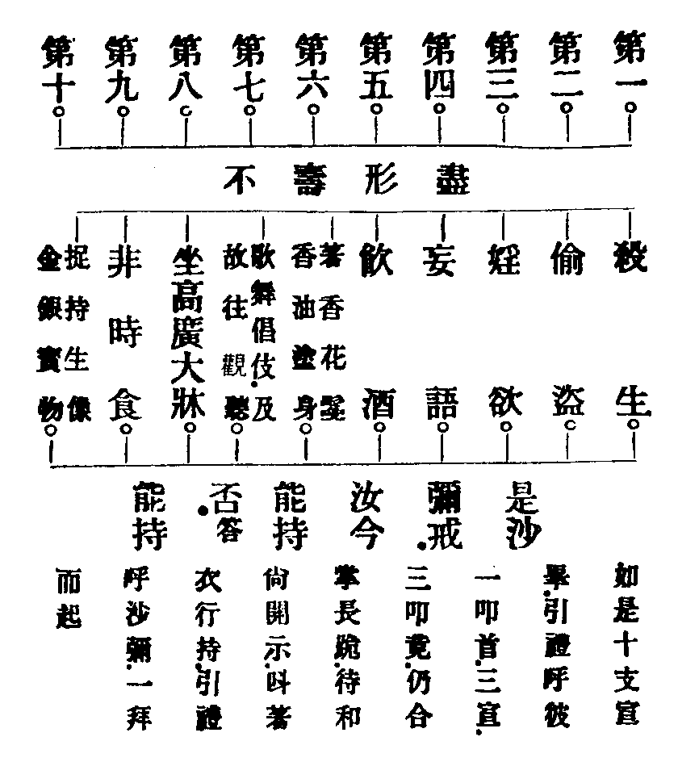

百丈叢林清規證義記卷第七之上
大眾章第七之上
述曰。歸虗之水。鄧林之木。以聚者。眾也。今夫大坊居眾千百。倒廩而炊。赭山而爨。亦其所聚也。而四方之來如歸。若己所固有者。果何為哉。葢佛以人之流轉三界。出沒生死。思拔其苦。而與其樂。故傳其徒。以垂其教。蚩蚩民生。雖不能盡遵其教。而心嚮其道之足以怙恃於我。又因其道。以尊其徒。於是經營屋宇以奠厥居。輸粟裹糧以足其食。雖摩肩接踵而至。惟恐奉之不及。不以其眾。而少怠也。不然。則有以尺地斗粟。而相爭者多矣。豈其獨愚。甘委其貲。以廣吾居。輟其飱。以食吾徒。吾徒之食于斯。居于斯。果何為哉。果何為哉。
剃度正範
重校此範。大分分四。初。遵律十例。二。崇正辯譌。三。五戒元基。四。十支正範。
初。遵律十例
(分十)。一。師遴德臘。二。機擇信志。三。剃度白僧。四。護世譏嫌。五。稱量老小。六。防禁越濟。七。濟度無私。八。道業元基。九。訓策苦行。十。敷設儀式。
一。師遴德臘者
(五德克備。二攝可依。十臘靡周。眾徒難畜。若也自乳未斷。安得令人斷乳。聖制森嚴。人師詎易。准律藏第二分。受戒犍度中。時諸比邱。未滿十夏。輙便度人。不知教授。有十夏滿。復愚癡故。弟子不被教誡。威儀莫諳。而諸比丘。具陳白佛。佛言。聽僧與度人授具者。白二羯磨。彼欲度人者。應徃僧中偏祖右肩。脫革屣。禮僧足。長跪合掌。至誠三乞。若不堪教授。復無法。及衣食攝取者。僧當語云。大德且止。慎勿度人。若有智慧。又以二事攝者。僧當和集。與度人法。白二羯磨。故知人師。必欽佛制。與法。全憑僧忍。律中豈但度人授具。遴選若斯。即依止闍黎。亦復如是。葢為不坑陷他家男兒。俾生長法身。琢磋道器。所謂師恩罔極。法乳難酬者。良由此也。其乞白羯磨。詳明律藏)。
二。機擇信志者
(出家事業。靡類尋常。必須深信彌堅。可企入道。且德行文章。尚不負庠中士子。況戒定慧學。豈無逐世外丈夫。第恐浮信出家。不恒念道。形同釋子。意注俗緣。皓首唐喪光陰。甘心坐待老死。如斯之流。縱度千萬。何益法門。是故凡求出家。先審因地。苟信志決定。誓願不更。再詰履歷分明。方可尅期濟度。若機中下。念涉躊躇者。暫寄行寮密察動止。或一載三年。俟信增堅。懇乞情切。剃髮未晚。所以師家。貴乎具眼。苟一子拔萃。何在眾多馬鳴菩薩云。彼師及弟子。當互審其器。若不先觀察。同得越法罪)。
三。剃度白僧者
(師資緣契。皈禮待時。教法隨機。應用復別。若獨止無侶。法在其師。苟與眾同居。教有明制。按律中。時諸比邱。輙私度人。共住苾芻。咸無知者。彼親往尋。詰問未獲。遂後見子。削髮為僧。入里分衛。故生譏嫌。佛知制云。若欲在僧伽藍中剃髮者。先當白一切僧。若僧不得和集。可房房語令知。然後剃髮。若僧得和集者。單白已竟。次方剃髮。既今叢林紊糅。度人乖準。願崇律制。誠為末運。善能住持正法也。所云單白羯磨者。乃不現前法。於下儀中自顯)。
四。護世譏嫌者
(僧倫肅靜。內衛無瑕。至道昌宏。外歸有德。須即世法。以建立佛法。必由出家。而慈護在家。若但知化導出俗。苟不勸白辭君親者。則招世譏誚。取辱梵侶。於道何昌。於僧何益。是故凡遇爵位貴人。名族子弟。禮師求度。樂作沙門者。應先委婉詢情。察確緣起。若果君親放游。世纏獲脫。可登四級重樓。接入六和清眾。而於臨時作辦。遙空拜辭。一者。不忘君親深重之恩。二者。以盡臣子最後之禮。斯則不越佛法。顯揚世法。若問俗緣未訖。理宜勸慰歸家。雖弗允受出家三聚。生定發慧以修行。亦可爾稟居家五禁。剪惡積善而植德。斯則不離世法。建立佛法。如是方便護世。可謂光顯法門。按律中。時有波斯匿王。勇健大臣。不白君主。私入伽藍。求僧出家。比邱輙度。王後知已。嚴立國禁。又諸比邱。多度釋種親愛童子。白淨飯王。啟白世尊。父母於子。多所饒益乳養瞻視。待其成長。奉侍終身。繼嗣不乏。願佛大慈。敕諸比邱。父母不聽。不得剃度。以是因緣。佛制不得度王臣。父母不聽子。亦不得度準僧祇律。王臣有四。或有名無祿。或有祿無名。或有名有祿。或無名無祿。是中有名無祿。有名有祿者。此國不聽出家。餘國亦不聽度。有祿無名者。此間不聽。餘處可聽。無名無祿者。此處聽度。餘處亦聽。子有三種。一。親子。父母所生。二。養子。從小畜養。三。自來子。依附作兒。是中親子。此國不聽出家。餘國亦不聽度。其養子。自來子。此間不聽。餘處得度。若準義例者。就親子中。亦可開四。方便濟拔。聖必垂慈。或父母在堂子多。或父存母亡一子。或母存父亡子多。或父母雙亡一子。是中父母在堂。母存父亡多子者若有一二。遠至他方。具信出家。求師剃髮。初去。雖未稟命於親。後歸。仍復陳情乞允。親悅放捨。師度無咎。其父存母亡一子者。事義亦爾。若父母雙亡一子者。既無二親可白。修行願報深恩。斯則彼此俱聽。任意出家。然四分律。君親未允。不聽剃度。依僧祇律。臣子料揀。內開出家。凡知律明師。須善故敪。切勿就開逃遮。循情侮制)。
五。稱量老小者
(剃髮異俗。棄利捐名。不矜其貴。唯重於德。所以侍師執役。與眾服勞。受經問義坐禪習觀。若太小者不諳。太老者難堪。精進。則萬行俱成。懈怠。則百事靡。辦按僧祇律云。若減七歲。若滿七歲。解知好惡。若過七十。若滿七十。能修善業者。咸聽僧度。若減七歲。若滿七歲。不知好惡。若過七十。若滿七十。臥起須人者。俱不聽度。是則朽木不雕。良珵可琢。嗟今時當法秋。聖訓罔聆。真淨法門。遂成流弊。或因執勞須使。薙髮莫分老稚。或以賄售貧丁。出家不為修行。乃至攢單養老。借教安身。濫廁緇衣。諍矯清眾。如斯之儔。根器既非龍象。種姓實是獅蟲。又何況分寮別院。就市依城。愛畜戀乳嬰兒。喜度思親孺子。盧同勤策。未諳息慈。致使欲昇返墜捨苦入苦。儻有好心出家。實為生死者。幸諸同仁如律剃度)。
六。防禁越濟者
(發心剃度。如上所明。外道出家。更宜酌量。必須邪毒吐盡。甘露可飲。異執不除。正信奚發。若率爾允肯薙染。猶恐仍尚邪宗。斯則因佛出家。壞佛正法。名曰越濟。亦云破內外道。按律中。有一裸形尼乾子。善能論義。逢舍利弗。以深義詰問。遂莫能答。因是求度。願作沙門。彼獲剃度。受具戒已。後著袈裟。還入外道。諸比邱僧。啟白世尊。佛言。聽與外道。僧中四月共住。白二羯磨若於共住中。厭離外道。及白衣法。聞人說外道過。毀訾不善者。彼亦毀訾不善。聞人說三寶德。讚歎歡喜者。彼亦歡喜讚善。如是可與受具為僧。若仍習外道。及白衣法。聞說外道事業不善。三寶事業善者。彼復嗔恚。返不喜悅。如是不聽受具為僧。然今此方。雖未有六師徒黨。偏邪等論。顯異導化。憎障法門。然不無五部六冊白蓮等教。冥集宣唱。愚惑人心。由其邇來。邪風廣扇。城野受熏。須欽聖制。善加自衛。苟法道端嚴。則王化有補)。
七。濟度無私者
(出家割愛。在俗存情。解脫至道。不立人我。無諍法門。泯滅疎親。所以羅云禮鶖子為師。慶喜拜采菽作範。法王子弟。垂式若斯。況後代沙門反無遵效。良由去聖時遙。人多情愛。或以五邪貪積。慮其物廣乏承。或因孑影獨居。憂其身老無顧。遂爾頻頻剃度。數數招徒。如是既無佛法傳宏。慧命云何繼續。究其所由。過歸為己。自悞害他。深可慨息。僧祇律云。比邱不得立心為己故度人。應念當使彼人。因我度故。修諸善業。得證道果。此則聽度。若自不能降。欲降伏他。不能自調。令他調伏。不能自解。令他解者。無有是處)。
八。道業元基者
(居家汩沒。昏煩不覺。出家虗寂。覺照有基。謂基即戒。定慧依生。定具則昏煩澄。慧發。則惑障斷。所以大聖設化。首重毗尼。又戒攝七眾。四級漸登真俗雖殊。元基無二。薩婆多律論云。若不受五戒。不得受十戒。不得受具足戒。若不受如是三種戒。不得受菩薩戒。五分律中。佛敕舍利弗度羅睺羅。令先與授優婆塞五戒。後與剃髮。授沙彌十戒。應知階列四級。示行布之不紊。授制二時。顯真俗之有分。若夫剃落。未沾戒品。雖云出家。但名形同沙彌。必也削髮。從師稟戒。方真出家。名曰法同沙彌。苟淨戒未具。體是白衣。非堪福田。四事艱納。設能勤修。三界難出。首楞嚴經云。縱有多智禪定現前。若不嚴持禁戒。必落魔邪等道。故知戒為元基。凡學佛之徒。詎可輕棄而不信受)。
九。訓策苦行者
(恣縱身心。耽染五欲。怯怖勞苦。惜養四支。乃多劫之習氣。世愚之常情。故知在家樂事。俱屬苦因。出家苦行。必致樂果。律云。若初欲出家者。先為說出家苦事。一食。一住。一眠。多學問。若答能者。聽僧剃度。否則不聽。所以為師度人。先應依律訓勉。觀機策進。寧可始難。不可初易。譬若欲采海寶。決不憚風波之險。況求佛道。豈可畏苦行之難。苟不諄切開發朦朧。咎則歸師。既聆詳訓指示。彼當奮發精勤。庶無自負靈根。不違慈命)。
十。敷設儀式者
(就中有二。一。即事顯法。二。設座安位凡求剃度之處。當擇露地。中徃四方。各去七步。散灑香水。蠲除塵垢。四角樹幢。周匝懸旛。其壇所設諸議。言即事表法者。以香表信。水表淨潔。非清淨之信。莫克消除諸煩惱故。須擇露地者。表出三界故。四角周匝。樹懸幢旛者。表住。行。向。地位。漸歷周圓故。四方各七步者。表出家修行。經四十賢聖位。福慧兩足故。涅槃經云。佛初生時。即周行七步。唱如是言。我於天人阿修羅中。最尊最上。南行七步。示現欲為眾生。作上福田故。西行七步。示現生盡。永斷老死。是最後身故。北行七步。示現已度諸有。喪生死故。東行七步。示現欲為眾生。而作導首故。二設座安位者。其壇中央。供本師釋迦牟尼佛。正東敷聖僧座。正西敷和尚座。正北設國王位。正南設父母位。各列香花燈燭之供。若逢天雨。乃有餘緣。不能露地敷設者。或於法堂。或就方丈。其五處座位。列供精嚴。必不可少。而斯求度剃髮者。謂之捨世俗家。生如來家。諸凡整肅僧體方尊。一事苟簡。出家泛常。所以發心勝固。全籍助緣)。
二崇正辯譌
所謂崇正辯譌者。(剃度一事。緇流首務。佛有明制。祖有程規。後代多舛因循罔究。律中有一外道。求度出家。比邱輙度。與之授具。遂後厭惡。不欲為僧。諸比邱具陳白佛。佛言。若欲度人。與剃髮者。應於頂上。留一周羅。問。若能出家者。方為剃去。梵語周羅。此云小結。亦云頂髻。謂以頂心留少許髮。綰一小結也。藏有清規。是唐百丈海禪師所集。葢為埀訓叢林。梵修典要。原師初訂。自必事義周圓。後因歷朝。重增修補。遂致事義。多違佛制。且舉沙彌得度篇中。略述譌謬。以證將來。彼云。擇期既定。隔宿剃頭。頂心留髻。次日集眾請師。令剃頭者。禮拜長跪。維那作梵舉唱。大眾接和云。神仙五通人。造設於呪術。為彼慚愧者。攝諸不慚愧。如來立禁戒。半月半月說。已說戒功德。稽首禮諸佛。作是唱和訖。與剃髮竟。即將袈裟。置彼頂上。以沙彌十戒相。與近事五戒。即一時頓受。深乖律制。必非祖規原儀至所云隔宿剃頭。頂心留髻。次日請師。與剃髻者亦復謬誤。須知事在當朝。理無隔宿。應於剃髮之日。始自請師陞座。乃至開導竟。拜辭君親已。令以水灌其髮。師未舉刀。先與綰髻。次則從下。周旋剃上。至頂髻邊。師乃停刀。叮嚀三問。彼亦三答能出家者。與斷頂髻。始為形同沙彌。又維那舉唱之偈。出自四分律藏首卷。一百八十六句頌文。彼截末後八句。用為剃髮之偈。然此偈。是優波離尊者。同五百羅漢僧。結集律藏時。先禮三寶。祈求加被。頌敘戒益。弁之卷首。謂佛在世。以正法戒。攝取於僧。令慚愧守持。具足梵行。非若外道。造設呪術。邪引迷癡。增長貪愛。是故如來制立布薩。令諸比邱。半月半月。和合一處。如制說戒。說戒。即誦戒也。彼以此布薩誦戒之偈。而用為剃度沙彌舉唱者。為再誤也。又剃度竟。以五戒十戒相。一時授受者。由於未甞考五分律中。佛令於未剃髮前。先授在家優婆塞五戒。恐彼返悔。令植善根。儻信志不退。道念愈堅。方與剃髮。後授沙彌十戒。故不以在家五戒。而與沙彌十戒同授也。又既剃髮。形同沙彌。非是居俗優婆塞故。上來論事。則所辦之事有殊。論人。所應之人有別。論法。是剃度法。非布薩法。即此一事。人法事三。皆輕違聖制。干非不少。今如有初發道心。求師剃髮者。當遵五分律制。亦不可以誦戒之偈。舉唱。若是已受五戒。來求剃度者。當遵四分。僧祇。十誦。根本等律。即為授沙彌十戒。亦不必再授五戒。後授十戒。而謬行五分。應知正制難紊。譌規須覈)。
三五戒元基
(分十)。
第一導引
(詳閱毗尼。諸有所作。若順情彼許。多須乞詞。今剃度沙彌。依五分律。佛言。先授優婆塞五戒。後與剃髮。授沙彌十戒。所以准義加儀。便於行用。若有發心求度允彼出家。尅期既定。於前一日。知賓師。應將求度者至維那。及引禮諸師所。令彼作禮三拜。起立合掌。白云)。
我(某甲)知身是苦。了世皆空。不逐塵緣。願歸佛道。心雖如是無更。於儀尚未慣習。今懇諸師。曲垂示訓。方便導引。
△維那師云。
善哉可爾。汝既法門初入。儀規罔諳。今當為汝。啟白方丈。述誠懇請。汝應端意肅恭。隨我而往。
(彼求度者。聞已。一觸禮而起。維那及引禮師先行。彼隨於後)。
第二啟白
(諸師導彼。至於方丈。安住門外。先通侍者。即於方丈。拂嚴法座。香花燭供。請佛升座。次則二引禮鳴手磬。請和尚出室。和尚出已。禮佛。陞座。拈香。就座而坐。維那向和尚。展具三拜。長跪。合掌。白云)。
彼(某甲)曾蒙慈允。尅期剃度厭世之心已決。學道之志愈堅。故今恭詣座前。焚香頂禮。惟願和尚。大悲攝受。先施優婆塞戒。令彼由初級。而登四級之址。後乞薙髮披緇。自居家以入出家之眾。行布靡躐。如律奉持。下情無任懇禱之至。
(作是一白訖。一拜起具復還本位而立)。
第三請師
(此儀不同戒期受戒。而令執香。今則維那為彼啟白。彼身住立門外。但呼近座。拈香三派。若求度者多。雖呼同進。亦以一人。近座拈香。餘皆兩列。立定已。引禮師呼云)。
善男子。緣右而進。(彼進已)近法座前。(至已)合掌鞠躬。 長跪。 拈香三瓣。
佛慈廣大。普度悲深信者方能釆法音。三歸體納心。求稟五禁。爐爇妙香雲。
(維那師云)。
夫居家具信。似火裏蓮生。戴髮歸依。如水中月現。汝今欲受三歸五戒。而為出世之元基者。理須恭請明師。護諸德本。今為汝焚香敷座。伸請(某)堂上(某)和尚為汝作三歸五戒本師。請師之語。汝合自陳。恐汝未能。我今教汝。稱自己名。(稱已)。其餘言詞。皆隨我道。
大德一心念。我弟子(某甲)。今請大德。為三歸五戒本師願大德。為我作三歸五戒本師。我依大德故。得受請淨戒。慈愍故(三請。三叩。未遍稱大慈愍故)。
第四開導
(和尚鳴尺云)。
善男子。汝既至誠三請。可以為汝作五戒本師。所有語言。汝當諦聽。原夫戒德難思。冠超眾象。為五乘之軌道。實三寶之舟航。禪定智慧。以戒為基。菩提涅槃。以戒為本。發趣方行戒為宗主。戒為却惡之前鋒。入道之初章。譬如世間造樓閣相似。必先固其基址。若無基址。徒架虗空。必不成就。遺教經云。當尊重波羅提木叉。如暗遇明貧人得寶。戒是正順解脫之本。若人能持淨戒。諸善功德。皆悉得生。當知戒為安隱功德之所住處。然戒有多品。汝今求受五禁。乃是趣善之元首。出苦之要津也。善生經云。此戒甚難得。能為沙彌。大比邱及菩薩戒。而作根本。是故我今。未與汝剃髮出家。先授汝優婆塞五戒。不可以輕慢之心領受。應當生恭敬之心守持。汝能依教而行否。(答)能依教奉行。
第五請聖
(和尚鳴尺云)。
善男子。汝既能依教奉行。欲受此根本五戒者。理須迎請 三寶。慈悲證盟。次屈萬靈。威神鎮衛。汝起立合掌。隨我言音。作觀運想。一心啟請。稱自己名。
(和尚起座。拈香。作梵伸請維那。引禮。同聲唱利。專注一境。以。求感通)。
香花迎。香花請。弟子(某甲)一心奉請
娑婆教主。本師釋迦牟尼佛。西方接引。阿彌陀佛。當來下生。彌勒尊佛。盡虗空遍法界。一切諸佛。惟願不違本誓。慈光攝照。證盟受戒(三請。三叩。下請準此)。
香花迎。香花請。弟子(某甲)一心奉請
大小二乘。毗尼律藏。五篇三聚。解脫木叉。十二分經。權實教典。離欲真淨。甚深法寶。謹運一心。歸命頂禮。
香花迎。香花請。弟子(某甲)一心奉請
觀音勢至。文殊普賢。清淨海眾。諸大菩薩。律藏會上。優波離尊者。西天東土。歷代祖師。傳南山宗。諸大律師。中興律祖慧雲馨公大和尚。(以下再入座上師得戒本師和尚諱)惟願不違本誓。慈光攝照。證盟受戒。
香花迎。香花請。(某甲)一心奉請(此請不稱弟子)
光明會上。寄位諸天。梵釋四王。天龍八部。伽藍土地。護戒神王。金剛力士。幽顯靈祇。唯願不違本誓。監壇護戒 (如是一一三請。三叩首已。和尚就座而坐) (引禮呼彼)。長跪 合掌。誠諦而聽。
第六懺悔
(和尚鳴尺云)。
適間迎請三寶。證盟受戒。今則三寶垂慈。光明攝照。如鏡當臺。靡不徹鑑。竊恐汝從曠劫至今。造諸惡業。為戒障緣。不堪領受。宜增深信。向三寶前。求哀懺悔。譬如染新色。而浣洗垢衣。盛甘露而蕩除穢器。懺悔之語。汝合自陳。恐汝不能。我今教汝。稱自己名。(稱已)所有言詞。隨我求悔。(下偈。和尚舉二句。引禮教彼說二句。每二句一叩首。言音明了)。
我弟子(某甲) 從於無始 以至今生(叩)毀壞三寶。
作一闡提 謗大乘經 斷學般若 弑害父母
出佛身血 污僧伽藍 破他梵行 焚毀墖寺
盜用僧物 起諸邪見 撥無因果 狎近惡友
違背良師 自作教他 見聞隨喜 如是等罪
無量無邊 故於今日 生大慚愧 克誠披露
求哀懺悔 惟願三寶 慈悲攝受 放淨光明
照觸我身 諸惡消滅 三障蠲除 復本心源
究竟清淨 (如是三遍懺悔)
南無普賢王菩薩摩訶薩(三稱三拜)。
(此偈乃廣陳懺悔。若時促。仍用大經四句。見下正範。誠敬則四句消除。不誠則縱廣難懺)。
第七問遮難
(和尚鳴尺云)。
汝今既已懺悔往愆竟。當遵善生經。先問七種遮難。然後與汝受戒。有無實答。勿得覆隱。
第一。汝曾盜現前僧物否(若無。當答無。若有當答有。下皆准此)。
第二。汝曾於六親男女中行婬否。
第三。汝曾污破僧尼梵行否。
第四。汝曾於父有病時。捨去不顧否。
第五。汝曾於母有病時。捨去不顧否。
第六。汝曾於師長有病時。捨去不顧否。
第七。汝曾殺害發菩提心眾生否。
第八授歸戒
(和尚鳴尺云)。
善男子。汝於現生之中。既無七種遮難。身心皎潔。道器完美。我可以為汝。先授三歸發體。次宣五戒令持。所言三歸者。薩婆多律論云。以三寶為所歸。欲得救護。不得侵凌故。歸依佛者。歸依法身。謂一切智。無學功德。五分所成也。歸依法者。歸於自他淨處。謂斷欲離欲。滅諦涅槃也。歸依僧者。歸於第一義僧。謂良祐福田。聲聞學無學功德也。而此三寶。真淨德用。能清淨三業。能障閉三塗。能破除三障。能不漏三有。能超越三界。能趨證三乘。所以佛法。以斯三歸為本。通發一切戒品。成就一切功德故。汝當以殷重慈護心。遍緣法界情非情境。於所緣境上。誓斷一切修惡。誓一切善。誓度一切眾生。若果能發如是廣大上品心。其所受者。是上品三歸五戒。今正是汝受三歸。感發戒體之時。汝當至誠運想。緣境發心。隨我語受。先稱自己名(稱已。待和尚說一句畢。引禮教新戒隨說一句。不得參差快接)。
我。(某甲)盡形壽歸依佛 盡形壽歸依法 盡形壽歸依僧 (如是三番皈依。三叩首畢) (和尚鳴尺云)。
上來三歸。正是納體。更加三結。謂之羯磨。汝當至心。隨我語道。(向下結文。待和尚說一句。新戒隨說一句。准善生經。說畢一叩首佛法僧。各三遍)。
我(某甲)歸依佛竟。寧捨身命。終不歸依自在天魔等。歸依如來至真等正覺。是我世尊。慈愍故。
我(某甲)歸依法竟。寧捨身命。終不歸依外道典籍。歸依如來所說。三藏十二部。一切經典。是我所尊(慈愍故)我(某甲)歸依僧竟。寧捨身命。終不歸依外道邪眾。歸依清淨福田僧。是我所尊。慈愍故。
(次正宣戒相 和尚鳴尺云)。
我已為汝。結顯三歸竟。汝已得五戒之體。再為宣五戒之相。而令汝識相守持。謹護其體稱自己名。(稱已)。
是優婆室戒。汝盡形壽能持否。答 能持(如是三宣戒相。三叩首已。再總結一問答)。
善男子。此五戒是諸戒之根本。入道之階梯。趨解脫門。證菩提果。始從不殺。乃至第五不飲酒。汝能具足持否。(答)能具足持。
第九發願
(和尚鳴尺云)。
阿含經云。受五戒已。當教發願。良以行願相資。福慧方成。猶如寶車。若無其輪。終難運載。是故我今教汝。汝隨我語觀想 三寶。恭對佛前。志心發願。稱自己名。(稱已即云) 我(某甲)志心發願。 願此五戒功德。 不墮三塗八難。 持此功德。 惠施法界一切眾生。 皆發菩提心。 同生極樂國。 花開見佛。 得聞佛乘。 蒙佛授記。 還入娑婆。 化導有情。 俱生淨土。 永離諸苦。 上品上生(待和尚說一句。新戒隨一句。如是三番。三叩首)。
第十誡囑回向
(和尚鳴尺云)。
善男子。由汝宿植德本。今遇良緣。而於五濁惡世。得生正信人家。歸依三寶。受持五戒。謹慎愛護。不可違犯。如驪龍護珠。犛牛愛尾。如守護堤塘。勿令滲漏。防禦城壍。勿使毀缺。若犯斯五中前四重者。譬如死屍。大海不納。破戒之人。戒海不容。更不得受沙彌十戒。比邱具戒。菩薩大戒。以根本破壞故。善法難生故。汝今能一一守持否。(答)能如法守持。(和尚云)既能如法守持者。來朝僧中。為汝剃髮。自火宅而拔至清涼。從迷途而接歸正道 (和尚鳴尺。起座。合掌。回向云)。
以此授戒功德。布周沙界。大眾同音。念佛回向(念佛號數百聲)。
(引禮呼受戒者。禮謝三拜。起立一傍) (維那師舉回向) (大眾齊聲同和)。
授戒功德殊勝行 無邊勝福皆回向 普願沉溺諸有情 速往無量光佛剎 十方三世一切佛 一切菩薩摩訶薩 摩訶般若波羅密。
(和尚下座禮佛畢。回向偈竟。二引禮前行。受戒者次之。送和尚歸方丈。禮儀如常。復至座前。拜謝引禮已。徐各還本所△知客師領新戒。到祖師前禮拜。及一切尊長比邱等。俱應作禮而畢。又律中女人出家。請尼師說五戒十戒。維那。引禮。俱尼師。正範中善男子改善女人。沙彌下添一尼字)。
四。十支正範
(分十)。
第一。通白敷座
(已上授優婆塞五戒。此下剃髮。授沙彌十戒。期有前後。法作二時。是以別立科目。便於設座集眾。若遇餘緣。與夫時促。只可一日者。亦須別寅午二時△彼求剃髮者。次日晨朝。先至維那。及引禮師所三拜。起立。合掌白云)。
我(某甲)昨承諸師引導。得入近事之名位。五戒已登。欲脫居家之俗儀。十戒未進。今復懇請。再施方便。令(某甲)鬚髮剃落。僧相早成。佩德無涯。終身荷感。
(維那師云)。
善男子。律已楷定。法當次第。我今為汝。擇處敷座。鳴椎集僧。恭請和尚。臨座證盟。與汝剃髮授戒。汝聞犍椎聲時。以俟作辦。
(彼復一拜而却。維那即同引禮。擇處敷座。或於露地。或在法堂。或就方丈。命淨人灑掃淨潔。其所敷座。如前設儀中明)。
第二集眾請師
(彼求度者。聞犍椎聲。持縵五七二衣及鉢。隨所依剃髮師。與眾俱集已。維那將彼所持衣鉢。置之聖僧座右。戒刀淨瓶。安於和尚座上。洗髮盆器。一一備之)。
(維那師云)。
善男子。法座已敷。大眾已集。汝當至中向上。恭謹作觀。一心頂禮。
十方三寶。三拜。以求慈悲攝受(彼拜訖。又云)。
向東聖僧座前。頂禮三拜。以求證盟(彼拜訖。又云)。
向左右現前。雲集大僧。各禮三拜(彼拜訖。又云)。
(二引禮鳴手磬前行。執香者隨次。入室。禮儀如常。和尚受請。出室。至座前。二引禮近佛座前。左右對列。執香者在前側立。和尚展具禮佛三拜畢起具。至聖僧座前。展具三拜畢。侍者起具。和尚陞座。拈香。維那舉。眾同和)。
南無雲來集菩薩摩訶薩(三稱)(引禮師云)。
執香者。近佛座前。(到已)長跪。上香。(插香已)復位。居中。聞磬聲。至誠頂禮三拜。 起具。 向東聖僧座前。(到已)展具。聞磬聲。作禮三拜。(拜訖)起具。向西和尚座前。(到已)展具。 聞磬聲。作禮三拜。(拜訖)起具。復歸本位(却退於左班而立)。
第三遣求度者出
(維那師云)。
善男子。今者和尚陞座。海眾雲臻。將秉羯磨。和僧作法。汝且出。至見處不聞處立。待呼召時。方可入眾。
(彼度者至中一拜而起一引禮導於見處不聞處立定。引禮復還眾中。聽僧羯磨。此遵律制。名曰不現前羯磨法)。
第四和僧羯磨
(和尚鳴尺云)。
僧集否。(維那答云僧已集)和合否。(答云和合)未受大戒人出否。(答云已出)不來諸比邱。說欲來。(若無說欲者。答云。無。若有者。彼受欲比邱。即答云。有。出眾向上一拜。長跪。合掌。說云)(大德僧聽某甲)比邱。我受彼欲。彼如法。
(僧事。與欲羯磨 座上和尚答云。善 彼應云。爾。一叩而起。却還本位) (所謂欲者。欲。即急事。不能隨眾。故托人代說。某甲欲有事)。
僧今和合。何所作為。(答云。與剃髮羯磨)今此眾中。誰能羯磨。(其羯磨師。於眾中合掌。答云 我某甲比邱堪能)長老既能。出眾秉白。
(羯磨之制。坐則俱坐。立則俱立。若羯磨者立。聽者坐。若聽者立。羯磨者坐。皆犯非法。羯磨不成。行臥亦爾。是以和尚。問知有羯磨人。應起立而聽。其羯磨者。出眾向中。三拜起立。合掌作白云)。
大德僧聽。彼(某甲)欲求(某甲)比邱剃髮。若僧時到。僧忍。聽與(某甲)剃髮。白如是。作白成否。(現前大僧。合掌齊答云)成。
(羯磨師如是白竟於中向上一拜而起。復歸原位。其為剃髮師者。聞僧忍可。允聽剃度。即當出眾。向中對佛座。展具三拜。復向東西二座。各三拜。起具。退立本位)。
第五召求度者入
(僧和作法竟。維那移步向外。對求度者。招手召云)。
善男子汝來。(彼隨召而來至一傍立定)適間秉白羯磨。僧皆忍聽。可令汝於僧伽藍中剃髮。汝應至中向上。(至中已)近佛座前。至誠長跪。拈香三瓣。懇禱十方三寶。慈悲庇祐。
(彼近前長跪。拈香。維那舉香讚。大眾合掌齊和。引禮呼彼起立。轉下居中。聞磬聲。至誠頂禮三拜)。
佛生西域。教法流東。奧旨深談物我空。因信出樊籠君親允同。遭際實難逢。
南無香雲葢菩薩摩訶薩。(三稱。三拜畢。香讚竟。呼云)長跪 合掌。
(次正請師)(維那師云)。
夫凡心。即聖證之體。唯覺乃知。幻軀。為載道之器。非脩莫任。汝今。既具信出家。樂脩梵行者。理應乞求明師依慂慈範。今為汝恭請(某)堂上。(某)和尚。為汝作證盟剃髮受戒本師。而況此師精嚴毗尼。善訓後學。汝當端秉一心。隨我伸請。請師之語。汝合自陳。恐汝未能。我今教汝。稱自己名。(稱已)其餘言詞。皆隨我道。
大德。一心念我弟子(某甲)。今請大德。為證盟剃髮受戒本師。願大德為我作證盟剃髮受戒本師。我依大德故。得剃髮受戒。慈愍故(三請。三叩首。末遍稱大慈愍故)。
第六開導(文出古壇儀)
(和尚鳴尺云)。
善男子。今汝殷勤三請。可以為汝。作證盟剃髮受戒本師。所有語言。汝當諦聽。原夫心源湛寂。法海淵深。迷之者。永劫沉淪。悟之者。當處解脫。欲傳妙道。無越出家。放曠喻如虗空。清淨同如皎月。脩行緣具。道果非遙。始從尅念之功。畢證無為之地。所以大覺世尊。捨金輪之寶位。子夜踰城。脫珍御之龍衣。青山斷髮。容鵲巢於頂上。掛珠網於眉間。脩寂滅而證真常。斷塵勞而成正覺。三世諸佛。不說在家成道。歷代祖師。阿誰行染度人。所以佛佛授手。祖祖傳心。不染世緣。方成法器。故得天魔傾伏。外道歸降。上酬四重之恩。下濟羣生之苦。所謂。流轉三界中。恩愛不能捨。棄恩入無為。真是報恩者。出家之後。禮越常情。不拜君王。不拜父母。汝今可離我座。想念君親恩德。專精拜辭。然此一拜謂之最後拜也。
第七辭謝君親
(引禮師云)。
善男子。一拜而起。隨我詣南北位前。先以世俗之禮。辭謝君親。次以出世之儀。歸投佛教。
(一引禮。導彼求度者。至北位前立。呼云)。
善男子。汝可端身望北。存想國王水土深恩。至誠鞠躬。作禮四拜 (彼四拜畢。復導至南位前立。呼云)。
善男子。汝可端身向南。注念父母生成厚德。至誠鞠躬。作禮四拜 (彼四拜畢。復導至正中而立。呼云)。
善男子。汝已辭謝君王。拜別父母。歸投三寶。為佛弟子。應端身合掌。至誠作觀。聞磬聲。頂禮十方常住三寶九拜 (彼九拜畢。復至和尚座前立。引禮皈本位已。呼云)。
第八剃髮
(和尚鳴尺云)。
善男子。斯時諸緣皆具。眾僧同慶。我今離座。先以甘露灌汝之頂。令汝心地清涼。煩惱不侵。次以戒刀。斷汝之髮。令汝情塵永滅。梵行增長。此乃曠劫多生之善因。非今朝偶爾之僥俸。汝當愈加深信。生大歡喜。
(和尚手擕淨瓶。離座。至求度者前。用前瓶水。以指三滴其頂已。一侍者接和尚淨瓶。一侍者取座上戒刀奉和尚。尚接刀在手。舉偈祝之。大眾接和)。
(此偈出古儀中) (和尚舉偈祝竟。以刀過與求 度者捧之。和尚復坐 維那師云)。
善男子。今座上和尚。以刀付汝。汝當一拜而起。至汝剃髮師前。雙膝著地。兩手捧刀。求師剃度(拜起。至剃髮師前已 引禮師云)。
一拜。長跪。奉刀與汝師。所有乞詞。恐汝未能。我今教汝。隨我言道。(不必作梵。但直說明了)大德。一心念。我弟子(某甲)。今求大德。為剃髮阿闍黎。願大德為我作剃髮阿闍黎。我依大德故。得出家。慈愍故(三乞。三叩首)(剃髮師云)。
善男子。待我先禮。
本師釋迦牟尼世尊。及東西座已。與汝剃度。汝且起一傍。以水洗髮 (彼起洗髮。其師禮中佛座。及東西二座。各三拜畢。長跪和尚座前。合掌白云)。
今承和尚主座開導。灌頂證盟。我比丘(某甲)。正為(某甲)剃髮。(和尚答云)善哉。如法。(其師答云)爾(一拜而起。轉下至中。居左而立。其求度者。洗髮已。手捧髮板。長跪師前。師當以彼頂中少許髮。綰一小髻。舉刀從下。周旋剃上。維那師舉淨髮偈。每句舉已。大眾接和)。
剃除鬚髮 當願眾生 遠離煩惱 究竟寂滅。
唵 悉殿都 漫多囉 跋陀耶 娑婆訶
(三舉。三和。剃髮至頂。偈畢。停刀。師問彼云)。
我已為汝。削除頭髮唯有頂髻。汝當諦審決定。若不能忘身進道。忍苦脩行者。少髮猶存。仍同俗侶。放汝歸家。未為晚也。故我今於大眾之前問汝。汝果能決志出家。後無悔退否。(彼答云 決志出家。後無悔退)汝果能決志出家。後無悔退否。(如是三問。彼亦如是三答)既能決志出家。而無悔退者。斷頂髻於刀下。愛纏永絕。脩梵行於僧倫。福慧漸增(彼師與剃髮竟。復至和尚座前。手捧戒刀。白云)。
我比邱(某甲)。今仗和尚慈悲證盟。為彼(某甲)剃髮已竟。(和尚答云)善(作是白已。將刀送至座上。一觸禮而起。退歸原位)。
(彼得度者。一拜而起。至於一傍。抖盡殘髮。整理衣服訖。仍於本處。長跪。合掌。一引禮近東座聖僧前。取先所置二縵衣及鉢。送安和尚座上)。
第九授沙彌戒
(和尚鳴尺云)。
善男子。汝頭髮既除。儀表異俗。但名形同沙彌。若受十支淨戒。身居伽藍。依師而學。食共大僧。著衣而[(歹*又)/食]。方名法同沙彌。是故我今先示汝沙彌衣鉢。次授汝沙彌十戒。以便行用。不乖律儀。(和尚手持縵五衣云)此是汝沙彌所著縵條五衣。縵者。謂非割截縫成。而無長短條相。此衣汝凡出入往來寺中執役。與眾服勞。一切時中恒披。不離其身。所以名曰作務衣。(放下五衣。持七衣示云)此是汝沙彌所著縵條七衣。凡一切入眾清淨時應披。所以名曰入眾衣。(放下七衣。持鉢示云)此是汝沙彌所持之鉢。梵語鉢多羅。翻云應量器。凡受食時應用。往來出入。當掛右肩。護隱在腋。(放下鉢云)善男子。汝衣鉢如法。戒可以受。汝自無始。乃至今生。妄想障覆心源。識情貪愛塵境。不知諸法。本無自性。於中種種取捨。廣造惡業。身心既穢。淨戒安受。是以汝今。恭對。
十方三寶前。求哀拔濟。願無始未脩之善。從今精脩。一往所作之惡。更不再作。三寶垂慈。庶幾納戒。汝隨我語。生大慚愧。洗心懺悔。稱自己名(稱已。上舉偈。下隨懺。一句一叩)。
往昔所造諸惡業。┌─一切罪障皆懺悔。
皆由無始貪瞋癡。├─今對佛前求懺悔。
從身語意之所生。┴─一切罪根皆懺悔。(如是三懺。十二叩首)。
懺悔已竟。我今先為汝。秉宣三歸。正是汝納體之時。汝當發上品心。受上品戒。所言上品心者。今對三寶前。發斷惡脩善利他之心。遍緣法界。一切情與非情境。而於所緣境上。誓斷一切惡。無惡不斷。誓脩一切善。無善不脩。誓度一切眾生。無生不度。能發如是心。為之上品心。所得沙彌戒。為之上品戒。汝當內發如是心。緣如是境。外隨我語。諦想領受。不得餘覺餘思。稱自己名(稱已。待和尚說一句已。求度者隨說一句。勿得錯亂)。
我(某甲)盡形壽。歸依佛 歸依法 歸依僧 我今隨佛出家 某甲為本師(本師者。即座上和尚。自說己名) 如來至真等正覺 是我世尊 慈愍故(如是三說。三叩。末遍加大慈愍) 上來三歸。正是納體於心。再加三結。得法圓滿。謂之三番羯磨。稱自己名。(稱已)隨我所道。
我(某甲)歸依佛竟 歸依法竟 歸依僧竟 我今隨佛出家已 某甲為本師 如來至真等正覺 是我世尊 慈愍故(如是三結。三叩)。
善男子。三歸三結竟。汝已得清淨戒體。今為汝宣十戒之相。令汝識相守持。以護其體。稱自己名(稱已)。

(和尚云)。
受戒既畢。汝今已具沙彌之性體。應著縵五七二衣持鉢。以表沙彌之外相。引禮大德。可為彼著衣誦偈。教知行持(引禮將座上衣鉢取與。彼先自掛鉢肩。次著縵五衣。教誦偈云)。
善哉解脫服。無上縵五衣。我今頂戴受。世世不捨離。
唵。悉陀耶娑訶 (又為著縵七衣。教誦偈云)
善哉解脫服。無上縵七衣。我今頂戴受。世世常得披。
唵。度波度波娑訶 (又教彼向座展具。誦偈云)
臥具尼師壇。長養心苗性。展開登聖地。奉持如來命。
唵。檀波檀波娑訶 (令彼三拜。維那師舉。大眾同音齊和云)
南無寶曇華菩薩摩訶薩(三稱三拜)。
第十勸誡回向
(和尚鳴尺云)。
汝沙彌。今得鬢髮落地。袈裟著身。入於善法聚中。出其塵囂境內。日新道業。永捨攀緣。我今示汝五德十數。壯悅道志。依而奉行。所言五德者。福田經云。一者。發心出家。懷佩道故。二者。毀其形好。應法服故。三者。永割親愛。無適莫故。四者。委棄身命。遵崇道故。五者。志求大乘。為度人故。所言十數者。僧祇律云。一者。一切眾生。皆依飲食。(今者食存五觀。戒貪瞋癡故)二者。(知)名色。(是假悟我法二空故)三者。(識)痛癢想。(是妄心分別斷煩惱障。及所知障故)四者(明)四諦。(知苦。斷集。慕滅。脩道故)五者。(照見)五陰(皆空故)六者。(知身虛偽猶如空聚)六入(村落。結賊所住故)七者。(善用)七覺支(故)。八者(常行)八正道(故)。九者。(了)九界眾生居。(皆不免苦。空無常無我故)十者。(觀)十一切入。(本自不生。性無和合故)此是沙彌。法應如是。既聞知已。恒記莫忘。若能精學躬行。沙彌十支戒淨。二十四門威儀。五德漸立。十數通脩。將來十師登壇。白四受具成比邱僧。入三寶數。紹隆聖種。功德難思。從斯已去。倍增淨信。勿得怠惰。恣縱身心。能如是依教奉行否。(答)依教奉行。(和尚云)既能依教奉行。以此剃髮受戒功德。上報四恩。下濟三有。大眾同音。念佛回向。(和尚鳴尺一聲起座。合掌念佛。引禮呼彼沙彌禮謝和尚。三拜。起立於傍)維那師。舉回向偈(大眾齊和)。
授戒功德殊勝行 無邊勝福皆回向 普願沈溺諸眾生 速往無量光佛剎 十方三世一切佛 一切菩薩摩訶薩 摩訶般若波羅密(和尚下座禮佛訖。如常儀送和尚歸方丈。隨喜雲集大眾。禮佛三拜。彼沙彌仍到座前。禮謝左右大眾。及維那引禮師竟。候大眾去畢。彼剃髮師將沙彌。回至祖堂禮祖已。即徃客堂庫房等。處處拜謝畢。即收拾壇場)。
證義曰。如來涅槃時。扶律談常。囑諸比邱。以戒為師。所謂續僧伽命脉。正法得久住。全在持戒也。然制律之初。首創五戒。出家之始。先說十支。百丈集錄於清規中。為剃度正範。真至要也。邇來藏本多譌。久置高閣。流通善本。世亦罕見。剃度說戒。閴寂無聞。何怪乎佛法衰微也。茲者幸獲真規。得覩斯範。係金陵。寶華山見月律師校正。宜廣流通。挽回時弊。俾剃度沙彌。得聞正範。即老戒比邱。亦須玩省。咸遵佛敕。毋使遺忘。所冀見聞受持。共為苦海津梁。傳佛正行。永作法門柱石。內崇聖教。得正法以恒隆。外翊王化。保山河而永固。幸勿輕視斯儀。致同搬演故事。此篇但便作法授受。故不贅錄證義記文。所貴體達佛意名實相應。則不負君親允度之深恩矣。
(附)剃度規約(凡八條)
夫叢林之設。本為十方衲子。辦道脩行。不畜驅烏徒眾。恐成流弊。故童年剃落。多在菴堂靜室。但請叢林住持。為說戒本師耳。若或壯年志道。欲為衲子。求叢林剃度。此沙彌得度。即大眾之始事也。所關既重。則不得不慎為檢擇。以立賢聖之基。所有條約。備列於左。
(附)上供疏式
伏以。世尊斷髮。視王位如弁髦。聖僧出家。似翔鳥而脫絆。俾從凡以入聖。願自度而利生。上宏佛祖家風。永作人天眼目。爰有大清國。某省。某府。某縣。某寺。依止。奉佛剃度比丘某甲。求度沙彌某甲。是日至心拈香。歸依娑婆教主。釋迦文佛。靈山會上。諸佛聖賢。金蓮座下。恭通情旨。蓋因求度沙彌。俗姓(某名)(某甲)。年幾歲幾月幾日(某)時建生。於今(某某)年月日。在於(某)寺。歸依(某甲)比丘為弟子。改名(某甲)。剃染受戒。切念新度沙彌(某甲)。久滯世羅。未曉出塵之徑。近參大教。漸知入道之門。嗟業繫於凡籠。愧身羈於俗網。發心脫白。立志染緇。幸遇勝緣。遂茲深願。由是敬獻清齋一簋。聊陳葵藿寸衷。伏望洪慈。俯垂昭格。所願慈光圓照。法雨普滋。使新度沙彌。披衣持鉢。作佛法之棟梁。聽教參禪。翻死生之窠臼。色身康健。魔障無侵。真操實履。到不思議之妙門。出世為人。振向上機之元旨。如斯陳願果遂是期。右疏恭請三寶證明剃度受戒文疏。年月日。剃度比丘(某甲)。率新染沙彌(某甲)具疏。
證義曰。古人謂。出家乃大丈夫之事。非將相所能為。雲棲蓮池師云。將以武功定禍亂。相以文學興太平。天下之事皆出將相之手。而曰出家非其所能。然則出家。豈細故哉。按雲棲之言。引而不發。葢將以越生死流。登菩提岸。曠劫覊鎻。一朝解脫。自利利他。度生無盡。而創始於出家一著。此所以非細故也。古之高人。以有見於此。故出家為莫大因緣。十分慶幸。如魚縱壑。似鳥飛空。既具斯心。故縱於一切行門。乃至十戒。二百五十戒。十重。四十八輕等。遵奉行持。無有疲厭。今則不然。或父母因貧苦。而捨之空門。或本身為事故所迫。而勉求剃染。其初原未嘗發真實心。故其後亦不樂真實行。全賴為師者。先納之於戒律之中。而又時加訓誨。俾之習氣漸除。則道心漸固。中人之性由教而入者居多。庶幾可望其習與性成。而日進於高上耳。五分律。佛敕舍利弗度羅睺羅。先與授優婆塞五戒。後與剃髮。授沙彌十戒。此剃度授戒最初之模範。柰何今之出家者。既多非發心之人。而為師者。復不代為根本之慮。師之所以教。弟子之所以學。仍是名聞利養之心。應酬世故之事。求其實為生死自度度人者。尠矣。即間有之。無如始基不立。終歸廢棄。語以受戒一事。則以當俟三壇總授為辭。無論衣鉢無資。或事故耽擱。年復一年未沾戒品者不少。即幸而身登戒壇。而習慣非法。反以法事為故事。旅進旅退。勉強支持。至於滿散而已。噫。受戒千百。得戒幾人。法門之衰。由是之故。竊謂此中。師徒均有過咎。而師之過咎。似為偏重。禪林寶訓。黃龍云。父嚴則子敬。今日之規訓。後日之模範也。譬治諸地。隆者下之。窪者平之。彼將登於千仞之山。吾亦與之俱。困而極於九淵之下。吾亦與之俱。伎之窮。妄之盡。彼則自休也。又云。姁之。嫗之。春夏所以生育也。霜之。雪之。秋冬所以成熟也。師無訓約可乎。按目連問佛經云。迦葉佛時。有比丘度弟子。不教誡。多作非法。命終生火龍中。火龍法。七日一對。火燒其身。肉盡骨在。尋後還復。復則更燒。不能堪苦。即觀宿命。自見本作沙門。不持禁戒。師亦不教。便瞋本師。念欲傷害。後師與五百人渡海。龍來捉船。眾問。何為捉船。答曰。汝等下此比丘。放汝使去。問曰。此比丘。何預汝事。都不索餘人。而獨索此。答言。本是我師。不教誡我。今受苦痛。是故索之眾見勢不可已。將捉比丘。以著水中。比丘言。我自入水。不須見捉。投水喪命。眾乃得全。以此騐之。不教徒眾。為害非細。又優婆塞經云。寧受惡戒一日中斷無量命根。終不畜養弊惡弟子。不能調伏。善戒經云。旃陀羅等。及以屠兒。雖行惡業。不能破壞如來正法。不必定墮三惡道中。為師不能教呵弟子。則破佛法。必墮地獄。由此觀之。沙彌受戒。誠為法門之切緣。受而不持。尚有失教之過。況師不教授。但令形同沙彌。實是白衣。不特始基不立。終無岑樓巨閣之望。行將日弊日壞。而有偭規越矩之行。豈非為師者之大咎哉。今此剃度正範。乃江南華山見月律師所校正。上合佛敕。下合時宜。意美法良。凡我釋門。當共寶而遵行之。
付戒
(戒列三壇。先一壇為未受沙彌戒者而設。若已受沙彌剃度十戒。則一切佛事仍隨眾。唯初壇懺摩。即須另審十戒 貼報單 預備禮物 預請諸執 預習佛事 酌定戒期 右師派白)。
初。貼報單
○本寺。謹擇 月 日。開新戒堂。傳授千佛大戒。凡欲求戒者。預備 三衣。鉢。具。經。律等。宜早來山。進堂演習律儀。毋使臨期倉卒。特此預聞 ○○寺監院(某甲)告白。
證義曰。此章報單。數月前。實貼山門外。乃古規也。近來遠近遍貼。咸使周知。亦屬可行。報單上。有加兩序恭請方丈傳戒者。或有請本常住(某)和尚者。書明亦可。若但貼今(春冬)傳戒四字。似屬太簡矣。
次預備禮物
○凡求戒者。自預備三衣。經。律。鉢。具。衣囊。鉢囊。鉢箒。布。食巾。鉢墊等。又備和尚香信三錢。二師香信二錢。戒堂香信二錢。知客香儀一錢。照客使金三分。戒牒十師齋銀共三錢。刻印戒錄六分。戒堂燈油五分。禮佛香燭三錢二分。通共一兩五錢六分正。俗呼攢單銀。是也。若在常住允執日久者。攢單銀減一半。餘俱照例。其餘小食。剃頭。燒浴。納坡。堂內香燈。值壇。乃至應用物件。應各諒力。不得勉強。其十師齋銀。至期。教授諒其多少。令本堂送入庫房。香燭牒銀等項。教授與本堂合辦。戒堂內小食等項。一應開堂辦理。若設齋設腐等事。俱交庫房辦理。不涉本堂之事。
證義曰。他本首列常住應備物件。即戒期所用莊嚴法器之類。次列堂內香燭茶點等物。乃新戒所用。然此二條。各處各色不同。難以劃一。故茲佚之。唯錄求戒預備禮物香信等項。并先備三衣等物件。此等之必求備者。是堅其志耳。華山見祖著一夢漫言。自述云。昔朝鷄足山。宿寂光寺。訪問山中明師。聞獅子岩。有大力白雲二位老和尚。精脩淨業。三十年不下山。於十八日。同妙宗闇初。到岩禮拜。哀乞剃髮。力老和尚詳詰根由。幸垂慈允。令備衣鉢。闇初云。既承攝授還極。其衣鉢齋供。俱在弟子。白雲老和尚言。吾觀此人。終成大器。不可草草恐出家易。持戒不堅。須是自己沿門乞化。折其我慢。驗其心志。化得衣鉢。再來披剃。思二善知識。一攝一折。令人敬畏。據此。可見三衣鉢具等。必須預備齊全。方許求戒律中止許自辦。嚴禁借貸破損等。良有以也。近來戒期如此等物。或借或貰。得之甚易。求戒既易。則輕忽之心生。而不樂為持戒之難。佛法衰微。其先兆矣。
次預請諸執
執有尊卑大小。法是合辦。要在和合。況共任一期之事。上下俱互相商。在戒期前。演習純熟至於臨堂。循循導引。使新戒誠敬篤恭。生其正信。為人師範。不可辜負後學也。倘有錯處。宜互相維持。不得當場呵責。殊不雅觀。凡唱導須响喨。音清語緩。使彼聞者。入耳熏心。永為道種。諸師異稱。謹辯於左。
○梵語和尚。此云力生。或稱長老。或稱住持。或稱方丈。俗呼堂頭。亦名壇主。
○羯磨梵語。此翻作法。即輔座。俗呼二師。亦名左師。或稱左寮。與禪堂首座同。
○教授唐言。即弼座位。亦稱二師。或呼右師。又稱右寮。與禪堂西堂同。
○尊證。是班首位。亦名七師。或稱七證。亦稱諸師。與禪堂後堂堂主同。
○開堂。即大引禮。或稱本堂。亦號首師。為一堂首領。與禪堂維那同。
○其餘引禮。不論多寡。通名引讚。俗呼站班引禮。亦隨五六七八次序而稱師傅。皆序執位。
○凡沙彌見老戒。如敬上座。清眾見列執。列執見序執。俱分上下。具如前兩序章說。
○凡戒堂有事。先白本堂開堂。平論不服。方白兩序。再三事大。分斷不下。可投方丈。如不白開堂。亂驚兩序。擅白方丈。并高聲驚眾者重罰。
證義曰。古時傳戒唯律宗。自列朝頒敕後。禪教並開。正座代時宣揚。一方主位。兩序分三等。二師七師是聖執。菩薩戒中文殊彌勒所為故。引禮是賢執。十方菩薩為同學伴侶故。香燈值壇。及諸佐助為能執。能辦眾事故。江南焦山。性海禪師拾遺集持犯論。或問。時居末法。授戒者。博和尚之名。受戒者。博戒僧之名。其戒俱置之不論。其犯戒不可勝數。果有罪也耶。抑無罪也耶。答曰。無戒而授戒。如非冢宰而假八柄。以置天下之吏。受戒而犯戒。如受官職而方命以虐民。天下將置之不問乎。抑必置之於刑罰乎。吾知其必置之於刑罰矣。是故授戒者。已有一戒。方可授人一戒。已有二戒。方可授人二戒。無戒而授戒。一戒必招一戒之報。如白衣而弄天子之權。豈有不遭誅戮者乎。受戒者。受一戒。必持一戒。犯一戒。則招一戒之報。如為官而不治其事。豈有不遭黜罰者乎。斯理易明。不待智者而知也。是故已有一戒。則可授人一戒。無則不必授人戒也。能持一戒。則可受一戒。度其不能。則可還於其師。佛有明訓。所當依從。不可貪虗名而招實禍。
次預習佛事
今先總舉三壇。
初壇。一。教鉢。二。請戒。三。查騐次鉢。四。懺摩。五。回復。六。說戒。七。發願。八。背誦毗尼日用。
二壇。一。授沙彌律。二。教威儀門。三。散籤。四。請戒。五。示衣鉢名相。六。投柬。七。懺摩。八。回復。九。上供。十。請齋。十一。說戒。十二。發願。十三。授四分戒本。
三壇。一。請戒。二。懺摩。三。回復。四。開示苦行。五。燃香。六。說戒。七。發願。八。授梵網。九。給牒。十。回復。
次別分四△一。正座。初壇。發露復命。請戒。回復。說戒 二壇。請戒。投柬。回復。上供請齋。說戒 三壇。請戒。回復。示苦行。說戒。普示。(共十六事)尼眾。(別發露。別說八棄別說八敬。別開示)在家。(則說五戒。加說六重二十八輕)見三壇內集 二。輔座。初壇。發露。請戒。懺摩。回復說戒 二壇。請比丘戒。投柬。懺摩。回復。說戒。(贊禮偈八句。和僧偈四句。請聖四則。差右師單白。乞詞後單白。問遮難全篇。白四番羯磨。以上皆須熟記) 三壇。請菩薩戒。懺摩。回復。說戒。(共十四事)尼眾。(別發露。三次皆別懺摩。別問尼遮難)見三壇輔事 三。弼座。初壇。教鉢。(禮儀緣起。俱要熟記)請戒。查騐衣鉢。說戒。授律。背毗尼。散簽 二壇請比丘戒。示衣鉢名相。投柬。上供。請齋。說戒。(贊禮偈八句。和僧偈四句。請聖四則。遮難全篇。向白二行。呼拈香二行。壇上呼拜乞詞。俱要熟記)授四分戒本 三壇。請戒。說錫杖經。唱偈下壇。傳杖。授梵網經。給牒。(共十九事)尼眾(別教鉢。別過律。別過尼戒本。別過梵網。別給牒)凡期內辦白詞。齋銀。戒錄稿。二道榜文。十師柬。戒牒。佛位等。俱宜留心。親眼騐過。見三壇弼事 四。引禮。引禮之執有五。一。開堂。二。陪堂。三。大作法。四。二作法。從五以下。皆名弘讚。開堂引禮者。教導新戒禮儀也。先自將諸同寮。赴教授寮。禮右師。請教禮儀。所謂排班。站班。出入。拜立。合掌。觀鼻雁行。翔步。胡跪。起立。問訣。分班出堂。回堂。恭立。端坐。抄手。觀心。取筷。取碗。安筷。安碗。吃粥不响。掩口挑牙。嚼楊枝。嚼畢禮佛。禮誦。穿衣。大便。小解。各稱法名。答師尊諱。合掌欲拜。恭立讓路。應阿彌陀佛。行十方禮。鳴鐘起落。板魚起落。引磬小魚拜式。搭衣。摺衣。開四摺具。一字具。(又名隨具。即觸具也)展大具。展半具。掩具。應鉢。拈香方法上香儀式。多人圓禮。入堂寮法。請詞音調。白詞音調。答頂戴受持。答依教奉行。一拜而起。一拜起具。散杯。收杯。乃至輪交當值監值等事。一一俱在右師前演習。演習純熟。時至。進堂。教諸新戒 又引禮者。引磬最重。取其禮。誦。止。作。得整齊也。凡一切引磬。(左在勺打)急緩得中。和尚拜。二師拜。大眾拜。引禮拜。新戒拜。引磬俱同。第一拜。第二拜。均一擊則拜。一擊則起。(第三拜。起兩擊)問訊四擊(拜緩擊亦緩。拜急擊亦急) 唱請詞。(宜和緩响喨)每句畢四擊。慈愍故句。引磬煞尾前緩喨。後急咽。約十三四擊。(凡引磬煞落皆同此) 迎請來去鳴磬法。在作法處動身。二人齊向上問訊。四擊。路上行。二人輪擊。聲絕方續。到了不問訊。四擊。師起身。一擊。請到作法處。歸位。不問訊。四擊歸位 凡分請。路上不鳴引磬。到師寮。自先禮佛。次向師見禮已。方取出引磬。呼班禮佛及拜師。用引磬三擊。用過仍袖。到法堂。歸位 巡寮鳴法。每一拜。一擊。問訊。二擊。路上行。與迎請同 凡自拜佛。頭要著地。引磬在頭頂前。鳴小魚子。亦同此 凡戒堂引禮。法堂動身。不用引磬。到本堂門口。新戒進堂已。袖中取引磬在手。拜起。問訊。用過仍袖 凡捧鉢。捧律。捧衣。捧完站班。鳴引磬二擊。即出堂。不用舉。亦不問訊。若回堂。安手中物件。再站班。方圓禮 凡止靜。三拜。每拜一擊。問訊一擊。凡開小靜。二擊。開大靜。共(十一擊半) 凡講經律。凡上堂。小參等。香讚完。對面輪鳴三陣。須寬緩為度。三通畢。方啟口 凡請聖。供佛。齋天等。俱一字一擊 凡上殿。過堂。路上不鳴引磬 凡做佛事出堂。入堂。雁行。除路上迎請。不用引磬 凡法堂呼班。聲要自在高亮。左右輪呼。若左邊停口多時。仍左邊先呼 凡隨具。不呼撩衣 凡集法堂大殿。齋堂。方丈。槩不問訊。若當問訊處。引禮仍呼 凡懺摩。併初壇第三壇正說。眾引禮到。先禮佛 凡新戒集法堂。不禮佛 開堂引禮。乃一期權執。凡戒期禮儀佛事。當須精熟。上白三師定時。中會同寮熟演。下教新戒如法 陪堂。引禮者。領眾上殿。過堂。眠。起。凡戒期做佛事。總聽開堂作主。或有未妥。和言商議。眾有不調。善調警勸 大作法引禮者。一切首領。呼班節次。初壇請戒白詞。說戒白詞。請詞。請聖。懺悔。二壇請戒內。語答上。投柬三則白詞。說戒白詞。請詞。讚禮偈。和僧偈。呼班。呼照位。請聖。遣歸堂。乃至末後。先領眾跪送等。三壇請戒白詞。說戒白詞。請詞。請聖。乞戒語。錫杖偈。俱要熟記 二作法引禮者。此執與站班引禮同。唯加接呼班。與大作法合。其中節次。必須熟記 站班引禮者。亦名引讚。三壇香讚。禮祖單及讚。三次懺悔文。請聖正詞。論派白詞。錫杖偈呪。三師引磬。迎請引磬。一切音調。新戒引磬。分請儀式。迎請儀式。以上俱須熟演熟記。見三壇補遺。及引禮廣儀等書具明。此引禮師。即五種阿闍黎。第四授經阿闍黎也(五種闍黎者。一。剃度阿闍黎。即剃度本師。及說剃度戒者。二。羯磨阿闍黎。即受戒壇上得作羯磨者。三。教授阿闍黎。凡受戒中教授威儀等事者。四。授經阿闍黎。教誦經律。講明義理。即引禮之類也。五。依止阿闍黎。即諸方住持。吾曾在彼座下。受其法益。或受食益。乃至依住一宿者。按瑜伽師地論。第七十卷中。謂戒師須具五德。一。戒行無失德。寧捨身命。終不毀犯淨戒。常能堅持無失故。二。善建立法德。於佛說律藏。善能採集。取捨投機。立諸妙法。令人易學。可無違犯故。三。善制立所學德。於經律中。當學之法。善能裁制安立。註釋明顯。令無差謬故。四。善斷疑惑德。於經律論。所立法中。隨人所學。并所問。善能開講。令彼斷疑。合如來正制故。五。教授出離德。以佛經律。教授於人。令人如法受持。成就聖道。出離生死故。比丘具此五德。如來聽其為人阿闍黎。所謂〔五〕德師也。又四分律藏。第三十四卷。有五法不得授人戒。一。無信。戒必不堅。萬善之本既無。眾德之基何立。二。無慚。必肆情破戒。慚恥之心尚無。正見之念何有。三。無愧。必顯露造業。犯戒不悔。羞愧既無。何能改過。四。懶惰。必無脩行。不識經律。邪正尚迷。持犯何曉。五。多忘。必不強記。忘諸戒法。讀誦尚缺。解義何存。比丘犯此五法。佛不聽其為人師)。
證義曰。三壇傳戒正範。原係律藏。山律藏文富。古人撮其要文要義。成茲正範。無柰年久有訛。華山見祖。重將古本正範。較定刻行耳。杭州新板。題上加見祖二字。失攷。按見祖自述一夢漫言中有云。崇禎十年。余在丹徒。海潮菴。三昧和尚座下受戒。無錢請律讀。終日默坐單上。聽同戒眾讀律。不犯堂規。引禮呵曰見月。此處非坐。不語禪。為何不請律熟念云云。至臨背時。執籤九人。至教授師前。拜已。余一氣朗聲背終云云。據此。見祖自說。可知見祖受戒時。亦從此正範事儀而行也。至於正範外。三壇輔弼。補遺廣儀等。亦是活套。在作為臨事變通。何也。如華山等大壇場。人眾既多。可以如法敷衍。若人眾寡少之處。豈可泥定。但熟煉訓儀。令新戒策發道心。得上品戒。即是金繩覺路。若師資怠惰。上下偷安。有名無實。即是黑繩邪業。然有不可改者。則萬不可苟簡擅改也。又邇來請戒。說戒。赴齋等事。禪律有異。律宗輔弼。至法座前。待和尚出室。或登座已。輔弼展具。三拜已。正座坐。輔弼立。禪宗。但觸具一拜。或三師前後立定同拜。輔弼側坐。此中各有所宜。不可拘泥。若正座是師長。輔弼是小輩。三拜。登座側立。以示後學。敬事師長之義。則可。若正座與輔弼同輩。或同參。或正座小而補弼長。只宜捉具一禮或三人品字立。同拜。登座側坐正以見佐助法化之重。又如臨齋。正座是長輩。九師俱小輩。相見告退等。正座可受拜。新戒禮九師。九師應遜待。以尊長在前。不敢受禮也。若九師中有數位與正座同輩。或長。或客。相見告退等。正座應答禮。新戒拜九師。九師應受禮。以師資道尊故。
次酌定戒期
按律中。並無三壇頓受之期。亦無拘定之日。但隨師資緣會授受。又律中佛說比丘戒。只許三人一壇。若四人。即不得戒。關係非小。應遵佛制。我東土。多三壇頓受。故立期從權。分為春冬。春期者。二月初八日開堂。先令值壇香燈。洒掃舖設已。知客領引禮上方丈隨送進堂。(禪門開堂陪堂。和尚送位)次求戒進堂。引禮細問來歷。查清籍貫。至三月十四日。二師寮掛號。晚課畢巡寮。晚二板。本堂發露。十五日。左師發露。方丈呈罪。十六日起懺。辦理香燭等物件。掛初壇懺摩。請戒。受戒牌。至二十日。右寮派引禮白詞。二十一日。完懺。送牒錄銀。取莊嚴。二十二日。復命。教鉢。私演請戒。受戒。二十三日。請戒。查騐衣鉢。開示除蓄。是晚演受戒儀。二十四日。剃頭沐浴。是晚懺摩。禮通宵。二十五日。回復。舖戒壇莊嚴。說戒。發願。巡寮。開示堂規。(戒堂規約見後)二十六日。送戒錄稿。散遮難文。背所讀律。發願。巡寮。二十七日。過沙彌律。掛二壇牌。發願。巡寮。二十八日。送壇籤。演投柬。演請齋。二十七日。貼圓具榜。七師榜。散籤。大演儀。三十日請戒。示衣鉢名相。投柬。送柬。沐浴。剃頭。懺摩。禮通宵。巡寮。(若月小。俱上前一日)四月初一日。回復。上供。請齋。舖戒壇莊嚴。是夜說戒。發願。巡寮。收莊嚴。初二日。過四分戒本。掛三壇牌。初四日。大演儀。初五日。請戒。備香頭。貼出入用賬。懺摩。禮通宵。初六日。回復。剃頭。沐浴。初七日。開示苦行燃香。舖戒壇莊嚴。初八日。說戒。發願巡寮。過梵網。初九日。給牒送錄。開蓄。回復。告假。巡寮。一期事畢。
冬期。十月十八日。開堂。(事宜見前說)至十一月初十日。二師掛號。晚課畢。巡寮。晚二板。本堂發露。十一日。左師發露。方丈呈罪。十二日。起懺。辦香燭物件。掛初壇牌。十四日。右師派白詞。十七日。懺完。私演儀。十八日。復命。取莊嚴。教鉢。演儀。開示除蓄。十九日。請戒。查騐衣鉢。剃頭。沐浴懺摩。禮通宵二十日。回復。鋪莊嚴說戒。發願。巡寮。開示堂規。二十一日。背律。送牒錄銀。掛二壇牌。二十二日。送錄稿散遮難文。二十三日。送壇簽。取柬。二十四日。補辦物件。二十五日。演投柬。二十六日。送齋銀。私演儀。二十七日。演獻齋。二十九日。貼圓具榜。散籤。大演儀。三十日請戒。貼七證榜。示衣鉢名相投柬。送柬。(若月小。俱上前一日)十二月初一日。上供。請齋懺摩。禮通宵。初二日。回復剃頭。沐浴。舖莊嚴。是夜說戒。發願。巡寮。收莊嚴。初三日。掛三壇牌。過四分戒本。初五日。備香頭。初六日。請戒。懺摩。禮通宵。貼出入用賬。初七日。回復。剃頭。沐浴。開示苦行。燃香。初八日。鋪戒壇莊嚴。說戒發願巡寮。過梵網。收莊嚴。初九日。給牒。送錄開蓄。回復。告假巡寮。一期事畢(冬期少十日)。
證義曰。比丘戒。佛制三人一壇。乃至白四羯磨竟。其四棄。四依等。仍合眾同說。唯尼另說也。此春冬二期。亦古人所定依一夢漫言所說。見祖在丹徒。海潮菴。三昧和尚座下求戒。亦是二月初八日起。至四月初八日圓戒。是也。若依佛制。隨時可受。如崇禎十年。泰興縣。毗尼菴請三昧和尚開戒。是八月十五日起期。至十一月十五日圓滿。是也。次受高郵承天寺請。即十二月初一日起期。至開春正月十五日圓滿。又正月二十日。在善慶菴起期。至三月中圓滿。據此。可見古人有定在春冬者亦有不定時期者。但隨宜從緣。可矣。
次右師派白
新戒起懺已。右師預書白詞題目。開堂師。備點心四色人多兩桌。令新戒打茶。於右寮處。集眾引禮。吃茶派詞。并問藉貫。以登冊也。其白詞。從大作法派起。至末引禮止。凡說戒。及小白詞等。一切呼班。俱在(大二)作法合辦。凡跪白詞。輪到那一位。就那位跪在中間。拜過。仍歸本位。凡站立白詞。即在本位。站白。但合掌。不問訊。所有詞題開後。初壇請戒。白左師。(亦)白右師。查騐衣鉢。白右師。懺摩。白左師。說戒。白和尚 二擅請戒。白和尚。(亦)白左右師。示衣鉢名相。白右師。投柬。白和尚。(亦)白二師。(亦)白七師。懺摩。白左師。說戒。白和尚 三壇請戒。白二師。(亦)白和尚。懺摩。白左師。示苦行。白和尚。說戒。白和尚。共十九白詞。輪次熟白。
證義曰。此亦約引禮多位言也。若人寡。亦隨宜變通。可矣。請十師齋。定在說具戒之前。午時之初為正。邇來或有先說戒。而後請齋者非。在午後請齋者大非。為右師者。宜力正之。
受戒堂規(凡十四條)
三世諸佛。皆曰出家成道。六度菩薩。無弗珍敬尸羅。誠以嚴淨毗尼。方能宏範三界。楞嚴經云。攝心為戒。因戒生定。因定發慧。是名三無漏學。乃成佛正因。萬行根本。是故求戒者。如人採寶。心心戀慕。念念思得。當勤持誦。時束身心。倘有故犯。現罰不恕。攝心模範。開列於後。
△(具載沙彌律儀。二十四威儀門。及大比丘三千威儀門等律。五夏以內。當一一具學)。
證義曰。經云。尸羅不清淨。三昧不現前。又云。無礙清淨慧。皆依禪定生。故知戒為定慧之前茅。戒行不淨。則定慧無由而生。所以佛制五夏以前。專精戒律。專精者。豈徒威儀而已。律中第一要務。在常攝其心。念無錯亂。謂四念處行道也。四念處慧佛法總關。靈峯宗論云。無念處慧。著袈裟。如木頭幡禮拜。如碓上下。六度萬行。皆同外道苦行。無與真脩。何故。不攝心非戒也。若依念處行道。則持戒功德。現能獲四沙門果。乃至圓十地。尅獲無難。何故因攝心而易得也。第二要務。在洞明二百五十戒開遮持犯之致。否則二六時中。徒有持戒之名。反多誤犯之罪。或曰。小乘所制。大乘悉開。比丘所執菩薩悉融。此說從何。答曰。靈峯宗論云。開者。開其小乘自度之心。而發大乘誓願心也。融者。融其未化法執。而歸無量諦理也。所以出家菩薩。無別戒法。同秉比丘律儀。但發心自度。即名二乘。發心度人。斯名菩薩耳。邇來謬解。多違律意。昔釋尊涅槃之時。囑諸比丘。以戒為師。又曰。吾法若壞。始自毗尼。誠先見矣。柰何誤解開融。致同謗法也哉。
布薩節要
(分十)。
綱目十節第一
黑白半月。兩乘布薩另本。江南寶華山。司律學沙門。讀體之所重訂也。原本兩卷。上卷綱目。(二十七頁)下卷正範。(四十四頁)今於綱目中。再撮大綱。錄其十節之要。
(一。大乘。二小乘。其小乘七眾者。一曰真諦。即比丘。比丘尼。式义摩那。沙彌。沙彌尼之五眾也。二曰俗諦。即優婆塞。優婆夷之二眾也。其大乘七眾者。即前真俗二諦。發大菩提心。受菩薩大戒。是也)。
二。崇正辯訛者
(佛制每月。以十五日。為白半月布薩。以三十日。為黑半月布薩。若月小。以二十九日。為黑半月布薩。今一徃以來。每月朔望二日。為黑白布薩者。則白半月兩番誦戒。於黑半月。全不布薩矣。究來斯規。未審錯自何時。致令先行後效。習以成風。按律中說戒犍度云。犯者不得誦戒。犯亦不得聞戒。不得向犯者求懺。犯亦不得受他悔。應向清淨者。懺悔誦聽。此蓋明未布薩之前。應作露過羯磨之法儀也。故余準律正訛恒以白半月。十四日先懺悔。十五日正布薩。黑半月。二十九先懺悔。三十日正布薩。若逢月小。則以二十八日先懺悔。二十九日正布薩。為定例)。
三。如教遵古者
(若比丘住處。違制而棲者。則布薩誦戒。諸凡作辦之事。咸無成濟之功。反招越法之罪。以所依既非。而能依亦非矣。故四分律云。若作羯磨。必先結界。其僧祇。五分。十誦。根本等。雖五部各尚其宗。至於羯磨一法。莫不皆依結界為之首務。然界有二。一。作法界。以集眾立標。唱相。問和。秉白。忍可。先結受戒場。次結大界畔。後準大界標相。而結不失衣界也。二。自然界有四。一。聚落。二。蘭若。三道行。四。水處。此四各有自然勢分所及為限。不用標相白忍而成也。其比丘尼僧所依之界。亦準如上。若夫菩薩比丘等結界亦如上。按地持經云。菩薩比丘僧。不結界者。則輕慢佛言。若不護僧制。且凡所作辨。皆不成矣。何也。以不結戒場。則十師白四。無有受戒公所故。不結大界。則布薩誦戒。不能和僧說欲故。不結衣界。則人依不攝。如鳥無其羽翅故。由是故知菩薩比丘僧等。凡所住集之處。以例比丘僧法。二白羯磨結界也。其三小眾。隨屬二大僧界內)。
四。稱德量人者
(黑白布薩。為明作法之定期。僧集誦戒。須擇堪能之模範。若德臘雙兼。學滿五夏誌識不昧。辯决眾疑者。聽僧中白二羯磨差之。是故凡司兩乘戒法者。必須熟研四分。梵網。其兩乘選差。既諳如是。又于中通局成善。各有不同。局則小乘七眾。偶緣共集。誦本所受戒者。若在比丘僧界內。即差請一能誦比丘誦之。其比丘尼。乃至優婆夷。悉無誦聽之分。若在比丘尼僧界內。即差請一能誦比丘尼誦之。其比丘乃至優婆夷等。悉無誦聽之分。故曰局也。通則大乘七眾。偶緣共集誦梵網者。不論何界。須請菩薩比丘眾中一人誦之。若無比丘。唯次六眾者。即請菩薩比丘尼眾中。一人誦之。乃至若無上六眾。唯是菩薩優婆夷者。即請彼中一人誦之。以其大乘七眾。皆許誦聽。故曰通也)。
五。淨堂和眾者
(按律中令布薩日。掃洒敷座。備燈火。水器。舍羅。為上座者。當教年少比丘。而年少者。依教如法作辨。若上不教。下不辦。皆犯越毗尼罪。其所敷座有二種。一是高座。為誦者登。一是下座。為聽者設。其高座當以香花莊嚴法席。燈火須防夜暗。水器有二。一。洗足。一。淨手。舍羅云籌。乃記數之軌。知僧數而受襯食也)。
六。敬法謙人者
(雖大小同住誦菩薩戒時。依大乘戒次。若誦比丘戒時。仍依僧臘序之。釋籤云。菩薩在小乘眾。還依小乘戒次而坐。在大乘眾則依大乘戒次而坐也。又其人先受比丘戒。後受菩薩戒者。即用比丘戒臘。若先受菩薩戒。後受比丘戒者。於大乘中。依先菩薩戒次。於小乘中。依後比丘戒次。其比丘尼。亦復如是。其三小眾。則有二種。小乘論生年。大乘論戒次。在家二眾。亦復如是。若七眾菩薩。一界共集者。先菩薩比丘。次比丘尼。次式义。次沙彌。次沙彌尼。次優婆塞。次優婆夷。其戒序尊[(白-日+田)/廾]之禮如是。然堂規出入之儀。已詳前說)。
七。集同揀異者
(約有五種。一者世諦俗人誤入伽藍。若遇布薩宜將禮却。二者。淨信士女。如界內演經豎義。當誘之聞而思脩。若僧中誦戒羯磨。必訓之遠為自避。三者出家小眾。雖云剃染。猶未近圓是以凡作羯磨。宜遣之見不聞處。不得盜聽。四者犯戒比丘。不得聽誦。必俟悔已清淨。方可忍也。五者尼稱亞僧。而布薩之堂則與比丘僧異。所以半月往請教誡。正是比丘布薩之晨次期復問可否。始是尼眾誦戒之日。律云。比丘十五日布薩比丘尼十六日布薩是也)。
八。奉法請教者
(按律自佛成道後。十四年間。姨母等五百釋女求度佛令阿難。傳宣八敬。度尼已。咸令比丘尼。半月布薩日。應往比丘僧中。求請教誡。復問可否。而比丘僧於誦戒時。應問誰遣尼來請教誡。若有。則如法差之。詳後自見。若能依教奉行者。正法還得住世千年)。
九。界成法應者
(以界為事法所託之地。僧乃能秉法事之人。小乘所宗。曇無德部約有一百八十四種羯磨法。攝盡一切時非時事。若夫大乘比丘僧。其半月布薩之儀。亦同小乘其所異者。大乘尼等七眾。皆可同聽梵網也。苟厭其繁瑣遂置小乘法而不學者。則終非佛子。實是癡人。地藏十輪經云。癡慢號大乘。無有智慧力。尚迷二乘法。況能解大乘。是則菩薩僧。未有不遵比丘僧法者也。其正誦戒。有四種別一。惟大兼小。二。惟小兼大。三。惟小無大。四。惟大無小。今約當機。且置前三。第四惟大無小者。若一界中咸是菩薩比丘僧共住。逢布薩日。先集布薩堂。誦比丘戒。次於佛殿內誦菩薩戒。設遇難緣。去界尚遠。則先略誦比丘戒。次廣。誦菩薩戒。若難垂近。兩乘俱略。若難逼近。即略誦亦不得者。當云。諸大德。今十五日布薩。各正身口意。莫放逸。如是說已。各隨意去。此為難緣尚爾然絕未聞受戒而不誦戒。得名菩薩比丘者也。梵網經云。若受菩薩戒。不誦此戒者。非菩薩。非佛種子。蓋住持僧寶。非比丘毗尼。則不能紹隆佛種。逾菩薩。木义則不獲矣)。
十。大儀小例者
(欲持淨戒。須精其十支無染從此三聚始圓。故薩婆多論云。若受五戒犯已。不得更受五戒十戒。若犯十戒者。不得更受具足戒。是故沙彌雖遇布薩之期。實無誦戒之法。至於省察持犯。誡勉脩行。半月一集。允為當也。是以準義。凡遇布薩之前懺悔。應先召入沙彌。逐一審過僧集誦戒之時。亦召沙彌入堂禮僧。及遣出已。然後起集白誦。使彼小眾亦例大僧半月一集。警策進修。而令憶所持之戒也)。
○(以上綱目十節竟。以下布薩正範)。
證義曰。毗尼要務。半月布薩。是為總持。善見律言云何得知正法久住。布薩法不壞是。此布薩法。律藏世希。難以搆得。今杭州昭慶經房。有沙彌律儀述義兩冊。毗尼切要香乳記兩冊羯磨儀式兩冊梵網初津四冊。又江南華山有布薩綱目黑白正範。共二卷。又有大乘元義十二門等律。並宜請閱。
略明懺悔羯磨法第二
(若一界內。惟比丘共住者。遇白半月。於十四日先懺悔。黑半月。於二十九日先懺悔。逢黑半月小。於二十八日先懺悔。應差一二年少比丘。詣羯磨堂敷座燃燈。於正座後。傍設一桌。一書記候錄人事。恐名同事異。以便詳察。至開晚靜時。鳴椎集眾。一首領執香。請堪能羯磨一清淨上座為眾懺悔。至堂陞座。眾禮三拜。起立一傍。若有五戒。十戒沙彌依住者。維那呼云。 諸沙彌進堂。向上排班。頂禮大僧三拜。長跪。合掌)。
上座鳴尺云。
諸沙彌。汝等既捨五欲親緣。受持十支禁戒。為佛弟子。號曰息慈。理宜嚴護身口業道過非。精學隨律威儀教法。戒體若淨。眾善方生。少有染污。至道難入。今乃(黑白)半月布薩之前。僧集會懺悔之際。汝等各於本所受持戒品。應當諦審忖思。從前半月以來。至今半月中間。若有犯者。向我一一說露。以便依律作法。浣染成淨。若有犯而不言者。則自欺增罪。非釋種子。(鳴尺一下問云)諸沙彌。第一不殺生戒有犯否(無則答無。有則答有。下九戒。皆如是問答)。
(△五戒。十戒。見前剃度正範內)。
(一一直言答竟。座上師稱量人事及法。若有犯前四性業者。依律作不現前。白四羯磨法。以滅擯之。彼非釋子。非沙彌。不得共清淨沙彌同事。亦不得依附比丘僧住。若作而不成者。與應懺突吉羅。作對首羯磨法悔除。若遭命難事緣者。律有明訓。若犯後六遮菜者。有心則輕慢佛語。與應懺突吉羅。作對首羯磨法悔除。無心悞犯。則不善持守。與責心突吉羅。作心念羯磨法悔除。若犯二百五十隨律威儀戒者。須審犯緣。仍分故悞而懺除之。若無犯者當默然。 一一作法畢。 維那呼云。諸沙彌等。一齊三禮。次第出堂。聽揵椎聲。同眾上殿禮佛。 然此法範。預列於此。有沙彌則用。若無五戒十戒。唯集比丘懺悔)。
座上鳴尺問云。
僧集否。(維那答已集)和合否。(答和合)未受具戒者。出否。(答已出)。
僧今和合。何所作為。(答)。懺悔羯磨(此集問。與常所行事。作法無異但不問說欲也。律制發露。必須自言。若不自言。不應治罰。是以不問與欲為異)。
諸大德。今是(黑白)半月未布薩之先。我等和集一處。人各撫臆。自忖三思。從前半月誦戒以來。乃至於今十四日中。(若黑月小。改云十三日中)若有千犯佛制。污染戒身者。當生慚愧。速求清淨。向我直言發露。切勿覆隱。故未曾有經云。前心作惡。如雲覆日。後心起善。如炬消暗。是知淨染由心。懺悔憑律。若不能生深信之心。具大怖之念。縱佛在世。亦難懺除。汝諸大德。願淨五篇。成就五分法身。冀嚴三聚。不繫三界生死者。有犯則出眾說過。無犯則默然清淨。(鳴尺一下。問云)今問諸大德。現前有犯者否(戒相名目。見三壇傳戒正範等書。凡有犯者。次第出班。向上三拜。長跪。合掌。說所犯事。而座上師。詳究因心。及所犯事緣。書記一一錄明)。
(維那白云。大眾普禮三拜。舉懺悔功德殊勝行云云。大眾同和。禮拜回向竟。師同維那書記將犯者引至方丈。羯磨師先禮住持一拜。維那書記同一拜。呈上所犯人名及事。住持看明。維那呼發露者。作禮三拜。長跪。合掌。住持再問羯磨師已。依律輕重制斷。如教令悔已。更令犯者。隨自意加持念誦。仗佛慈悲力。羯磨懺悔力。俾罪障冰消。善法日茂。如是教之已。禮辭而退。其無犯者。聞揵椎。一齊上佛殿。禮本師釋迦牟尼佛。若有倍加精猛者。隨各方便。通宵禮誦而為善。不厭其繁。則愈佳矣)。
(若作法界中。皆菩薩比丘僧居者。於斯半月布薩之先懺悔。準義分二。一者。雖半月恒集。菩薩僧懺悔。仍依比丘僧法。羯磨寧有身戒不淨。而云心戒清白者耶。非謂棄大就小。而菩薩善護僧制故。 二者果是大機淨戒。偶爾習種突發。而於熟境難禁。設有犯者。方遵梵網地持二經。作大乘懺悔。 如大乘十二門分別中所明。此不繁引)。
先明僧法羯磨誦戒第三
(若作法界。黑白半月。正布薩日。四人以上僧。乃至百千人僧共住者。恐臨時難聚。律制先白集已。後便往會。一上座於大食小食上白云)。
大德僧聽。今(黑白)月十五日(黑月小十四日)布薩。白眾僧集某處誦戒 (一說。即止。而為上座者。應差二三年少比丘。至布薩堂。掃洒敷座。設供香燈。辦舍羅。安水器。時至。鳴楗椎集眾。凡聞聲者。來則速來。不來與欲。斯謂一界法食。皆同六和。不聽別眾故。其與欲法。實有三寶。及病因緣等事所覊。不能親至僧中者。應詣一清淨堪能受欲比丘所。作禮三拜。長跪合掌。如是白云)。
大德一心念。我某甲比丘。如法僧事。與欲清淨。
(一說即止。一拜起去。若與欲者是上座。受欲者是下座。一拜起立。作如是白。白已。一拜而去。僧祇律云。不應趣爾與人欲。應與堪能持欲至僧中說者。行事鈔云。凡作僧法。必須身心俱集方成和合。設有緣。不開心集。則機教不投。何以濟拔。故須傳心口。以應僧前事。方能彼此具辦。緣此故開與欲。唯結界。及滅諍羯磨。不聽與欲。餘一切羯磨。皆聽與欲 於垂誦戒時。鳴椎三下。大眾整儀。普集布薩堂。各依戒次序坐。為首領者執香。請一清淨具德臘上座誦戒。入堂陞座已。其迎請者。作禮三拜。却就本位。律云。僧集已。比座比丘。共相檢校。知來者不來者。若有沙彌。 維那呼云。 諸沙彌等。次第進堂。向上排班。聞磬聲禮大僧三拜。長跪。合掌) 座上鳴尺教誡云。
諸沙彌等諦聽。人身難得。戒法難逢。時光易過。道業難成。汝等各淨身口意。勤學經律論。慎勿放逸。(沙彌答云)。
如教奉行 (維那呼云。 諸沙彌等。一拜而起。次序出堂。沙彌出已。大眾各揭開四分戒本。維那舉。大眾同和云)。
南無本師釋迦牟尼佛(三稱。即舉開律偈云)。
別解脫經難得聞 經於無量俱胝劫 讀誦受持亦如是 如說行者更難遇 (座上鳴尺問云)。
僧集否。(答已集)和合否。(答和合)未受具戒者出否。(答已出)不來諸比丘說欲及清淨。(若無答無。若有說欲及清淨者。彼受欲比丘應云。有。即離本位。至座前。向上一拜。長跪合掌。作如是說) 大德僧聽。某甲比丘。
我受彼欲清淨。彼如法僧事。與欲清淨。(一說。座上應云)善。
(說欲比丘。一拜起已。復歸本位。坐聽誦戒。 若能憶姓種名相者。隨意許受多少人欲。若不能記者。但云。眾多比丘。與欲清淨。 若持欲比丘。自有事起。不及詣僧中。聽轉與餘比丘欲。應至一清淨比丘前。具儀說云。 大德一心念。我某甲比丘與眾多比丘受欲清淨。彼及我身。如法僧事。與欲清淨。一說。其受轉欲者。至僧中。亦如上說)。
誰遣比丘尼來請教誡(若無。答云。此處無尼來請教誡。若有者。彼受囑授比丘。從本位起。至座前。向上一拜。長跪。合掌。而為尼眾傳請云。 大德僧聽某處比丘尼僧和合。僧差比丘尼某甲。半月頂禮比丘僧足。求請教尼人。如是三白。一拜。起已。至第一上座前。請云。大德慈濟。能教授比丘尼否。若此上座能教者。答能。若不能教者。答不能。自二十夏以上。一一俱問。若皆無能者。還至第一上座前。一拜。跪白云。我比丘某甲。遍問僧中。無有堪能教誡比丘尼者。而上座。即應說略教誡法。告彼受囑比丘云。 大德。此眾既無堪教尼師。明日尼來請可否時。應報彼言。昨夜為尼僧中遍請。無有堪能教誡尼者。雖然。上座有語。告諸比丘尼眾。精勤行道。謹慎莫放逸。其受囑比丘答云。爾。一拜歸位。蓋律制具德。方許教尼也。今但取座上問請。以明當時軌則。其尼僧差使。白二羯磨往請等法。廣詳四分律藏第二分中。茲不全錄)。
僧今和合。何所作為(答曰。誦戒羯磨 誦戒者先單白和僧。作如是白云)。
大德僧聽。今僧(黑白)月十五日。(黑月小十四日)布薩誦戒。若僧時到。僧忍。聽和合誦戒。白如是。(鳴尺一下) 諸大德。春分。
三月日為一時。半月日已過。(正月十五日誦戒為半月日已過。正月盡誦。為一月日已過。二月十五日誦。為一月半日已過。二月盡誦。為兩月日已過。三月十五日誦。為兩月半日已過。三月盡誦。為三月日已過。其餘夏秋冬三時。準此改之) 少一夜。餘有一夜。
二月半在(少一夜者。逢其月小誦戒。無三十日。在二十九日誦者。可言少一夜。若遇月大。在三十日誦者。此句不必言矣。 餘有一夜者。若於白晝誦戒。本日之夜。還在未盡。可言餘有一夜。若有因緣。白晝不誦。於初夜分誦。應改云。餘有半夜。若初夜分不誦。於中夜分亥時誦者。此句亦不必言。以布薩本日夜分已盡。故律制不得後夜布薩也 言二月半在者。是應上文正月十五日誦戒。春分既過半月。唯存兩月半在。若正月盡誦。應云二月在。二月十五日誦。應云一月在。二月盡誦。一月在。三月十五日誦。半月在。三月盡誦。此句全不用。其夏秋冬。例此可知)。
老死至近。佛法欲滅。諸大德。為得道故。一心勤求精進。所以者何。諸佛一心。勤求精進故。得阿耨多羅三藐三菩提。何況餘善法。各趣強徤時。努力勤脩善。如何不求道。安可須待老。欲何樂乎。是日已過。命亦隨減。如少水魚。期有何樂。
(座上如是從戒經序。四波羅夷。乃至卷終。一一朗誦。令聽眾領解。回向下座。 維那舉偈。眾同和云)。
誦戒功德殊勝行云云(其先迎請者。起座。作禮三拜。送師歸寮已。大眾各各安詳出堂。原受差敷座辦具者。一一收拾。勿得遺失。若有請教誡僧。堪能教授者。誦戒已竟。眾未起座。即白二羯磨差使。如常問和說欲。善羯磨者。作如是白大德僧聽。若僧時到。僧忍。聽僧差某甲比丘。教誡比丘尼。白如是 大德僧聽。僧差某甲比丘。教誡比丘尼。誰諸長老忍。僧差某甲教誡比丘尼者默然。誰不忍者說。僧已忍。差比丘某甲教誡比丘尼竟。僧忍。默然故。是事如是持)。
復明僧法略誦戒第四
(律中佛言。若有王。賊。水。火。病。人。非人等難。及餘緣者。若床座小。露濕。天雨。布薩夜分將盡。或鬪諍說法等久。聽略誦戒。其誦者。善知時宜。稱量難緣。今依毗尼母論云。若誦戒序竟問清淨訖。應告眾云)。
諸大德是。
法。僧常聞。半月半月說戒經中來。今問諸大德。是中清淨否(三問)。諸大德。是中清淨默然故。是事如是持。
(已上依文。告略問淨之法。若是難事因緣卒至。不能略誦至七滅諍者。應隨告至處云)。
諸大德。已誦至(某)處。餘者僧常聞(各隨意去)。
(若遇難緣不違。將逼近誦戒時。其戒序亦不能誦者。當準摩訶僧祇律云)。
諸大德。今(黑 白)月(十五 十五)日布薩。各正身語意。莫放逸。
(一說即止。各隨意去 然斯略誦。乃布薩之切要。成善之奇方。若於初受具戒。不熟背四分戒本者。縱使全誦。領解且難。况但提綱。而能諦了。是故受後當學。學已須行。若作應事一期之會。終無二利之益。今此三略明制。我佛方便時機。而為僧者。孰謂事緣無暇。以廢布薩也)。
次明對首法羯磨誦戒第五
(律制一比丘住處。於布薩日。應淨潔堂中。敷座辦具。若客比丘來。若四人。四人以上。準前作僧法羯磨誦戒。若但三人。不得受欲。先以一比丘具儀。向餘二比丘三拜。長跪合掌云)。
二大德。憶念。今僧十五日誦戒。我某甲清淨(三說)。
(餘二比丘亦如是。展轉對首三說。若二比丘共住。亦準斯法。若中有犯者。應向清淨者。發露懺悔已。文中方加清淨二字。若有罪不發露者。不應加清淨之句)。
後明心念法羯磨誦戒第六
(律云。若一比丘。於布薩日。如前洒掃辦具待。若無來者。自具威儀。作如是言)。
今僧十五日誦戒。我某甲清淨(三說如前。加法可知)。
比丘律顯是明非第七
(律明比丘所行。一百八十四羯磨法。於法法之中。各具七非。以非則違制。名曰緣壞。作法不成。是則如制。名曰緣成。作法有濟。所謂稱量人。及法。事。須應為當為。可爾。今就布薩羯磨一法之中。略明從是揀非。俾之生善遮惡也)第一人非。(謂一界共住。聞椎集眾。應來者不來。應與欲不與欲來。不揀人眾。將尼滿數。或誦聽有犯集白問和。或三人高座。同誦作梵。或各己房中。別眾私誦等。名之緣壞。布薩不成。反此緣成。誦戒有益)第二法非。(謂四人僧。先白集。後和。誦過四人不白集。唯和誦。或以三人。受第四人欲。及僧雖眾多。說欲過半。不同集和。戒次顛倒。文句脫落。言音不解。無緣在開。隨情告略等。名曰緣壞。布薩不成。反此緣成。誦戒如法)第三事非。(謂眾僧同居。不結法界。或先結大界。後結戒場。若地等伽藍。唱結衣界。乃至小界。立標永存。大界不立標相。雖界如法。誦戒缺具等。名曰緣壞。布薩不成。反此緣成。誦戒有託)第四人法非。(謂事合律制。人法兩乖。例前自曉。故不再陳)第五事法非。(謂人和應緣。事法俱壞。取上證斯。布薩不成)第六人事非。(謂法無干過。人事又違。如先所定。終無善益)第七人法事非(謂三俱犯制。一無所成。縱集布薩。空勞無功)。
△(對首布薩。亦顯七非。若有僧不集。故意別秉。名人非。二人及三。廣誦告略。名法非。三人及二。別結小界。名事非。其第四人法非。第五事法非。第六人事非。第七人法事非。取前三非。合後四壞。反此緣成。布薩如律)。
○(心念布薩仍具七非。若眾多人。各各別秉。是為人非。自問和集廣略獨誦。是為法非。在佛像前。作斯心念。是為事非。其四。五。六。七之非。合取成壞。對揀可知)。
正明菩薩僧法羯磨誦戒第八
(若一界內。大小同居者。其菩薩比邱僧。先與比邱僧等。同集布薩堂。如前僧法。誦四分戒本竟。回向下座各散。復於異時。在佛殿中敷座。辦具。集大乘眾。誦梵網經布薩。 若無比邱眾。惟是菩薩眾者。亦先集菩薩比邱僧詣布薩堂。誦四分戒。然後再集菩薩眾。於佛殿誦大乘戒。設遇開緣。則先略誦四分戒本。次廣誦梵網經。若難事卒至。不能兩時集眾。二部各誦者。即於佛殿。先集小略誦四分。後集大略誦梵網。然雖在佛殿誦比邱戒。乃方便開除。豈謂恒軌也 其無難緣。廣誦大乘戒者。一菩薩比邱上座。於大食小食上。先白集眾云)。
大德菩薩僧聽。今(黑 白)月(十五 十五)日布薩。白菩薩眾。集某佛殿誦菩薩戒(一說 如是白已。即差菩薩沙彌。或年少菩薩比邱亦可。徃誦戒殿中。莊嚴敷座。備以香。燈。水器。舍羅已。於正誦之時。大乘小眾。鳴椎已下。聚大乘眾。其菩薩比邱等。先整儀入殿。序臘就位畢。一首領執香請一菩薩比邱具德學者。誦戒。彼臨座。禮佛就位已。迎請者。作禮三拜。各歸本座。維那舉眾同和云)。
南無千華臺上盧舍那佛(三稱。即舉開經偈云) 無上甚深微 妙法云云(倡畢) 座上鳴尺問云。
菩薩比邱僧集否。(維那答已集)和合否。(答和合)未受菩薩戒者出否。(答已出)不來諸菩薩說欲及清淨(無則答無。有則同前說欲法。但改比邱。為菩薩比邱耳。此中不必問尼請教誡。設逢有比邱尼者。若未受菩薩戒。理宜先揀去之。若已受菩薩戒比邱尼。仍攝所集菩薩僧中。若菩薩比邱尼。住近比邱僧界及逢菩薩僧。集誦比邱戒時。半月不往請教誡者。則犯三過。一。是輕慢佛語。故違八敬。犯波逸提罪。二。若病。及餘緣。不往禮僧。犯越毗尼罪。三。則隨情廢小。不護僧制。犯輕垢罪。須知菩薩比丘尼。在小則當問。當請。在大則不問不請也)。
僧今和合。何所作為(答誦菩薩戒羯磨。 誦者先單白和僧。作如是白)。
大德僧聽。今僧(黑 白)月(十五 十五)日布薩。若僧時到。僧忍。聽和合誦戒。白如是 (單白已。維那呼云。諸已受菩薩戒沙彌等進。聞磬聲。作禮三拜各就本戒次序位而坐) 座上鳴尺云。
諸佛子等。合掌至心聽。我今欲說諸佛大戒序。眾集。默然聽。自知有罪當懺悔。懺悔則安樂。不懺悔罪益深。無罪者默然。默然故。當知眾清淨。諸大德諦聽。佛滅度後。於像法中。應當尊敬波羅提木叉。波羅提木叉者。即是此戒。持此戒者。如暗遇明。如貧得寶。如病者得瘥。如囚繫出獄。如遠行者得歸。當知此戒。則是眾等大師。若佛住世。無異此也。怖心難生。善心難發。故經云。勿輕小罪。以為無殃。水滴雖微。漸盈大器。剎那造罪。殃墮無間。一失人身。萬劫不復。壯色不停。猶如奔馬。人命無常。過於山水。今日雖存。明亦難保。眾等各各一心。勤脩精進。慎勿懈怠嬾墮。睡眠縱意。夜即攝心。存念三寶。莫以空過。徒設疲勞。後生深悔。眾等各各一心。謹依此戒。如法脩行。應當學。
歸命盧舍那。十方金剛佛。亦禮前論主。當覺慈氏尊。今說三聚戒。菩薩咸共聽。戒如大明燈。能消長夜暗。戒如珍寶鏡。照法盡無遺。戒如摩尼珠。雨物濟貧窮。離世速成佛。唯此法為最。是故諸菩薩。應常勤護持。
(其座上。如法朗誦梵網經下卷。從始至終已。回向下座已。維那同眾舉讚畢。結末云)。
南無千華臺上盧舍那佛(三稱。復舉回向偈云) 誦戒功德殊勝行云云(偈畢。原迎請者。起位出眾。向上三拜。分班兩立。誦者下座。禮佛三拜。送歸本寮。餘諸聽眾。序班禮佛三拜。各各安詳次第。從東西兩門頰出。其初敷設者仍須收拾座器。不得有失僧物。在後而去)。
菩薩律顯是明非第九
(其大乘七非。更須酌量。苟無所犯。方成應法)第一人非。(謂不揀未受菩薩比丘眾而驅。已稟菩薩戒沙彌等。當集不集應與欲不與。戒次不分尊[(白-日+田)/廾]。坐位猶如兵奴。容俗參入。許小在中等。名曰緣壞。布薩難成若反斯者。是為如律。誦戒有功)第二法非。(謂不問集和。詢請教誡同菩薩式义摩那。菩薩沙彌沙彌尼。菩薩優婆塞。優婆夷輩。單白羯磨和僧。或誦聽不解。文句顛倒。或三人登座。和唱美音。一期無緣。略誦任意。或普同跪讀經文。廢絕座誦制範。及作對首心念。三單更互。倒同小等。各曰緣壞。誦戒難濟。若反斯者是為應法。布薩乃成)第三事非。(謂地未作法。界無所依。或防學難緣。雖結小界。立標唱相。結而不解等。名曰緣壞。布薩不淨。若反斯者。是為護制。誦戒善能)第四人法非。(謂事界善護。人法皆違。準上知成。如壞稱量)第五人法非。(謂人無其過。事法俱乖。例前明曉。作辦獲益)第六人事非。(謂法如聖教。人事輕侮。取先得失。自了成壞)第七人法事非。(謂一無合律。三皆有過。反前如制。布薩可成。斯例比丘毗尼。定揀成壞。其諸對首。心念。大乘無此。故不繁引。過招臆說。律檢之過也)。
附居家二眾布薩第十
(其大乘在家二眾。所受戒相有殊。一是梵網十重四十八輕。此則真俗菩薩。七眾同受。一是優婆塞戒經。六重二十八輕。惟攝居家。不收出家。而世尊應機制止。施法由人。若受十重並輕者。半月布薩。當詣有菩薩僧界聽誦。倘如近處無有僧界。本宅佛堂。許自誦之。若受六重二十八輕者。唯於己舍像前跪誦。縱是近有僧界。不得聽誦。以戒相不同故。是以先列十重輕戒。後序六重輕戒。俾知明條便於布薩也。○兩經戒相並載三壇傳戒正範內)布薩竟。
五篇六聚
(比丘僧二百五十戒。加偷蘭遮十七尼三百四十八戒加偷蘭遮二十五)。
第一篇。四波羅夷法
比丘尼有八波羅夷法。是根本性重。又名第一聚也(配死属土)持此則生他化天上。犯此則墮燄熱地獄。
第二篇。十三僧伽婆尸沙法
尼有十七僧伽婆尸沙法。又名第二聚也(配流属水)持此則生化樂天上。犯此則墮大嘷呌地獄。
僧有十七法(非四分律之尼薩耆波逸提三十法)尼有二十五法(非四分律三十)斯唯以從生之名論聚也。持此則生兜率天上犯此則墮嘷呌地獄。
第三篇。波逸提法
僧有一百二十法。(四分律。分二前三十。名尼薩耆波逸提)尼有二百零八法。(四分律。亦分二前三十與比丘同)又名第四聚也。(配徒属金)持此則生夜摩天上犯此則墮眾合地獄。
尼有八法。又名第五聚也。(配杖属火)持此則生忉利天上犯此則墮黑繩地獄。
第五篇。一百式叉迦羅法
即眾學法。(亦名應當學)比丘尼所制同此。又名第六聚也。(配笞屬木)持此則生四王天上。犯此則墮等活地獄。
證義曰。華山見祖。釋五篇六聚義云。諸部毗尼。並無正譯。但用義翻。按僧祗律。唯明五篇。準四分律開為六聚。又云七眾持律者。須知篤聚。方能開遮得所守護有方。淨三業業。斯為首務。所言篇者。篇乃遍也。謂出情舖事。明而遍也。所言聚者。聚會也謂收諸等流。合而會也 第一波羅夷。此云棄。謂僧於此四棄中。隨犯一戒。即棄出佛海邊外。永無道果分也尼有八棄。僧祇律義當極惡。以三意釋之。一者退沒。由犯此戒。道果無分故。二者不共住非但失道果。亦不得於說戒羯磨二種僧中住故。三者墮落。捨此身已。墮在阿鼻地獄故。根本有部又名波羅市迦義翻他勝。謂暫犯之時。被他淨行者。所欺勝故。又被他煩惱所摧勝故。出家受具戒為除煩惱。今破禁戒。反被他降伏。銷滅善品故。又復能生惡趣之罪。故名他勝也五百問經云。犯波羅夷罪。如他化自在天壽。十六千歲墮燄熱地獄。中。以人間一千六百年。彼天一晝夜。準此數筭。則墮地獄中。年歲可知矣所謂思地獄苦。應發菩提心。持戒者。豈不慎歟。此第一聚也 第二僧伽婆尸沙。此云初殘。若犯此罪。初於僧前。與覆藏羯磨未後與出罪羯磨也。毗尼母論云。僧殘者。如人為他所斫殘。有咽喉故。名為殘。理須早救也。經云。犯僧殘罪。如不憍天壽八千歲。墮大嘷呌地獄中。以人間八百年。彼天一晝夜。準此數算。則墮獄年歲可知。名第二聚也。 第三聚。偷蘭遮此云大障言障善道後墮惡道也。明了論云。偷蘭遮。此翻粗過。謂不依佛所立戒而行。明過粗有二種。一是重罪方便。由其成初二兩篇罪故。二能斷善根體是鄙惡不善也。又有獨頭偷蘭遮。分輕重九品。如隨機羯磨懺悔篇說四。分律之尼薩耆波逸提。此云捨墮謂此三十法。多從貪愛而墮。若捨此貪愛。即不墮。故名捨墮。經云犯偷蘭遮罪。如兜率天壽四千歲。墮嘷呌地獄中。以人間四百年。彼天一晝夜準此數算。墮獄年歲可知矣 第三篇。波逸提此云墮。十誦律云。墮在燒煑覆障地獄。八熱通為燒煑八寒黑暗等。通為覆障。前之三十捨墮。合此九十單墮。成一百二十。經云。犯波逸提罪。如夜摩天壽二千歲墮眾合地獄中。以人間二百年。彼天一晝夜。准此數算。獄中年歲可知矣此第四聚也。 第四篇。波羅提提舍尼。此云向彼悔。僧祇律云。此罪應發露。言發露者。向一一比丘說悔也。經云。犯波羅提提舍尼。罪如忉利天壽一千歲。墮黑繩地獄中。以人間一百年。彼天一晝夜準此算數墮獄年歲可知矣。此第五聚也 第五篇。眾學法。亦名突吉羅。此云惡作。或翻守戒。謂此一百戒。微細。持之極難。故隨學隨守。名應當學也。經云。犯突吉羅罪如四天王天壽五百歲。墮等活地獄中。以人間五十年。彼天一晝夜。準此數算墮獄年歲可知矣。此第六聚也。或為七聚者。即將此第六聚。分為二聚在身名惡作。當第六聚。在口名惡說。即當第七聚也。又其中二不定法。攝於前三篇。及上四聚中。最後七滅諍。攝於九十波逸提中。又此中第三聚偷蘭遮法。出於四。分律二百五十戒之外又此五篇戒相。判分三破者。若犯初二兩篇名破戒。若犯後三篇。名破威儀。若犯九十中。第六十八邪見生謗戒。名破見也。廣如毗尼作持。及毗尼止持。布薩綱目正範等詳釋又蕅益大師。有重治毗尼事義集要行世。又另有四分戒本津要如釋。摭要等書行世。又有梵網直解。合註。發隱等書。雖未入藏。俱宜尋閱也。
護戒
梵語布薩。此翻我對說。謂相向說罪。乃約半月懺摩而翻也又翻淨住善宿。謂捨濁惡而證淨善。得身心清淨。如戒而住也亦翻說戒。謂半月集眾說戒。能長善法。持自心故。故知布薩。實為護戒之要則。梵網經云。我今半月半月。自誦諸佛法戒。汝等一切發心菩薩亦誦。乃至十發趣。十長養。十金剛。十地諸菩薩亦誦。是故戒光從口出。有緣非無因故光。光非青黃赤白黑。非色非心。非有非無。非因果法。是諸佛之本源行菩薩道之根本。是大眾諸佛子之根本。是故大眾諸佛子。應受持。應讀誦。應善學。茲所謂護戒也。護戒有體。相之別。半月布薩乃至道具。護其。相也。受戒只一期。持戒在終身。新戒於諸戒條。如沙彌之十戒。二十四威儀。比丘之二百五十戒。梵網之十重四十八輕等。在戒堂已經熟讀開遮持犯。亦聞講演。稍發心者。豈不遵守。所慮出堂之後。漸近匪人。漸聞邪說違背布薩。而不持戒梏喪真心。遂成魔事。始非時食。繼而飲酒。甚而食肉。又甚而婬賭。無所不為。悲哉。袈裟之下。竟失人身矣回思出家受戒。所為何事。是故佛言。汝等比丘。當自摩頭也。摩頭者。自思我是佛子。當依佛語。以戒為師依四念處住。寧有法死。不無法生。尸羅清淨。善法自生。故經云精進持淨戒。猶如護明珠。是為依。相而護戒也。次言依體而義戒者。始是五戒。終至三聚。一切戒相。等同一體。故律制凡說戒前。皆云。今為汝秉宣三歸羯磨。令汝感發戒體。乃至結末云。上來三歸。正是納體於心故知三歸為一切戒體。所謂體者。三歸正範云。以實相慧。覺了諸法。非空非有。亦空亦有雙忘雙照。三智圓覺。是自性佛寶。所覺法性之理。三諦具足。是自性法寶。此覺慧與理事和合。是自性僧寶。如是三歸。名為戒體。又請比丘戒正範云。即是來朝。於十師座前。正秉羯磨時。爾等發上品心之思業力用。運想法界。遍緣一切塵境。而境從心現。然所現之境。非有表色即法界一切塵境之體。亦得戒之因。若未緣想領受已前。此塵境體。於汝無繫。但一發心緣想領受已後此法界塵境體。恒依汝等自心。念念不忘。時時守護是以戒為能依。心是所依。心法和合。名為戒體。此體即梵網所謂。非青黃赤白黑非色非心。非有非無。非因果法。本無可護。由皆覺合塵迷失本真著於邪見所謂身見。邊見邪見戒取見取。因此五見生六十二見。因是諸見。生死不絕是故持戒。防之不近。是為依體而護戒也。其中十纏十使。乃至八萬四千塵勞妄想。皆當守護。令其寂滅楞嚴經云。一切眾生。皆由不知常住真心。用諸妄想。此想不真。故受輪轉華嚴經云。我今普見一切眾生。具有如來。智慧德相。但以妄想執著。不能證得。若離妄想一切智無師智。自然現前。所謂知見立知。即無明本。知見無見。斯即涅槃。如是覺察。是為護戒。其或未能臻極。且依四念處觀。亦庶幾可矣。
證義曰。戒有七眾。今舉比丘一眾。而例諸眾也。此中以戒為師依四念處住。寧有法死。不無法生。四語已括盡一切戒條。今更略舉數條。以明護戒一事。於巨細重輕之間。均當加意精持。而不可忽。如楞嚴經。佛告阿難。汝脩三昧。本出塵勞。婬心不除塵不可出。縱有多智禪定現前。如不斷婬。必落魔道。上品魔王。中品魔民。下品魔女彼等諸魔各各自謂成無上道云云。又言。汝脩三昧。本出塵勞。殺心不除。塵不可出。縱有多智禪定現前。如不斷殺。必落神道。上品之人。為大力鬼。中品則為飛行夜叉。諸鬼帥等。下品當為地行羅剎。彼諸鬼神亦有徒眾。各各自謂成無上道云云。又言。汝脩三昧。本出塵勞偷心不除。塵不可出縱有多智禪定現前如不斷偷。必落邪道上品精靈。中品妖魅。下品邪人。諸魅所著。彼等羣邪。亦有徒眾。各各自謂成無上道云云。又言。三行已圓若大妄語。即三摩地。不得清淨。成愛見魔。失如來種。所謂未得謂得。未證言證。是一顛迦消滅佛種。如人以刀斷多羅木。佛說是人。永殞善根云云。此護戒之最巨最重者也。禪宗秘要云。昔五雲伏虎逢禪師。一日晏坐。倐有一神人。跪膝於前。師問。汝其誰乎曰。護戒神也。師曰。吾患有宿愆未殄。汝知之乎。曰。師有何罪。惟一小過耳師曰。何也。曰。凡折鉢水。亦施主物。師乃傾棄。非所宜也。言訖而隱。師自此洗鉢水盡飲之。又大智度論。有一比丘。在林中蓮花池邊經行。聞蓮花香鼻受心著池神現形言。汝何捨禪偷香。以著香故。諸結使臥者。今皆覺起時更有人。取花掘根而去。神無所言。比丘云此人破池取花。汝都無言。我但聞香。便見呵責。池神云。世間惡人。常在罪垢糞中。不淨沒頭。我不共語也。汝是禪行好人。而著此香。破汝好事。是故呵汝。譬如白[疊*毛]鮮淨。而被黑物點污。人見皆惜。彼惡人者。譬如黑衣點墨。誰見惜耶。此護戒之極微極細者也。噫。必如是。始可謂之持戒。始無負求戒之初心矣。至如依體而護。當廣學般若。及華嚴梵行品。大涅槃梵行品。乃至台宗教典。俱宜習行。所謂因戒生定。因定發慧。其或未臻先觀四念處者。一。觀身不淨。二。觀受是苦。三觀心無常。四觀法無我。此四念處觀。乃脩行之根本。護戒之器仗。故為結勸也。
道具
道具菩薩比丘戒僧之資生。順道增善之具。按梵網經十八種。與律稍異。今當合而述之。一。安陀會。(即五衣)二。鬱多羅僧。(即七衣)三。僧伽黎。(即大衣。有三品。上品廿五條。廿三條。廿一條。中品十九條。十七條。十五條。下品十三條。十一條九條田衣緣起。僧祇律云。佛住帝釋石窟前見稻田畦畔分明。語阿難云。過去諸佛。衣相如是。從今依此作相。增輝記云。田畦貯水。生長嘉苗。以養形命法衣之田。潤以四利之水。增其三善之苗。以養法身慧命。故云福田衣也)四。尼師壇。(即坐具。亦名隨坐衣五分律云為護身。護衣。護僧床褥。故蓄坐具)五。僧祇支。(即偏衫。亦名覆膊衣。又號掩腋衣)六。泥縛些羅。(即禪裙。俗呼金剛褲。坐禪衲子。尤為利用)七。直綴(俗呼袍子。亦名海青。以上三物。出比丘律)八。鉢多羅(此云應量器。葢西域僧。皆以托鉢乞食。此鉢隨自量。而應大小。以一鉢食飽為度。故云應量器也)九。隙棄羅。(即錫杖。按經有二種。一種四股十二環。今時所用。一種二股六環。形細小。重一斤許。佛世比丘所用)十。拄杖(毗柰耶云。佛聽蓄拄杖。為老瘦無力。或病苦嬰身所用也)十一。拂子。(律云。比丘患草蟲。聽作拂子。僧祇云。佛聽作線拂。椶拂。若馬尾并金銀寶物裝柄者。皆不可執也)十二。數珠。(俗呼念佛珠。多用木槵子。一百八粒為一掛。隨身也。○以上三物。出比丘律)十三。捃雉迦。(即軍遲。常貯水隨身。以用淨手。寄歸傳云軍遲有二。甆瓦瓶是淨用。銅鐵瓶是觸用)十四。澡豆。(即皂角洗淨用)十五手巾。十六。火燧。(即火刀。火石。火紙等)十七。濾水囊。(增輝記云。為器雖小。其功甚大。為護生命故。用細密絹為之。水蟲可濾淨也)十八。戒刀。(即剃刀類)依梵網經加楊枝。(擦牙齒用)繩床。(東土即椶蒲。團。以代繩床)鑷子。香爐奩。經。律。佛像。菩薩像。(梵網重在行脚遠遊。故用經律佛像等。律藏重在分衛乞食。故用拄杖拂子數珠等。合用之。共二十六物)凡行脚僧。此二十六物。如鳥二翼。常隨其身。故名道具也。
證義曰。律學綱維云。護戒道具。十八種物。常隨身者。楊枝淨口。澡荳潔身。超俗染。則三衣蔽形。斷邪食。則一鉢支命。具開聖地。缾注法泉。錫杖豎賢聖之標。香爐。示清淨之體。漉囊救物。巾布拂塵。刀用降魔。燧資破暗。鑷子拔除煩惱。繩床脫略貢高經契一心律規三業。佛像表果。菩薩明因。又按蕅益戒衣辯譌云。出家有戒衣。猶居官有公服也。戒既七眾不同。衣豈一槩無別佛制三衣。一僧伽黎。本九條。或十三條。貧窶無措。事不獲已。乃用二十五條。名後後品。非上上品也。二。鬱多羅僧。唯用七條三。安陀會。唯用五條此三。皆名袈裟。以是壞色。非彩色故。又名福田衣。以其形似水田。又僧為人世福田也。為比丘尼。須具五衣三衣如上。加掩腋衣。覆肩衣也。為沙彌則制二衣。一。上衣。即無縫袈裟亦名縵條衣。色與比丘同。制與比丘異。但直縫之。不許刺葉。律云求寂之徒。縵條是服。輙披割截。深為罪濫。葢沙彌雖已出家。尚未人僧寶數是故五條。猶不割截。況七條。九條等乎。二。內衣。即尼加掩腋覆肩也。為菩薩近事。即優婆塞。夷。則令畜無縫五衣。制與沙彌同。惟入壇行道。方許披之。平日不得披著。所以與沙彌別也。今僧衣違制。其譌有九受沙彌戒。便令具足三衣。一譌也。沙彌擅披割截七條。竟與比丘無別。二譌也。前人無知妄作。輙令近事得披三衣。後人矯枉過正。并禁近事不畜縵五衣。三譌也。一切衣制。皆以竪三肘。橫五肘為度縱稍稍增減。咸須隨身隨手。今豎三橫六。謬云摺時取方。四譌也。田衣但取形似畦畔。今謬云須通水路。五譌也。五條七條等。乃隨所得舊布大小。而成條多寡。今謬云某塊表須彌。某塊表日。某塊月某塊表四天王等。六譌也。僧伽黎。本翻大衣。或名合重衣。或翻雜碎衣。亦隨所得布而作。今謬用綾紬。或更繡華於上。名千華衣。七譌也。三衣之制。千佛所同。故即名千佛衣。雲棲正訛已辯。今有繡佛於衣者。八譌也。一切出家所用衣服臥具。俱用壞色。今反以五彩紬為之。九譌也。又按尼師壇。西域唯有坐臥之別。東土專為禮拜所用。未知起於何時。按四分律第十五捨墮中。凡作新坐具。須用故舊具貼上障新。今譌用鮮色新布。貼四角上。名四天王。其誤甚矣鉢多羅翻應量器。乃隨僧食量也佛許用鐵瓦所成。今譌用銅錫。或磁或木。皆違佛制。又律載鉢用藥物薰者。盛物不餿。不染油膩故今徒知噉羮不得污鉢。而不知預用藥薰之條。遂有曲箸從鉢下轉入口者。更失儀也。又戒條禁持金銀寶物。故大乘曼殊校量數珠經中。以蓮子本槵子。菩提子為最妙。今數珠多用金銀寶物以為分嵌莊飾。長自貪愛。易於盜失凡此皆譌誤之不可不辨正者也。至於其餘道具絕而不用。內無護戒之心。外無護戒之儀。奈何僧規不淪替耶。願我釋子。共扶正法挽回流弊。化導僧倫。咸遵佛制。期於自利利人。勿謂此是著相。躲身於無相坑中。亦勿謂我是禪宗奚用此頭陀物也。審如是。大迦葉為禪宗初祖。何故行頭陀行為第一也。
附式叉摩那辯正
今時傳戒譌誤頗多。至於式义摩那一種。尤為譌誤之甚。茲不可以不辯。按佛世諸尼。輙度人出家受具。以不知戒相故。造作非法。佛言。應與二歲學戒羯磨。令先習學已。然後受具。一切大尼戒。皆應學之。除自手取食。授食與他。故諸經律。及梁皇懺中。出家五眾次第。式叉尼居沙彌之上。以其具學大尼戒故。所謂比丘。比丘尼。式叉摩那。沙彌。沙彌尼是也。至眾集會時。佛以儀式不便。雖大尼亦列沙彌之後。式叉尼列大尼後。故僧祇律云。在比丘尼下。沙彌尼上坐。自有明中葉。封閉戒壇。尸羅軌則。幾不可聞。不唯學戒之法久廢。而式叉名義。亦罔聞知。至謂未剃髮閨女。求受五戒者。為式叉摩那。以訛傳訛。至今不改。按大智度論。佛在世時。有一長者婦不覺懷妊。出家受具足戒。其後身大轉現。諸長者譏嫌比丘尼。因此。制有二年學戒受六法。然後受具足。(文)據此。則婦亦可作式叉摩那。不專指童女言矣。又論云。式叉摩那有二種一者十八歲童女受六法。二者。夫家十歲。得受六法。(文)此則指童女言。夫家十歲。解者謂。或因母兦。或母家貧苦。不能護養。即將小女。歸於夫家。已養十年。情竇漸開。又在夫家。難無欲事。又十八童女。雖未嫁而年已長。故須預防也。然不必論是女是婦。其為已出家者。則決定無疑。至其位次。在沙彌之上。比丘尼之下者。以其出家。志求具足。不過因妨嫌之意暫遲二年。以為學戒之地。不比沙彌等之尚無具足志也又此受六法。不同優婆夷只有五戒。今備錄式叉尼學戒法。以存其本(按道宣師。所集四分律隨機羯磨。第三諸戒受法篇。尼眾授戒法內。亦載受沙彌尼戒已。次授式义摩那尼法。再於尼十師前授本法。往大僧中。受具足戒。但隨機羯磨。授式义之戒。校此為順。稱本法者。即大比丘尼。本所受持之戒法是學戒女。為比丘尼之前階。故改稱本法尼。又升進式义尼一位也。曹魏沙門曇諦。所集羯磨卷下。在方冊藏婦字函第九卷沙彌尼受戒後云。聽童女十八。受沙彌尼戒者。二年學具戒。年滿二十。僧中受大戒云云。又式义摩那受六法文云)沙彌尼。應往比丘尼眾中。偏露右肩。脫革屣禮比丘尼僧足已右膝著地(合掌白如是言)。
大姊僧聽。我沙彌尼(某甲)。今從僧。乞二歲學戒。和尚尼(某甲)。願僧濟度我。慈愍故。與我二歲學戒。
(第二。第三。亦如是說。應將沙彌尼。至離聞處。著見處已眾中差堪能作羯磨者白言)。
大姊僧聽。此(某甲)沙彌尼。今從僧。乞二歲學戒。和尚尼(某甲)。若僧時到。僧忍。聽僧今與(某甲)。沙彌尼二歲學戒。和尚尼(某甲)。白如是。(此是單曰) (以下三白)。
大姊。僧聽。此(某甲)沙彌尼。今從僧。乞二歲學戒。和尚尼(某甲)。僧今與(某甲)。沙彌尼二歲學戒。和尚尼(某甲)。誰諸大姊忍。僧與(某甲)沙彌尼二歲學戒。和尚尼(某甲)。者默然。誰不忍者說。是(初二三)羯磨。(如是三說)。
僧已忍。與(某甲)沙彌尼二歲學戒。和尚尼(某甲)竟。僧忍默然故。是事如是持 (應如是與六法)。
某甲諦聽。如來無所著等正覺。說六法。不得犯不淨。行婬欲法。若式叉摩那。行婬欲法非式叉摩那。非釋種女。與染污心男子。共身相磨觸。缺戒。應更與受戒。是中盡形壽不得犯。能持否。(答)能。
不得偷盜。乃至草葉。若式叉摩那。取人五錢。若過五錢。若自取。教人取。若自斫。教人斫。若自破。教人破。若燒。若埋。若壞色。非式叉摩那。非釋種女。若取減五錢缺戒。應更與受戒。是中盡形壽不得犯。能持否。(答)能不得過斷眾生命。乃至蟻子。若式叉摩那。故自手斷人命。持刀授與人。教死。勸死。讚死。若與非藥。若墮胎[示*厭]禱呪術。自作。教人作者。非式叉摩那。非釋種女。若斷畜生不能變化者命。缺戒應更與受戒。是中盡形壽不得犯能持否。(答)能。
不得妄語乃至戲笑若。式叉摩那。不真實。非己有。自稱言得上人法。言得禪。得解脫。得三昧正受。得須陀洹果。斯陀含果阿那含果。言天來龍來。鬼神來。供養我。此非式叉摩那。非釋種女。若於眾中故作妄語。缺戒。應更與戒。是中盡形壽不得犯。能持否。(答)能。
不得非時食。若式叉摩那非時食。缺戒。應更與戒。是中盡形壽。不得犯。能持否。(答)能。
不得飲酒。若式叉摩那。飲酒。犯戒。應更與戒。是中盡形壽不得犯能持否。(答)能。 式叉摩那。於一切尼戒。中應學。除為比丘尼過食。自受食食。此中前四若有犯。名四重。應滅擯。若犯與染心男身相觸。盜減五錢斷畜生命。小妄語。非時食。飲酒者。名為缺戒。以前所行行法皆壞。應懺悔已。更乞二年羯磨。重復行之。若犯大尼所學諸戒。悉應如法懺悔。於二年中學戒。清淨已。方於二部僧中受具足戒。
證義曰。若犯六法。乃至悉應如法懺悔者。三壇傳戒正範。第三次審戒遮前例中。審第二種人云。若是式叉摩那。此云學戒女。佛制令學三法故。若審懺時。應一一逐問。一。學根本。四重戒是。二。學六法謂染心相觸。盜減五錢。斷畜命。小妄語。非時食。故飲酒是。三。學行法謂大尼諸戒。中威儀是也。若是沙彌沙彌尼唯審本戒十章。其七遮重罪。三眾俱問。如斯三眾之中。或根本七遮有犯。一一依律擯。除。若學戒女六法不淨。更與二年羯磨。由彼既受式叉摩那戒。即非沙彌尼眾所攝。復於式叉摩那缺學。又非真淨學戒之女。而兩無攸歸。三聚基乏。故不能進受菩薩戒也。其小三眾。唯此學戒女所制。倍嚴於沙彌沙彌尼。唯其階近大尼戒故也葢律制將受菩薩戒前。審戒分四種。一。出家比丘比丘尼。二。出家式叉摩那。沙彌沙彌尼。三。居家男女樂脩十善。或受五戒。從階級而進。謂之漸受。四。忽發大心。受菩薩戒。謂之頓受。據律所制。式叉摩那。的係出家尼。非在家閨女戒也。按華嚴經。善財詣安住王都大城。欲參不動優婆夷。不知處所。無量人眾。咸告之言。不動優婆夷。身是童女。在其家內。父母守護(云云)。據此。可見童女。亦稱優婆夷。明矣。
附尼八敬法
按事鈔尼眾篇。引善見律云。佛初不度女人出家。為減正法五百年。後為說八敬。聽出家。依教行故還得千年。今時不行。隨處法滅。會正記云。佛成道十四年。姨母大愛道。同五百釋女。來求出家。佛不許度。阿難為陳三請。佛令阿難傳八敬。向說。若能行者。聽汝出家彼云。頂戴受持。是以白四羯磨竟。說八棄戒已。即說八敬法 八敬法者。一者。百歲比丘尼。見初受戒比丘。當起迎接。禮拜。問訊。請令坐。二者。比丘尼不得罵謗比丘。三者。不得舉比丘罪。說其過失。比丘得說尼過。四者。式叉摩那已學於戒。應從眾僧求受大戒。五者。尼犯僧殘。應半月在二部僧眾。行摩那埵。六者。尼半月內。當於僧中求教授人。七者。不應在無比丘處夏安居。八者。安居竟。應詣比丘僧中求三事自恣。謂見。聞。疑。如此八法。應尊重恭敬讚歎。盡形壽不應違。
證義曰。此乃度尼眾最初垂範也今之授受者。尚不知此法。況行持乎。然第七敬。謂不應在無比丘處夏安居者。此約大界而言。葢律中制結大界。方十里。或至四十里內。無比丘大叢林者。不得夏安居耳。故第八敬。謂安居竟。應詣比丘僧中。求三事自恣。謂見聞疑。據此第八敬所云。尼與大僧。不在一寺同住可知矣昭慶書玉律師。述二部僧授戒儀式緣起云。丁未春。崑山密照尼和尚。同徐太夫人上華山設供。眾學戒女。隨來求具。行持半月。略諳威儀。先老人命密照尼為和尚。揚州超塵尼為羯磨。真州圓證尼為教授。遴選德臘尼為七證統諸受戒尼四十餘位。出界往山南一葉菴。集彼部尼僧。先授本法。次日。和尚尼鳴槌集眾。通白如來教敕已。同壇上九師。領眾尼登山。乞受大戒。老人即集二部僧尼。為彼作法圓具。此是先老人遵佛制二部僧。為尼授戒之儀式也。即引禮值壇皆尼眾。據此。出界往山南一葉菴。集彼尼眾。可見第七敬。不應在無比丘處夏安居。乃指大界內而言。非謂比丘同處安居也。又一夢漫言下卷云。順治十年二月中。楚漢陽府。尼心聞。年五旬。志在持戒。同徒等九人。不憚險遠。十眾登山。乞求安居三月。供米六十石。銀二十兩。觀彼意誠言切。遂憐愍。許之。於設齋日。不肯入堂禮拜齋畢。集眾。呼彼語云。汝發心遠來學戒。為何不進齋堂禮僧。律制比丘尼。縱年百歲。當禮初夏比丘。今自大慢僧。非學戒者。彼云。某在楚中。若有善知識。俱往設齋。方丈皆以客禮相欵。並不禮拜。余云。彼貪圖利養。敗壞法門。凡見有緣法尼。敬如生母。以望更得厚供。是獅子蟲。非真善知識。吾華山。今雖淡薄。寧絕粮斷飡必不敢違制邀利。今日所設之齋。作常住自用。其銀還汝。米在下院。可將別去。彼作無明會。接銀領徒。即下後山住出水洞靜室。有弟子古潬。入室白云。彼尼。遠來。常住空虗。和尚且方便攝受。一則不退彼心。次則大眾有半月之供。余正色云。但肯真實修行。大眾自不懸鉢。樹立法門。正在淡薄時操履律師行律。豈見利而違聖制耶。古潭愧顏。作禮而退。至三日後。心聞復領徒上山齊跪方丈門外。涕泣。謂在楚朦朧如此。實非自大慢僧。懇和尚慈悲容懺悔。所有言教。盡行遵依。諸首領為其拜求。由是令在鹿山庄。結界安居遣闍黎等。半月往彼教誡。為講本部毗尼。因此發起集教誡比丘尼正範一卷流通。古德風規。堅決詳慎如此。聞之令人興起。
百丈叢林清規證義記卷第七之上
百丈叢林清規證義記卷第七之下
大眾章第七之下
掛單
掛單。即古之掛搭。葢僧行脚。唯帶衣鉢。故名掛搭。即掛所搭之衣也。今之參學。兼帶行李。改名掛單。凡掛單僧至。客堂以禮接待。詢問來歷明白。隨宜送單。如諸方班首。兩序。送尊客寮。客堂欵待。參學禪和。送上客。堂。隨眾過堂。上殿。如無衣鉢戒牒行李。以及面貌可疑之人。槩不留單。具見客堂規約。及寮元條說。
證義曰。按梵網經冐難遊行戒中。衲子行脚有二時。一。從正月十五。至三月十五。二。從八月十五。至十月十五。是二時中。原為學道而遊。不遠千里。參師訪道。出一叢林。入一招提乃至窮遊遍歷。曾不休息。掛單之事。由是來也為知客者。隨宜送單不得輕慢。為住持者。具慈悲心。勿輕止單。常住道風佛法久住。全在於此雲棲蓮師云。予單丁行脚時忍飢渴。衝寒暑。備歷諸苦。今幸得把茆葢頭。雖不識修行。而識慚愧。雲水乍到。供事唯勤。己身受用。不敢過分。所謂曾為浪子偏憐客也。
安單
安單。即大掛搭。歸堂之僧。一宿三飧。(一二)日即行。名曰掛搭。若在客單留住數旬。名大掛搭。因久掛搭。知其行履。可以共住。即送歸堂。名安單。遇此等求住者。客堂詢問來歷明白。可留則留。送客單。客堂請齋。令隨喜上殿。或一日。二日。三日後。請白和尚允可。隔宿通知維那。始掛號簿(記云。某甲字某甲。年幾十幾歲。係某省府縣藉。某氏子。在俗何業。於某年月日。在某處出家。禮某諦為徒。於某年月日。在某寺某和尚。座下受具。今於某年月日至本寺云云)。次日早粥二板後。具香儀。領上方丈門外立。侍者通白住持。住持臨座。知客合掌白云。(有某甲師。特來親近和尚)。次新客進。展具三拜。拜畢。住持有問。實答。問答畢。領至禪堂門首。鳴報板三下。監值捲簾。眾皆站定。知客先行十方禮已向新進堂師云。同參師。進堂行禮。禮圓。(知客退歸)維那接具送位。一東一西送單。即隨眾行坐。候開小靜。維那問號。登簿。令挑行李進堂安單。晚課。新參帶具上殿課畢。維那云。新進堂師(出眾行禮)禮畢。回堂。悅眾領上方丈。禮畢。回堂。維那。領至本寮。敘話。晚二板。方丈請新參茶。悅眾陪。次日上安單牌。至起香後。三板止靜前。交散香。眾坐畢。維那呼云。(新進堂師。出位行)禮新參禮佛三拜。向住持座三拜。禮圓。向兩邊各一拜。眾皆照應。不下位。禮畢。維那領到班首。悅眾。香燈。司水處作禮畢。即拜維那。歸位止靜。若方丈請齋。悅眾陪。或隨住持別請陪者。
證義曰。安單。本為求道而來。賓主。須兩不辜負。住持要有真實道德。看騐惟勤。學者要有真實參求。忍心耐苦。摭古云。昔汝州。葉縣。廣教院。歸省禪師。為住持。嚴冷枯淡。衲子畏敬之。浮山遠。天衣懷。聞其高風。特往參叩。時值雪寒。省呵罵驅逐。至以水潑地。衣服皆濕。他僧怒去。唯遠與懷。復坐。少頃。師又呵曰。你更不去。待我打你。遠曰。遠懷二人。數千里。特來參和尚禪豈以一杓水潑之。便去。師笑曰。你兩個果來要參禪。令知客送單。遠充典座。眾苦枯淡。省出寺。遠取油麫作五味粥。方熟。省歸。粥罷召典座。遠至。省云。汝取油麫。係盜用常住。遠曰實取油麫。願乞責罰。省令估衣鉢償所值。復仗三十逐之。省一日出外。見遠在寺廊下。省曰。此是院門廊下。你在此復久。曾還。屋租否。復追租。遠無難色乞諸市還之。仍不去省謂眾曰。遠。真意參禪。遂令歸。上堂。對眾付衣云云。噫。古人親師擇友。曉夕不敢自怠。至於執爨負舂。陸沉執役。未嘗憚勞。今人茶飯淡薄。便思他徙。坡事勞苦。別圖安逸。又安能學道乎。至若今之住持。惟以俗務自纏竟不知勘驗造勵學人。如上高風。不可復覩。誠為賓主兩辜負矣。可勝慨哉。
普請
凡普請出坡。客堂先掛牌。(牌云)大眾師聞梆聲。至某處為(某某)坡事。普請出坡。
○庫司。監收先將所用器物齊備。待聞梆聲三陣畢。禪堂若遇二板。站板。抽解。即照規止。如早。維那即卓香板出坡。前後次第出堂。不得閒語嬉笑放逸。各守自己本分話頭。坡畢回堂。
證義曰。普請之法。上下均力也。山中梵剎。坡事尤多。遇期。鳴梆齊行。雖住持。亦不得好逸推勞。有病則不勉強。至老方可歇息。同居大眾。開遮亦爾。按唐。同州。志超。馮翊人。依并州開化寺讚禪師出家。旋為木寺住持。潔正身心。勤理眾務。安僧數百。衣食恒備。每有苦役。必以身先噫。古之住持。類多如是。故叢林興盛。今之住持。則養尊處優。勞人自逸。欲得叢林復整。難矣哉。
日用軌範
日用軌範者。前之六卷。已顯別別各業。此大眾章。乃示人人當行。不拘何人何執總當一一無犯。那管內單外單。咸須各各遵守。一。敦尚戒德。為菩提之根本。作涅槃之基址。二。須甘淡泊。安貧樂道。保護道心。三。寂淨純一。省緣務本。無分其心。四。去私擯邪。奉公守正。五。桑和忍辱。慎事敬人。六。隨眾聽命。威儀整肅。七。勤修行業。無怠無荒。八。遵規處眾。耿直不阿。九。安分小心。無得妄為。十。隨順規制。共勷法門。上來十種略總善法大綱。不厭委陳。尚有禁例條日。謹列如左。
證義曰。古云。說得一丈。不如行取一尺。說得一尺。不如行取一寸。鳥窠謂白居易曰諸惡莫作。眾善奉行。居易曰。三歲孩兒。也恁麼道。師曰。三歲孩兒雖道得。八十老翁行不得。至言哉。
不得破根本大戒 不得於誦戒時。無故不隨眾 不得不孝父母 不得欺陵師長 不得故違朝廷公府禁令 不得習近女人 不得於受戒之後。不知戒相 不得親近邪師 不得飲酒賭戲 右九事不犯。名敦尚戒德。若犯輕者罰。重者出院。
證義曰。如來最後。以扶律談常為宗。苟廢事談理。理成烏有。禪教諸家。無不戒行冰霜。方堪垂範千古。豈可以毒器令貯醍醐。是故欲扶佛法不衰。持戒為急。所謂千里之行。始於一步。一步未足。不名到家。謂千里只一步。可也從今身。至佛身。即此一步。然決不容守而不進葢進。則此一步。念念保全止。則此一步。當下衰息。非一步即千里也。夫進步之法。在捨無始故步。故步即貪癡瞋等。其中各有偏滯。當須自悟。自調伏也。
不得營辦美食 不得著艶麗衣服 不得泛攬經事 不得爭嚫錢 不得田蚕牧養 不得聚集男女。做世法齋會 右六事不犯。名為安貧樂道。若犯輕者罰。重者出院。
證義曰。此之六條。房頭赴應僧住靜室僧有慚愧。者尚不敢犯況住叢林乎。葢食美食。被味塵所拘著艶服。被色塵所縛攬經爭嚫。溺於貪毒田蚕牧養大破殺戒。集眾作會。百弊俱生。又前四事眾僧易犯。後二事。唯戒主事者。此等皆是怨根苦本梁皇懺云。何者怨恨苦本。眼貪色。耳貪聲鼻貪香舌貪味。身貪細滑。常。為五塵之所繫縛所以歷劫長夜。不得解脫故須安貧樂道也。
不得無故在外閑遊。數歸俗舍 不得習學應赴詞章吹唱雜藝 不得習學天文地理。符水爐火等外事 不得習學閉氣坐功。及無為白蓮等邪道 不得好興無益工作等 右五事不犯名為省緣務本若犯輕者罰。重者出院。
證義曰。古人云一寸光陰一寸金此警學道人。當知時光易過。不可孤負也。若犯此五事。匪惟唐喪光陰。實乃自壞心術。豈可不戒歟。梁皇懺云。宜各人人。起覺悟意。念世無常。形不久住。少壯必衰。勿恃容姿。自處污行。萬物無常。皆當歸死。若非勤行勝業。無由出離故須省緣務本也。
不得非理募化 不得侵尅信施 不得擅用招提之物 不得廢壞器用不賠償 不得背眾食 不得不白眾動無主僧物 右六事不犯。名奉公守正。若犯輕者罰。重者出院。
證義曰。公則不私。約財利而言正則不邪約愛欲而言。然此六條。多約財物而說者經律所言。若物屬他。他所守護於他物中。一草一葉。不與不取。何況竊盜。蓋由眾生唯見現利。故以種種不道而取。致使未來。多受殃累。是故常須存公正之心。守此六例。古偈云。吾心似秤錘。斯乃謂之公。吾心如壁立。斯乃謂之正。公正令人服。公正乃道基。奉公守正者其潔誰能緇。
不得破口相罵。交拳相打 不得受辱不忍見於辭色 不得威力欺壓人 不得侮慢耆宿 右四事不犯。名柔和忍辱。若犯輕者罰。重者出院。
證義曰。修行障道。莫若瞋慢。所謂一念瞋心起。百萬障門開。慢如高山。法水不停。又非理瞋粗而易除。執理瞋細而難斷。世出世事莫不成於慈忍。敗於瞋忿。故君子以慈育德。以忍養心。小不能忍。大謀斯亂。刀兵劫濁。積瞋所招。皆由我執。所以積瞋。然何嘗有實我哉。識得我執本空。瞋慢自斷。現前當來。必證無我之體矣。摭古云。紹興雲門。散木澄和尚。有僧依座下者幾十年。優以殊禮。至於延譽分座。初不以左右言。一移其顧盻之眷。後僧信讒致書不遜。極其詆醜。師對眾焚之曰。是非臧否。惟神知之。竟不問。噫。昔與其恩。今酬以怨。我譽彼德彼詆我醜。能忍不辯。可謂忍辱柔和之至矣。梁皇懺云。於諸眾生。等無差別。入平等觀。無怨親想。常以愛眼。視諸眾生。若眾生懷怨於菩薩起惡逆心者。菩薩為真善知識。善調伏心為說深法。譬如大海。一切眾毒。所不能壞。菩薩亦爾。愚癡無智。不知報恩。如是眾生。起無量惡。不能動亂菩薩道心。是名忍辱柔和也。
不得戲笑無度 不得高聲談論 不得裝模作樣 不得坐立斜倚 右四事不犯名威儀整肅。若犯輕者罰。重者出院。
證義曰。威以德顯。非勢力之威也。儀為心表。非詐現之儀也。又威者。由嚴持戒行。則眾德威嚴。儀者由動靜合式則進退安詳。所謂淨行成於道儀。清白圓於戒品。比邱雍容行道。感俗土以信樂出家。佛子安詳乞食。攝外道而反邪歸正。故曰威儀。乃無言之教也。又威儀。名為調御。謂調身不妄動。口不妄言。心不妄想。如是三業調善。則六根自攝矣。摭古云。法雲本禪師。平居作止。直視不瞬。臨眾三十年。未嘗輕發一笑。凡所住。見行立聖像即不坐。饌以魚肉名者即不食。葢一身威儀整肅。不愧出家相狀。內軌範僧眾。外利益歸信。則威儀二字。豈可忽哉。
不得無故不禮誦 不得執事怠慢 不得惡人警策 不得作無益害有益 右四事不犯。名勤修行業。若犯輕者罰。重者出院。
證義曰。勤修行業者。勤則不怠。修則修功補過。時不虗棄。精進度也。行業有世出世之分。而以出世行業。為本為要。經言。莫輕小善以為無福。水滴雖微。漸盈大器。小善不積。無以成聖。莫輕小惡。以為無罪。小惡所積。足以滅身。此是諸佛所說。誰敢不信。故須勤修出世善行業也。
不得挑唆鬬爭 不得樹立朋黨 不得機詐不實 不得謗訕名德 不得誣毀清眾 不得狥私偏袒 右六事不犯。名遵規處眾。犯輕者罰。重者出院。
證義曰。梁皇懺云。所餘口過。復是一切怨禍之門。故諸佛誡不得兩舌惡口。妄言綺語。當知謟曲華辭。搆扇是非。為患不輕。招報實重。夫人處世。心懷毒念。口施毒言。身行毒行。以此三事。加害眾生。眾生被毒。即結怨恨。誓心欲報。或現世從願。或終後從心。如此怨對皆資三業。三業之中。口業實重。乃至獲報。備諸楚毒。是故處眾。當依古偈云。第一和為貴。方能人眾安。莫開兩舌口。須戒無益言。凡為執事者。切莫狥人情。請託紛紛至。叢林百弊生。凡為執事者。莫市一人好。市了一人好。各事皆顛倒。
不得大胆生事 不得謬說經論 不得妄拈古德機緣 不得無知著述誤人 不得招納非人 不得自立徒眾 不得擅留童幼及沙彌 不得己事不明。好為人師 不得哄誘他人弟子。背其本師 不得無大故擅入公門 不得妄識時政得失是非 不得輕心謗斥先聖先賢 不得以常住產業等與人 不得侵佔人產業 不得另為烟爨 右一十五事不犯。名安分小心。若犯輕者罰。重者出院。
證義曰。安分小心。更有二十語。僧院以無事為興盛修行以合機為穩當。精進。以持戒為第一。疾病。以減食為湯藥。煩惱。以忍辱為妙解。是非。以不辯為解脫。待人。以誠實為真情。執事。以盡心為有功。語言。以減少為直截。上下。以慈和為進德。學問。以勤習為入門。因果。以明白為無過。老病。以無常為警策佛事。以精虔為切要。敬客。以謙益為供養。門庭。以朴實為莊嚴。凡事。以預辦為不勞。處眾。以慎言為常禮。遇險。以不亂為章程。濟物。以慈悲為根本。如是小心。則寡過矣。古偈云。吾等出家兒。大半田家子。須記貧苦時。謹守安分事。縱是富貴人。落在空門裏。當識空門義。原要你心死。人恐不死心。死心貧也好。守得安分貧。終身無煩惱。
不得令之不行。禁之不止 不得有過。罰而不服 不得在寺名不入僧次 不得挭法。不容執事人行事 不得為執事。更變成規 不得不白師友。恣意妄為 不得故與有過擯出人文 右七事不犯。名隨順規制。若犯輕者罰。重者出院。
證義曰。通前十科。共六十七事。皆持而不犯。名隨順規制。又詳言之。自三歸。五戒。沙彌戒。比邱戒。菩薩戒。百丈清規。乃至禮儀三百。威儀三千。六度萬行。世間律例無犯總名隨順規制。不僅此七事也。
附蓮池修身十事(出雲棲法彙)
不得欺心。不得貪財。不得使奸。不得用謀。不得惹禍。不得侈費。不得近女。不得外騖。不得避懶。不得失時。(原注云。所謂欺心者。凡盜常住物。騙施主物。裝佛。印經。齋僧。起會造寺。鑄鐘。脩橋。砌路。如是財物。私己用度。乃至瞞人瞞官。瞞天瞞神。暗昧等事。皆名欺心。雖不盜騙如前所言。但好積財帛慳吝不施。置產收息。放債取利。皆名貪財。當言之時。隱忍不言。當諫之過坐視不諫。外示癡呆。內藏譏貶。皆名使奸。不安天命唯運人謀。或謀住居。或謀徒眾。或謀經懺。或謀檀施。或謀作法主。或謀作戒師。乃至交結惡友。出入衙門。情識厚薄。私心好惡。策畫營為。悖理等事。皆名用謀。輕人笑人。叱人謗人。妬人之能。揚人之惡。收人走失。佔人產業。好興詞訟。不肯讓人。皆名惹禍。廣造房屋。豐富飲食。華麗衣服。多置產業。精製器用。輕賤五穀。恣意佚遊。畜養奴僕。賄厚狂朋等。有一不知慚愧。皆名侈費。年少尼僧。結為道友。人間婦女。拜作乾娘。數往族家探親望眷。不避譏嫌。皆名近女。趣蹡富室。干謁貴門。或乞詩文。或求匾額。或假權勢。或索錢財。終日奔波。不思靜守皆名外騖。晨昏禮誦。屢致愆違。行務勤勞。慢不隨眾。皆名避懶。命存呼吸。時不待人。大事未明。寸陰可惜漠然空過。是名失時。此前九事。切宜戒之。最後一言。努力加勉)。
附出家人(戒)不祥事(三十二條。出雲棲法彙遺稿中)
佛前安坐。受人禮拜。不祥 佛前罵人。不祥 法座上。呵叱人。及輕口斥前賢錯謬。不祥 褻衣受人禮拜。不祥 當食罵人。不祥 對食分別好惡。起憎嫌心。不祥 綾羅錦綺。作僧家日用衣服。不祥 臥床用重褥。重席。綾絹被。紗羅帳。不祥 清晨罵詈人。不祥 憎嫌信施輕少。不祥 買奴僕供役使。如富貴家。不祥 人勞。我獨逸。不祥 人窮。我獨富饒。不祥 年少作講法師。作施食師。作住持師。不祥 少年恃小聰明。輕忽老宿。不祥 恃年臘高。輕忽後進。不祥 無故得重施。不祥 人以至誠待我。我以巧詐對之。不祥 好談他人過失。及隱微事。不祥 以常住公物。利濟俗家。不祥 寵厚沙彌弟子華衣美食。不祥 出言動輙麤重。令人難當受。不祥 多諸護法。多諸信施。即便妄自尊大。不祥 無病使人出溺器。不祥 病中瞋怒服事人。不祥 著褊衫小解。不祥 逢水旱等。怨恨天地。不祥 欠人債負。聞其死。心生喜悅。不祥 未語先笑。不祥 無事時作愁嘆。不祥 麤通教理。妄議古人。藐視時人。不祥 具少知見。以宗師自任。不祥 以上折福折壽。多招殃咎。故云不祥。當相與共戒之。
證義曰。禪宗秘要云。玉泉承皓禪師。參北塔。發明心要。得大自在三昧。製犢鼻。俗呼牛頭褲。書歷代祖師名字。乃曰。唯有文殊普賢。較些子。且書於帶上。故叢林因呼晧布裩。元豐間。首眾於襄陽谷隱有鄉僧亦俲之。師見詬曰。汝具何道理。敢以為戲事耶。嘔血無及耳。尋於鹿門。如所言而逝。噫此即不祥之榜樣也。齊玉法師。宣和六年。居上竺。一僧失規。責之曰。汝無知。乃畜生耳。已而悔曰。彼雖不肖。罵為畜生。有玷三寶。自是三年。對佛悔過。如此庶幾能轉不祥而為祥者。然何如當初之慎言耶。學者鑑之。
共住規約(實貼齋堂)
棲心息影。端藉名藍。脩道循規。必須同志。久參耆宿。以遊歷深。而百緒從生。後進時流。因知見淺。而初心漸退。以致網宗失旨。模範多乖。習以為然。積成流弊。(某甲)住持茲山。自慚薄德。空懷佛制。無報法門。欲挽已往頺風。惟冀方來賢眾。共遵佛說戒律。祖制規繩。調治三業。折伏過非。住斯叢林。原為遵行。如或不然。無勞共住。
證義曰。佛祖設教。建立叢林。匡徒集眾。清淨焚脩。報答四恩。自淨三業。故住持不惜身命。拖泥帶水。所以養育才器。陶鑄聖凡。其門庭不得不峻。禮法不得不嚴。規矩不得不立。規矩立。則上下安。禮法嚴。則奸宄斂。門庭峻。則師道尊矣。夫謙光接物。山容海納者。住持之高風。至於臨機施設。不得不鐵面無情。防其微杜其漸。庶可使內外安。而無事後之變也。然欲調護他人。先須調護自己。調護得自己一分習氣。方調伏得他人一分習氣。視人猶己。捨己從人。老祖規矩。方始行也。摭古云。南蕩空禪師。天資精悍。知見甚高。律身精嚴。外請不赴。有欲迎師到舍受齋。施財造山門。師曰。荷公捨財固佳。然背眾而食。柰何自我破戒耶。竟不赴。愚菴頌曰。崇覺被回祿。勤劬事土木。請齋復許建山門。二事一舉雙輪福。汝所欲福。我所遵戒。山門成有壞。金剛戒無敗。一供事最微。浮囊損一芥。從茲一隙漏金堤。寶覺全身由汝賣。君不見。文殊再世清涼師。十律終身不敢懈。我為何等人。敢不為頂戴。
禪堂規約。及坐禪恒規。見下第八節臘章。
淨業堂規約(凡十五條)
夫生死海深。非念佛焉能濟度。菩提路遠。非淨土孰可依凴。故今大眾同轍。但專持乎六字洪名。齊志合堂。唯致力乎一心不亂。第恐時長行久。懈怠易生。實喪名存。劬勞徒設。不加鞭策。無以約束身心。必有條章。方能齊一彼此。幸相規而相勸。無爭我以爭人。俾淨業速成。花臺早就。見彌陀於即世。證三昧於此身。誠如是則所願不虗矣謹開規約於左。
○以上條約。有犯者。悅眾應舉。舉而不服。出堂。知而不舉。同罰跪香一枝。
○年月日。住持(某甲)重錄。
證義曰。淨業立宗我東土始於廬山慧遠法師。師勸人捨娑婆。而求淨土。其教以金銀為染心之穢物。以爵祿為覊身之苦具。以女色為伐命之斧斤。以華衣。美食。田園屋宅。為墮落三界之坑穽。唯願脫人世而胎九蓮當欣淨而厭穢。故集劉雷等十八高賢。刻蓮漏。禮。六時。精神捆切。臨終各獲所願。自此以後。遵其教。脩淨業。生樂國者。代不乏人。然其中。有名無實。唐器劬勞者。亦復不少。迨至今日。人根既漓。情偽日生。聚集多人。冒名蓮社。假求衣食者。或男女雜踏生出事端。往往有之。故蓮社中人。宜少不宜多。至於男女雜而同社。此則古所未有。女人自宜在家念佛。勿雜男羣。遠世譏嫌。護佛正法。不可忽也。按思齊大師。淨業堂銘曰。堂名淨業。其義唯何。唯精唯一。專念彌陀。心苟不一。業則不淨。唯昏與散。適生厥病。咨爾眾等。出入斯戶。宜時檢察。為勤為惰。惰宜發憤。勤宜進步。盡此一生彌陀決覩。又北京。紅螺山。資福寺。徹悟禪師云。心能造業。心能轉業業由心造業隨心轉。心不能轉業。即為業縛業不隨心轉。即能縛心。心何以能轉業。心與道合。心與佛合。即能轉業。業何以能縛心。心依常分。任運作受。即為業縛。一切現前境界。一切當來果報。皆唯業所感。唯心所現。唯業所感故。前境來報皆有一定。以業能縛心故。唯心所現故。前境來報。皆無一定。以心能轉業故。若人正當業能縛心。前境來報一定之時。而忽發廣大心。脩真實行。心與佛合。心與道合。則心能轉業。前境來報。定而不定。又心能轉業。前境來報不定之時。而大心忽退。實行有虧。則業能縛心。即前境來報。不定而定。然業乃造於已往。此則無可柰何。所幸發心。其機在我造業轉業。不由別人。如吾人即今發心念佛。求生極樂。或觀依正。或持名號。念念相續觀念之極。則心與佛合。合之又合。合之其極。則心能轉業。而前境之娑婆。轉為極樂胎獄之來報轉為蓮胞。便是樂邦自在人矣。若正恁麼時其心或偶然失照。或忽生退悔。不與佛合。則業能縛心。而前境仍舊來報依然還是忍土苦眾生也。然則我輩有志出離。求生淨土者。可弗惕然而警。奮然而發也。
佛七規約(實貼本堂。凡二十二條)
夫佛七者。原為了辦生死之期。七日為期。六時無間始於一七。二七。乃至三七。四七。四方緇素俱集。一時勝會宏開第恐懈怠易生。精勤難致。若無約束。何以策我身心。不有規模。何以生他敬信。謹酌事宜。略陳如左。
證義曰。淨業堂規與佛七規約。雖分兩段警策。大概實無別異佛七則加行也。思齊大師曰。念佛無難事。所難在一心一心亦無難。難在斷愛根。當觀此身體。臭穢難具論。內外及中間。無一清淨物。己身既加此。他身亦復然。深生厭。惡心。慎勿生。貪著當觀極樂國。純是蓮花生。不假父母胎。壽命原無量。一念念佛時。蓮花即化生。若能無間。斷決定生。安養。又云。南無阿彌陀。何人不會念。雖念不相應母子難相見行住及坐臥。時將此心斂。念念自相續。念來成一片。如此念彌陀。彌陀自然現。西方決定生。終身無退轉。
附佛七回向疏
伏以。紺目澄清。剎塵覩青蓮之瑞玉毫宛轉。人天懸滿月之輝。廣開六八願門。無一機而不接。攝化恒沙品類。即十念而往生。妙應無方。慈緣普覆。爰有佛七告圓文疏。對佛披宣。仰望慈悲。俯垂證鑒。今據大清國。(某)省(某)府(某)。縣(某)寺。秉釋迦如來遺教奉行。主脩淨業法事。沙門(某甲)。據本府(某)縣(某)坊居住。奉佛脩齋供聖啟建佛七。住持比丘(某甲)。在會比丘(某某)優婆塞清信士(某某)若在尼菴改比丘尼優婆夷清信女(某某)暨在會人等。是日稽首拈香。一心皈命兩土聖主。彌陀釋迦。觀音勢至。諸大聖賢。金蓮座下。恭通情旨。葢因眾等身命不同心念是一。切思托生末法。流欲浪以忘歸。去聖時遙觸慈光而莫覩。爰依叢林。啟建佛七。期七日之要功。願一心而不亂。由是擇於某月(某)日起。(至)某日告竣。延請四眾。雲集本寺。持念阿彌陀佛萬德洪名七晝夜。伏願。經聲徹處淨除根塵。佛號宣時。頓增福慧。若僧若俗。咸結九品之因。或女或男。同期三輩之果。如斯願求。伏惟攝受。右疏恭請三寶證明。佛七回向文疏。年月日。住持(某甲)具疏。
證義曰。按重訂西方公據云。乾隆五十三年五月朔。蘇州陸近堂。降壇示諸子曰。有一件最切己事。人人不能逃人人都忘却者。汝知之平。現前爾等。四大輕安。精神強徤。曾不思一旦臥病于牀。魂魄離散。東西不辨。南北不分。前路茫茫。毫無把握。隨業輪轉。受苦無窮。唯有平生虔脩淨業者。到時自見如來接引。生蓮花中。受諸快樂。壽命無量。諸子有志斯道者。當講信行願三端耳。信者。信西方之有淨土。猶此城之有閶胥。娑婆在東。猶此城之有婁葑。娑婆既實實是有。淨土豈不實實是有。同在圓明覺海之中。舉念可到亦猶同處一城之內。舉足可到也。既信得淨土決定可到。又須信念佛法門。如穿衣喫飯一般。穿衣免凍。喫飯免飢。念佛免生死。今日信。明日不信未為真信。終身信。一念忽然不信。未為真信。從今日去。直至命終。一信到底更無纖毫疑惑。方為真信。既信有西方矣。又信有念佛法門矣。空言贊歎。何益生死。故凡發信心者。即當如教奉行。今日信。今日即行。明日信。明日即行。乃至願之一字。尤為要緊。世間信佛念佛者。固不乏人。然或求現生富貴。或求來世福壽得好人身。不至墮落。此為背佛意旨。佛教你出生死。你偏要入生死。佛教你生極樂。你偏要住娑婆。一生信念付東流。譬如種田者。下了稗子。而望其生苗也。有是理乎。故發真信者。當行真行。行真行者。當發真願。盡此一生。決定不生天上人間。決定要生西方淨土。如此念佛方為隨順佛語。不至唐喪光陰諸子勉之。
分衛
按佛世。眾僧日以分衛乞食。東土未能遵此制。故叢林。或有田園為資。或藉收供以給。每冬季夏季或逢荒年。住持率眾托鉢一次。時至。知客維那監院。同上方丈。定日已。或早或晚。二板後。住持命侍者。請收供。知客。用茶。商議化齋點。客堂預日掛牌。(牌云)本月(某)日起。普請大眾師聞鐘聲。搭衣。齊詣大殿。候出寺托鉢 (某)日(某)處 護鉢(某甲某甲) 投帖知客(某甲) 担運淨人(某甲云云)。
○每日早飯二板後。鳴大鐘三下。眾集大殿燒香傳爐。知客請住持拈香。維那舉香讚。住持禮佛。并禮韋天已。悅眾鳴引磬。大眾齊禮佛三拜畢。班首持錫杖前行。眾依次而走。侍者捧鉢在住持前。住持居未。而拄杖又在住持後。收供與知客兩岸募乞眾僧一線緩行。威儀庠序。站則齊站。行則齊行。不得參差。若須抽解。當先收衣。付於同參。擇幽僻處抽解已。洗淨盥掌。即追前搭衣入眾。若遇施主施茶點。或施午齋。臨坐受食。更須威儀次序。使彼觀者。生恭敬心。發喜捨願。乃至回寺。仍到大殿。如常站班。維那鳴磬。大眾齊唱香讚。住持拈香禮佛。禮韋天大眾齊禮佛三拜。回堂。是晚大眾腐飯。直至圓滿日。例此可知。担運挑米回。監院與米頭。點石記數。入倉。呈單白住持。并懸牌告大眾。此係眾僧慧命。路中執事。當鑒察。不致有弊。以錯因果。或常住足食。即止。
證義曰。分衛者。西域每寺僧多。不能一家共食。須隨施主可以多少。而分散乞食。故名分衛也。乞食。之義。見兩序章。收供條證義說。葢能仁出世。誡諸釋子。不蓄餘物。預杜貪心。恐妨道業。唯存一鉢隨身。三衣着體。每逢食時。統諸弟子。人間乞食。不擇淨穢貴賤。平等行化。此先佛托鉢之遺風也。焦山性海云。比丘之戒。以四棄四依為本。四棄所當戒。四依所當守。所謂四依者。一曰常行乞食。二曰著糞掃衣。三曰蘭若樹下坐。四曰病以腐爛藥治。非乞食。則皆繫邪命自活。厥後涅槃經中。四僧以上其住。開受入不淨物。則僧中淨食。可以免於乞食。伽藍共住。可以免於樹下。施主施衣。可以免於糞掃。長施藥物。可以免於腐爛。則四依俱開雲棲蓮池云。佛世分衛乞食正家風也。東土叢林。不能復行。非敢廢墜。亦時勢使然也。夫城市囂塵。男女生聚。空山寂寞。衲子清脩分之則得。合之則溷。加以眾中。龍蛇混雜。易生事故。反累清名。故古來尊宿。每於寒岩絕壑中。耕田鋤地。一食資身。無別妄想。即城市叢林。亦各有專司募化。不致大眾逐日奔波。荒其道業。雖非佛制。亦合佛心。至於每年。托鉢一次。亦存其模範而已。若乃行脚遊僧。正不妨單丁行乞儀潤云叢林住持。謹遵佛制。常行持鉢者今舉其一。以例餘也。康熙間。南源信禪師。住維揚西方寺。領眾三十載。不登謁。不慶弔。不事世法。惟道是任。冬夏一衲。寒暑一鉢。平等乞食。率以為常。壽高古希之外。猶未甞一日稍怠。除語錄外。另有托鉢偈一卷行世。今錄十首。使後世學者。知夫先佛之儀式猶在云。
△金仙所制唯持鉢。我效匡徒不二機。道本無傳誰解繼。月穿潭底浪花肥 薙草披緇不憚勞。效顰乞士慕孤高。如今老病頺初志。九鼎單絲望爾曹 天然乞食豈清貧。帶水拖泥不染塵。鉢裏蓮花非本草。眼中瞳子是何人 不慚薄福少材能。一鉢終年不外塵。朽質隨緣兼守分。了無劫外有長春 長街一鉢外親疎。動靜徐徐扣有無。貧富隨緣皆種福。功圓果滿只須臾 終年莫謂頻持鉢。粒米能消累劫狂。閙市無交塵自靜。閒中瀟灑念人忙 乞食人間豈憚勞。愩高我慢逐時消。事繁理靜惟持鉢。百倍家風願力饒 閙市初晴滑似油。專心乞化已亡愁。流通佛制無餘事。破惡降魔信自由 乞食宏宗成大智。門庭箇事賴堅心。非憑行力傳三界。誰信綱宗祖道深 智慧何曾別處來。傳家一鉢絕疑猜。所知煩惱都消盡。是我同參定不乖。 問。托鉢不礙參禪乎。答。正賴參禪。以表托鉢儀式。豈有礙耶。昔世尊一日。敕阿難。食時將至。汝當入城持鉢。阿難應諾。世尊云。汝既持鉢。當依過去七佛儀式。阿難遂問。如何是過去七佛儀式。佛喚阿難。阿難應諾。世尊云持鉢去。據此。佛以禪機為托鉢儀式明矣。今之有志於道者當托鉢時果能遵守力行。儀同佛世。何礙參禪也。
拾遺
凡僧眾拾得遺物。即白監院。付庫收貯。掛拾遺二字牌。以便失物人知之。若拾遺不送入庫房者。重罰出院。凡失物者貼票。票上寫。(我某甲。於某日遺失某物)如見拾遺牌。赴庫。審明付還。若冒認者。重罰出院。
證義曰。拾遺者。偶有拾遺棄之物。歸庫掛牌。乃一時暫掛。非長懸耳。邇來叢林。於齋堂兩邊後柱。長貼拾遺二字。大非。應改貼餘序二字為正。葢佛制盜戒。一草一物。不與不取。若拾遺私藏。非與而取。亦犯盜戒。以長貪毒。違佛制也。儒道君子。尚不取無義之財物。況僧藏拾遺。而長貪乎。是故歸庫掛牌。令彼知也。雲棲崇行錄云。隋。僧富上。甞依益州淨德寺止宿。曰住路邊讀經。人以解脫名傳之。時陵州刺史趙仲舒聞之。故往試。騎馬過之。佯落貫錢。僧讀經自若。如未曾覩。去遠。舒令人取錢。僧亦不顧。少頃。舒回。問僧曰。貫錢在地。見人持去。何不止之。僧曰。非貧道物。何為妄認。舒下馬作禮。嘆服而去。
(附)省行堂規(亦名涅槃堂。西域稱無常院。俗呼病堂。凡例共十五條)
設此堂以處病者。因眾生貪著。至死不覺。佛教移處。令知無常將至。使興心念猛省過。而急脩行也。處斯堂者。當思人命無常。促於呼吸徤人尚爾。何況病乎。又當觀此身。四大不調。百骸欲散。飲食漸減。醫藥少靈。便利床敷。呻吟枕席。譬之魚遊釜內。倐忽焦糜。燈在風前。剎那熄滅。故知此身不久。必赴死門。前路茫茫。畢竟何往。若己事已辦。原不著忙。其或未然。早求淨土。決志往生放下萬緣。一心念佛。別有條例。開列於左。
證義曰。昔超然居士趙令矜。撰南嶽法輪寺。省行堂記云。甞謂諸苦之中。病苦為深。作福之中。看病為最。是故古人。以有病為善知識。曉人以看病為福田。今叢林中。凡有病。使歸省行堂。不唯修省改行以退病。亦欲人於夜靜孤燈之際。究索大事。豈徒然哉。既命堂主以司藥餌。又誠常住以足供須。此先佛之規制。近世不然。病者不自省咎。或加煩惱。堂主則名存實廢。或反厭嫌常住則急於日用。殊不存撫。輕病由是變重。重病至死。不亦悲哉。故常住執事等。當知看病為福田。而慈悲方便。拔苦回生。病者則當明因果。省躬念罪。悔心動處。即是生機。心既清寧。病將自已。更於頭痛額熱之時。聲冤呌苦之際。密密究思。是誰受病。人既不見。病從何來。人病雙忘。復是何物。直饒見得分明。正好為他將息。又規約中。亡僧撒毗盧呪沙者經云。以是真言。加持土沙。撒其身上。及以塔基。彼所亡者。若在惡趣。應時即得光明及身。除諸罪報。令所苦身。生極樂國云云。
附看病人
四分律。佛言。自今以去。應看病人。應作瞻病人。若欲供養我者。應先供養病人。及至路值五眾出家人病。佛制七眾。皆令往看。若捨而不看。皆結有罪。誠以四大難調。宿業難消。捨俗出家。孤遊獨宿。貧病交加。無人侍衛。若不互看。命將安寄。又僧祇律云。若道逢出家五眾病人。即應覔車乘馱載。如法供養。乃至死時。亦應闍維殯埋。不得棄捨。凡瞻病之人。恒與善語。勿傳惡言。以臨終時。多有惡業相現。不能立志排除。是故瞻病之人。特須方便。善巧誘言。令其念佛。或不能作聲。但令心念。并令念念相續。剎那不駐。乘此福力。作往生淨土之因。故智度論云。從生作善。臨終惡念。便生惡道從生作惡。臨終善念。而生天上。更將經像。(經須彌陀經。像須彌陀像)至病人所。題其經名像名。語令開目覩見。俾其惺悟。如是看病。功德宏矣。
證義曰。按藏中。佛說生經。第二十六。疾病章云。給孤獨園。有一病比邱。獨自一身。無衣食醫藥。不能起居。污露自出。身臥其上。四向顧視。無來救濟者。時阿難見之。往白佛。佛即親往病比丘所。而問之曰。今得疾病。有瞻視醫藥牀臥具乎。病比丘白佛言。孤獨無人。無衣食醫藥。去家甚遠。佛言。卿強健時。頗瞻視訊問有疾者否。答曰。不也。佛言。卿強健時。不瞻視人。不訊問疾病。誰當瞻視卿乎。善惡有對。罪福有報。恩生往返。義絕希疎。佛扶起之。欲以水洗。時天帝欲洗浴之。佛言。卿在天上香潔之中。安能救洗穢濁病人天帝答曰。佛為十方一切之救。功德具足。尚瞻視病。況我罪福未斷而不興福耶。時佛手洗。天帝水灌。還復臥之。飲其醫藥。即時除愈。為說經法。即時得道。世尊說偈曰。人當瞻疾病。訊問諸危厄。善惡有報應。如種果獲實。又禪林寶訓。云昔高菴住雲居。聞衲子病。移省行堂。咨嗟歎息。如出諸己。朝夕問候。以至躬自煎煑。不嘗不與食。或遇天氣稍寒。拊其背曰。衣不單乎。或值時暑。察其色曰。莫太熱乎。不幸不救。不問彼之有無常住盡禮津送。執事或他辭。高菴叱之曰。昔百丈為老病者立常住。爾不病不死耶。雲棲蓮師云。經稱八種福田。看病第一。豈不以衲子無家。孤單湖海。伶仃疾苦。真可悲憐。作僧坊主。而病不於我調。死不於我殯。豈慈悲之道乎。凡住持者。宜自勉以勉人焉。
大眾龜鏡文(慈覺大師賾公述)
結集清規。大眾為本。其餘八門。皆從此生。故於卷末。總出其義。夫兩桂垂蔭。一花現瑞。自爾叢林之設。要之本為眾僧。是以開示眾僧。故有長老。表儀眾僧。故有首座。荷負眾僧。故有監院。調和眾僧。故有維那。供養眾僧。故有典座。為眾僧作務。故有值歲。為眾僧出納。故有庫頭。為眾僧典翰墨。故有書記。為眾僧守護聖教。故有藏主。為眾僧迎待檀那。故有知客。為眾僧請召。故有侍者。為眾僧守護衣鉢。故有寮主。為眾僧供侍湯藥故有堂主。為眾僧浣濯。故有浴主水頭。為眾僧禦寒。故有炭頭爐頭。為眾僧乞資。故有化主。為眾僧執勞。故有莊主。園頭。磨頭。為眾僧滌除。故有淨頭。為眾僧給侍。所有淨人。所以行道之緣。十分備足。資身之具。百色現成。萬事無憂。一心為道。世間尊貴。物外優閑。清淨無為。眾僧為最。迴念多人之力。寧不知恩報恩。晨參暮請。不捨寸陰。所以報長老也。尊卑有序。舉止安詳。所以報首座也。外遵法令。內守規繩所以報監院也。六和共聚。水乳相參。所以報維那也。為成道業。應受此食。所以報典座也。安處僧房。護惜什物。所以報值歲也。常住之物。一毫無犯。所以報庫頭也。手不把筆。專意道業。所以報書記也。明窗淨案。古教照心。所以報藏主也。韜光晦迹。不事追陪。所以報知客也。居必有常。請必先到。所以報侍者也。一瓶一鉢。處眾如山所以報寮主也。寧心病苦。粥藥隨宜。所以報堂主也。輕徐靜默。不昧水因。所以報浴主水頭也。緘言拱手。退己讓人。所以報炭頭爐頭也。忖己德行。自慚應供。所以報化主也。計功多少。量彼來處。所以報莊主。園頭。磨頭也。酌水運籌。所以報淨頭也。自愛惜福寬而易從簡而易事。所以報淨人也。是以叢林之下。道業惟新。上上之機。一生取辦。中流之士。長養聖胎。至如未悟心源。時中亦不虗棄。是真僧寶。為世福田。近為末世津梁。畢證二嚴極果。若或叢林不治。法輪不轉。非長老所以為眾也。三業不調。四儀不肅。非首座所以率眾也。容眾之量不寬。愛眾之心不厚。非監院所以護眾也。修行者不安。敗羣者不擯。非維那所以調眾也。六味不精。三德不潔。非典座所以奉眾也。寮舍不修。什物不備。非值歲所以安眾也畜積常住。減尅眾僧。非庫頭所以贍眾也。書札不工。文字蔑裂。非書記所以飾眾也。几案不嚴喧煩不息。非藏主所以助眾也。憎貧愛富。重俗輕僧。非知客所以贊眾也。禮貌不恭。尊卑失序非侍者所以通眾也。打疊不勤。守護不謹。非寮主所以居眾也。不閑供侍。惱亂病人。非堂主所以恤眾也湯水不足。寒煖失宜。非浴主。水頭。所以淨眾也。預備不全。眾人動念。非爐頭。炭頭。以煖眾也。臨財不公。宣力不盡。非化主所以供眾也。地有遺利。人無全功。非莊主。園頭。磨頭。所以代眾也。併除失時。諸緣不具。非淨頭所以事眾也。禁之不止。命之不行。非淨人所以順眾也。如其眾僧。輕師慢法。取性隨緣。非所以報長老也。坐臥參差。去就乖角。非所以報首座也。意輕王法。不顧叢林。非所以報監院也。上下不和。鬬諍堅固。非所以報維那也。貪婪美膳。毀訾粗飡。非所以報典座也。居處受用。不思後人。非所以報值歲也。多貪利養。不恤常住。非所以報庫頭也。好弄筆墨。馳騁文章。非所以報書記也。慢易經律。看習外典。非所以報藏主也。追陪俗士。交結貴人。非所以報知客也。遺忘召請。重勞傳命。非所以報侍者也。損壞什物。慢藏誨盜。非所以報寮主也。多瞋少喜。不順病緣。非所以報堂主也。桶杓作聲。用水無節。非所以報浴主。水頭也。自貪溫煖。有妨眾人。非所以報爐頭。炭頭也。不念修行。安然受供。非所以報化主也。飽食終日。無所用心。非所以報莊主。園頭磨頭也。涕吐墻壁。狼藉東司。非所以報淨頭也。聲色暴厲。使令無節。非所以報淨人也。以上羅列要文。未全凡聖之規。但願捨短從長。共辦出家之事。所冀師子窟中。盡成師子。栴檀林下。純是栴檀。令斯後五百年。再覩靈山一會。當知法門興衰。繫在僧徒。僧是福田。所應奉重。僧重則法重。僧輕則法輕。內護既嚴。外護斯謹。設使粥飯主人。一期旺化。叢林執事。偶爾當權。常宜敬待同袍。不得妄自尊大。若也貢高我慢。私事公酬。萬事無常。豈能長保。一朝歸眾。何面相看。因果無差。恐難迴避。夫僧為佛子。應供無殊。天上人間。咸所恭敬。世尊二千年遺蔭。葢覆兒孫。白毫光中一分功德。受用不盡。但知奉眾。不可憂貧。僧無凡聖。通會十方。既曰招提。悉皆有分。豈可妄生分別。輕厭客僧。旦過寮(即雲水堂)三朝權住。盡禮供養。僧堂前。暫爾求齋。等心供給。俗客尚肯逢迎。僧家豈不照管。若具無量之心。自有無窮之福。僧門和合。上下同心。互有短長。遞相葢覆。家中醜惡。莫使外聞。雖然於事無傷。畢竟減人瞻仰。譬如師子身中蟲。自食師子身中肉。非天魔外道所能壞也。若欲道風不墜。 佛日長明。壯祖域之光輝。補 皇朝之聖化。願以斯文為龜鏡焉。
證義曰。明教嵩禪師尊僧篇云。教必尊僧。何謂也。僧也者。以佛為性。以如來為家。以法為身。以慧為命。以禪悅為食。故不恃俗氏。不營世家。不修形骸。不貪生。不懼死不溽乎五味。其防身有戒。攝心有定。辯明有慧。語其戒也。潔清三惑。而畢身不污。語其定也。恬思慮正神明。而終日不亂。語其慧也。崇德辨惑。而必然以此修之謂因。以此成之謂果。其於物也。有慈有悲。有大誓。有大惠。慈也者。常欲安萬物。悲也者。常欲竭眾苦。誓也者。誓與天下見真。諦。惠也者。惠羣生以正法。神而通之。天地不能掩。密而行之。鬼神不能測。其演法也。辯說不滯。其護法也。奮不顧身。能忍人之不可忍。能行人之不能行。其正命也。丐食而食。而不為耻。其寡欲也。衲衣綴鉢。而不為貧。其無爭也。可辱而不可輕。其無怨也。可動而不可損。以實相待物。以至慈修己。故於天下也普敬。其語無妄。故為信也至。其法無我。故為讓也誠。有威可警。有儀可則。天人望而儼然。能福於世。能導於俗。其忘形也。委禽獸而不悋。其讀誦也。冐寒暑而不廢。以法而出也。遊人間。遍聚落視名若谷響。視利若游塵。視物色。若陽焰。平瓦合輿儓而不為卑。以道而處也。雖深山窮谷。草衣木食。晏然自得。不可以利誘。不可以勢屈。謝天子諸侯而不為高。其獨立也。以道自勝。雖形影相弔而不孤。其羣居也。以法為屬。會四海之人而不為混。其所學也。雖三藏十二部。百家異道之書。無不知也。他方殊俗之言。無不通也。祖述其法。則有文有章也。行其中道。則不空不有也。其絕學也。離念清淨。純一真如。不復有所分別也。僧乎。其為人至。其為心普。其為德備。其為道大。其為賢。非世之所謂賢也。其為聖非世之所謂聖也。出世殊勝之賢聖也。僧也如此。可不尊乎。嗚呼。大法下衰。去聖逾遠。披緇雖眾。謀道者稀。競名利為己能。視佛法為兒戲。遂使法門罕開。教綱將頹。實賴後昆。克荷斯道。汝曹虗心請法。潔己依師。近期於立身揚名。遠冀於革凡成聖。再興像法。捨僧而誰。故須修身踐言。慎終如始。勤爾學問。謹爾行藏。避惡事良。奉師盡禮有善無自矜。起過務速改。守仁義而確乎不拔。處貧賤則樂以忘憂。見賢思齊。當仁不讓。名利不足動於懷。死生不足憂其慮。智足以照惑。慈足以攝人。窮則獨善其身。達則兼善天下。便真風息而再振。慧炬滅而復明。可謂大丈夫也。可謂如來使矣。豈可身棲僧寶。跡混常徒。始則慕彼上賢。終則淪於下愚。如斯之輩。誠可悲哉。讀斯龜鏡。深當自思。佛法興衰。在僧行履。所謂僧重則法重。僧輕則法輕。欲出世報佛恩者。勉之。
付法
付法。原名付衣。從上祖祖相傳。藉衣表信。至東土六祖。以此為爭端。止而不付。近來付法。亦謂付衣者。持仍其名耳。法即是心。心不可見。豈有儀軌可彰。果其師資道合。以心契心。則付法已畢。至於授柬分座。其末務也。故茲不錄。惟略敘禪宗源流。俾後人知法源之有據。并以示鼓舞之意云。按禪宗源流。始於釋尊在靈山會上拈花。摩訶迦葉破顏微笑。世尊云。我今所有無上正法。涅槃妙心。實相無相。微妙法門。付囑於汝。汝當善自護持。毋令斷絕。偈云。法本法無法。無法法亦法。今付無法時。法法何曾法。遂為禪宗初祖。祖祖相傳。今當具述。初祖摩訶迦葉。傳阿難。難傳商那和修。修傳優波毱多。多傳提多迦。多迦傳彌遮迦。遮迦傳婆須密。密傳佛陀難提。提傳伏馱密多。多傳脇尊者。者傳富那夜奢。奢傳馬鳴。鳴傳迦毗摩羅。羅傳龍樹。樹傳迦那提婆。婆傳羅睺羅多。多傳僧伽難提。提傳伽耶舍多。舍多傳鳩摩羅多。羅多傳闍夜多。夜多傳婆修盤頭。頭傳摩拏羅。羅傳鶴勒那。那傳師子。子傳婆舍斯多。斯多傳不如密多。密多傳般若多。羅。羅傳第二十八代祖。菩提達磨。始至東土。為第一祖。祖傳慧可神光。光傳僧璨鑑智。智傳道信大醫。醫傳宏忍大滿。滿傳惠能大鑑。鑑傳二支。一支為(湖廣南岳)大慧懷讓。一支為(青州青原)行思。
證義曰。付法源流。出付法藏經。達摩多羅禪經等。下續諸支。出諸禪書。南岳接臨濟。青原接洞山。禪宗行世。此二最盛。五家宗派一書。集法派偈。已掛一漏萬。更宜再集 續。不可茫忽。葢付法之傳。雖以心印心。若無法派偈。支次紊亂。傳持無準。致使法門失緒。行第顛錯。五家宗派一書。須各備焉。遡流尋源。須各究焉。具詳正名錄所辯。按潤州。金山。江天寺。志學通語錄第九卷。遡流尋源圖說云。
祖道戒定宗。方廣證圓通。行超明實際。了達悟真空。此乃碧峰金禪師下。祖定禪師。入閩住雪峯寺。從碧峯下第四十七。祖字起。另立一支。計二十字並非臨濟本宗演出。及至幻有傳祖下。傑出天童悟。磬山脩二支。方用起圓字。以延今日。目下空字。將完。眾心不一。或用龍山祖派。或另立一支。或原偈從祖字再起。或於空字下贅續。然而終非至當吾宗諸大宗匠。互興衍唱。當思木本水源。務求其實。自有正宗正派。則源遠流長。不致祖牒混誵。得歸正派。此乃五家宗派一書可考。西湖經房。已久流通。非余臆見。是名遡流尋源也。謹錄臨濟正宗第二十四世。海舟永慈禪師。演出濟宗法派頌曰。普永智廣宏勝德。淨慧圓明正法興。性海澄清顯。密印。大乘妙道悟心燈。佛恩浩滿流芳遠。祖行超宗續嗣深。戒定彌堅通義理。規成謹守鎮常新。翼善昌榮因達本。禎祥隆盛復傳增。功勛寂照融真際。寶鏡高懸體用親。饒益靈文舒景秀。信持元記濟時珍。了然無繼空諸幻。覺樹開敷果自馨。
(此頌一百十二字。從海舟慈祖。永字輩與碧峯派定字同輩。從定字到空字。與此頌清字同輩。冀後賢於了達悟真空字完。即從此頌。顯密印。顯字起是為臨濟正宗正派。不須贅續。及另立等。若從先祖傍出諸支。已另有法派偈。當知自派某字輩。應與此正宗派某字輩同。則遡流尋源。不致舛錯矣。至於書付法卷當從釋尊傳迦葉起。有從東土初祖起。乃至但從近代小支書起者。棄祖之罪甚大。兼且忘本。所以承嗣少賢。祖道日衰矣)。
(次略辯源流者。宗門以一念不生為正見。斥文字為所知障。縱悟後為人。棒喝臨機。亦重見地。而輕事跡。適逢譌舛。亦不細究奸偽碑傳。由是出也。然偽舛謬妄。博學是識。禪宗源流。誤於佛祖通載中小註。載丘玄素碑記。另有天王悟。出馬祖下。雲門法眼。亦歸馬祖下。嗣後五燈會元。指月錄。皆小註附後存疑。元。至元間雲壑瑞輯心燈錄。引丘符諸碑。紊亂宗統。費隱容撰五燈嚴統。霽崙永集五燈全書。皆本此偽。又移南嶽在前。青原在後。先大慧杲。次虎丘隆。弟兄倒列。遠門柱集五燈續略。青原支誤將鹿門覺五代。系長翁如淨之下。祖孫倒置世次疊訛。繼燈纘續諸書。皆本此誤。南嶽支諢兩海舟為一。誤六無聞為一。噫源流世次。祖道攸關豈可紊亂。康熈甲戌幸有衡陽潞河。智楷禪師者。史筆秉直。出正名錄一書。乃廣悞祖父舊章。兼採後人新條。準以歷朝甲子編年。考其州郡分野。人代後先。師資授受。宗支來源。述古辯今事重言複不顧繁瑣。務期正訛。可謂用心之極。正大之辯。其筆勇硬。實無私謬。於霽崙永之五燈全書。若兩陣操戈。餘如木陳忞之禪。燈世譜。潭吉忍之五宗救。山曉晢之崇正錄。及寶積錄。濟水洸之顯正說。梅谷悅之臨濟正宗錄。石源雲之闢妄說。山茨際之東明祖燈錄。巨靈融之續僧寶傳。繼起儲之南嶽勒古。相雨蔭之宗統編年。樂讀先之續指月錄。箬菴問之續燈存稿。密雲悟之闢妄救。及夢說錄等凡涉海舟慈。寶峯瑄無聞聰等誤諢者。無不抗折。第一卷至第四卷。辯二支五宗來源考。移正青原思在前。南嶽讓在後。先兄後弟也。又辯天皇悟只一人。與藥山儼兄弟。同出石頭遷之門。悟傳龍潭信。信傳德山鑑。鑑傳雪。峯存存傳二人。曰元沙備曰雲門偃。所謂。雲門宗者。青原七世也。元沙備傳羅漢琛。琛傳清凉益。所謂法眼宗者。青原九世也藥山儼傳雲巖晟。晟傳洞山价。所謂洞山宗者。青原五世也。南嶽讓傳馬祖一。一傳百丈海。海傳二人。曰黃檗運。曰溈山祐。運傳臨濟元。所謂臨濟宗者。南嶽五世也。祐傳仰山寂。所謂溈仰宗者。亦南嶽五世也。此乃五宗的傳。真正根柢。第五卷至第七卷。辯洞宗世次備考。洞山至芙蓉楷。楷傳鹿門覺。覺傳青州辯。辯傳磁州寶。寶下一派。相傳至今。又楷傳丹霞淳。淳傳崇先了。了傳天童玨。玨傳雪竇足菴智鑑。鑑傳天童長翁如淨云云。此二支。宋至明末。五百餘年。從無異說。續略誤將鹿門覺五代。謬接如淨之下。此皆辯正。八卷至十四卷。辯濟宗世次備考。如興化於臨濟。雪巖於無準。明聰於天奇。皆遙嗣也。辯海舟普慈。是萬峯時蔚之嗣。與寶藏持。兄弟也。海舟永慈。是東明旵之嗣。係前海舟普慈法姪孫也。據正宗源流。應接萬峯之嗣前海舟普慈。慈傳寶峯明瑄。瑄傳天奇本瑞。今有源流。從寶藏持。東明旵而來。法派偈有翼善二字。是後海舟永慈。無疑矣翼善寺。後海舟永慈所住也源流既從寶藏持。是萬峯下傍出一支矣。然光澤無聞明聰。乃遙嗣天奇。則寶藏持。東明旵。後海舟永慈三代。是誤錄疊出。應刪又辯同名無聞聰者。有六七人。後世不識名同人異誤認他祖為自祖。隨使典藉偽舛。以訛傳訛。要而言之。傳笑巖之無聞明聰者。姓奚。閩之邵武府。光澤縣人也。據正宗錄。載邵武無聞。生明正德九年甲戌。十二月五日子時。年十七出家。在嘉靖九年庚寅。年二十受具。癸巳年三十三叅學丙午。又五載出世住隨州關子嶺龍泉寺。在嘉靖三十年辛亥。考五燈全書載。天奇示寂。在宏治十一年戊午。至嘉靖辛亥。計五十有四年。豈有親付邵武無聞明聰乎。故知明聰的係遙嗣。識此是遙嗣。一切訛謬傳載。判然自釋。不須爭論矣。須知此之無聞。决定不可加絕學二字。又諱是明聰。非正聰。不可渾濫。明聰傳笑巖月心德寶寶傳幻有。有下出四人。日天童密雲悟雲門雪蟜信磬山天隱脩。抱撲蓮。然嗣最盛。天童磬川。正名錄辯幻有非笑巖的傳其說雖有出處。其心貶斥太甚。雖無聯芳偈可凴。於笑巖有契悟。機緣。笑巖付有斗笠。不須貶斥也。問。正名既先青後南。何故此中。亦倒置耶。答。正名重傳燈世次。先兄後弟。禮也。今仍先南嶽後青原者。後世重清規之法。為天下師表。禪教律。皆重其書。先尊其祖。又問。寶藏。東明。後海舟。雖傍支疊出而不刪。前海舟普慈雖正宗漏失而不補。何也。答流傳既久且廣。在歷祖神位世次。及後世付法代數已遍宇內。在正名時。勢尚難改。况今又百餘年。更難改矣。歷祖雖無分別之心。在正名不得不辯。在付卷理宜改正。今原板不敢改。但略辯訛舛。於前而已矣)。
○南岳支。讓傳(江西普照大寂)馬祖道一。一傳(洪州百丈)大智懷海。海傳(洪州黃檗)正覺斷際希運運傳(臨濟真常)慧照義玄。為臨濟宗第一世。濟傳(魔府興化)廣濟存獎。獎傳(汝州南院)慧顒顒傳(汝州風穴)延沼。沼傳(汝州首山)省念。念傳(汾州太子)無德善昭。昭傳(潭州石霜)慈明楚圓。圓傳(袁州楊岐)方會。會傳(舒州白雲)守端端傳(蘄州東山五祖)法演。演傳(成都昭覺)圓悟佛果克勤。勤傳(平江虎丘)紹隆。隆傳(明州天童)應菴曇華。華傳(明州天童)密菴咸傑。傑傳(夔州臥龍破菴)祖先密印。印傳(杭州徑山)無準師範佛鑑。鑑傳(袁州仰山雪巖)祖欽慧朗。朗傳(杭州天目)高峯原妙。妙傳(杭州天目)中峯明本。本傳(烏傷伏龍)千巖元長。長傳(蘇州鄧尉)高峯時蔚。蔚傳(蘇州鄧蔚)寶藏普持。持傳(杭州東明)虗白慧旵。旵傳(杭州東明)海舟永慈。慈傳(南京)寶峯明瑄。瑄傳(煢絕)天奇本瑞。瑞傳(隨州關子嶺)無聞明聰。聰傳(北京笑巖)月心德寶。寶傳(宜興龍池)幻有正傅。傳傳(明州天童)密雲圓悟。及(宜興磬山)天隱圓修(自大德起。至此為三十四世)。
從圓悟克勤。傍出一枝。為(杭州徑山)大慧宗杲普覺。覺傳(福州西禪)懶菴鼎需。需傳(福州鼓山)木菴安永。永傳(杭州淨慈)晦翁悟明。明傳(太原)苦口良益。益傳(汾州)筏渡普慈。慈傳(洛京相國)一言道顯。顯傳(西京)小菴行密。密傳二仰圓欽。欽傳(壽州)無念智有。有傳荊山懷寶。寶傳(秦嶺)鐵牛德遠。遠傳(敘州朝陽)月明聯池。池傳(忠州聚雲)吹萬廣真。真傳(忠州治平慶忠)鐵壁慧機。機傳(忠州高峯)三山燈來(自大鑑起。為三十一世)。
從無準師範。傍出一枝。為(杭州淨慈)斷橋妙倫。倫傳(台州瑞巖)方山寶堅。堅傳(台州華頂)無見先覩。覩傳(處州福林)白雲智度。度傳(金陵天界)古拙俊。俊傳(東普)無際明悟。悟傳月溪澂。澂傳夷峯寧。寧傳(杭州天目)寶方進。進傳(嘉興東塔)野翁曉。曉傳(嘉興)無趣如空。空傳(蘇州車溪)無幻古湛性冲。冲傳(嘉興興善)南明慧廣。廣傳(嘉興鴛湖)普明妙用。用傳雲峯鈎。(自大鑑起為三十五世)以上南岳支。
青原支。思傳(衡山)石頭希遷。遷傳(澧州)藥山唯儼。儼傳(潭州)雲巖曇晟。晟傳(瑞州)洞山良价。為洞山宗第一世。价傳(洪州)雲居道膺。膺傳(洪州鳳棲山)同安丕。丕傳(洪州)同安志。志傳(鼎州)梁山緣觀。觀傳(郢州)太陽警玄。玄傳(舒州投予山)義青。青傳(山東泝州)芙蓉道楷。楷傳(襄州。鹿門山。萬壽寺)慧定自覺。覺傳(青州天寧)大覺普照希辯。辯傳(磁州)大明寶。寶傳(太原)王山體。體傳(磁州大明)雪巖滿。滿傳(燕京報恩)萬松琇。琇傳(少林萬壽)雪庭福裕。裕傳(嵩山)靈隱文泰。泰傳(寶應)還源福遇。遇傳(香嚴)淳拙文才。才傳(南陽萬安)松庭子嚴。嚴傳(嵩山)凝然了改。改傳(嵩山)俱空契斌。斌傳(西京定國)無方可從。從傳(嵩山)虗白月舟文載。載傳(北京小山)宗鏡大章宗書。書傳(嵩山)大千幻休常潤。及廩山常忠。(自大鑑起。為三十四世)以上青原支。
證義曰。按五燈會。元續燈存稿。正源略集等書。濟洞二支。傍出諸家。不可勝記。茲者但錄正宗一派。以明源委。至南岳下。正宗外。復錄大慧杲。及斷橋倫二支者。以其人。為舉世所推重故。又從大鑑下四世。出溈山祐。祐傳仰山寂。是為溈仰宗。又從大鑑下七世。出雲門偃。是為雲門宗。又從大鑑下九世。出法眼文益。是為法眼宗。然此此三宗。俱已無傳故不出其源委。
附天台教觀一宗
天台一宗。盛宏法華。按智者觀心論云。歸命龍樹師。騐知智者。遙稟龍樹為初祖。近稟。北齊。慧文為二祖矣。文傳南岳。慧思為三祖。思傳智顗德安智者為四祖。(大宏一念三千空假中圓乘教觀。雖歷住瓦官光寶等諸剎。而歸老天台國清。故名天台宗)顗傳章安。灌頂非凡為五祖。凡傳法華。智威為六祖。威傳天宮。慧威為七祖。威傳左溪。玄朗慧明為八祖。朗傳荊溪。湛然為九祖。然傳國清。道邃興道為十祖。道傳國清。廣修至行為十一祖。行傳國清。物外正定為十二祖。定傳國清。元琇妙說為十三祖。說傳清竦高論為十四祖。論傳螺溪義寂。常照為十五祖。照傳明州寶雲。義通惟遠為十六祖。遠傳四明。知禮約言法智為十七祖。智傳南屏。梵臻為十八祖。臻傳從諫慈辯為十九祖。辯傳車溪擇卿為二十祖。卿傳竹菴宜翁可觀為二十一祖。觀傳北峯。元實宗印為二十二祖。印傳佛光法照為二十三祖。照傳子庭師訓為二十四祖。訓傳東溟。慧日為二十五祖。日傳普智無礙為二十六祖。礙傳南天竺。林慧為二十七祖。慧傳東禪。月亭德為二十八祖。德傳妙峯。真覺百松尊者為二十九祖。中興教觀。立(天台教觀法派偈云)真傳正受。靈嶽心宗。一乘頓觀。印定古今。念起寂然。修性朗照。如是智德。體本玄妙。因緣生法。理事即空。等名為有。中道圓融。清淨普遍感通應常。果慧大用。實相永芳。(又立表行偈云)大教演繹。祖道德宏。立定旨要。能所泯同。功成諦顯。了達則平。萬象海現孰分二三。初門悟入。化法遂行。己他益利。究極明彰。源深流遠。長整紀綱。百千之世。恒作舟航。(此下支繁今祇錄靈峯一枝)百松傳天台幽溪。無盡傳燈為三十世祖。燈傳曉峯靈峯。蕅益智旭素華為三十一世祖。(立靈峯教觀一支法派偈)智淨真如行。全性起妙修。滙本分河息。歸源覺海周。守信培因裕。宏願振先猷。扶律談常旨。法道永千秋旭傳蒼輝淨晟。晟傳警修真銘。銘傳履源如洪洪。傳素蓮行珠。珠傳慧覺全成。成傳宏海性輔(自龍樹起。為三十七世)。
證義曰。台宗源流一書。與指源集。諸祖均有小傳。唯第二十八祖。源流中為。禪傳明翁。指源中為。月亭德公。按東禪明翁。沒於萬歷初年。百松生於嘉靖丁酉。二十二歲。往東禪聽法華。雖同在一時。而東禪講主。乃月亭法師。非明翁也。故指源集。以百松出於月亭德公之門。唯源流。直接明翁為二十九世。尚須闕疑。再考嘉與漏澤寺。出台宗世系一書。直以妙峯百松為十八祖。上接四明。則以嗣興台宗為遙接矣。總之世代遙遠。兒孫失於紀載。以致系派。無從稽考。此不獨台宗為然。今台宗法派。均各盛傳。復有指源集。世系。源流。諸書可考。為其嗣法者。當隨時隨地。留意記錄。以綿延於無盡矣。至於百松法派偈。用以定名。表行偈。用以立號。故法派之真傳等。即表行之大教等。法表兩並。無先後也。
附賢首教觀一宗
賢首一宗。盛宏華嚴。自文殊結集。乃至龍樹。親往龍宮。遍讀華嚴。我東土。賢家五祖。遙相承接。則應如台宗。遙稟龍樹為初祖。杜順帝心。作華嚴法界觀為二祖。順傳雲華。智儼至相。製華嚴搜玄義鈔為三祖。相傳法藏。賢首國一。製晉譯華嚴探玄記。一乘教義分齊章等。著述百餘卷。大宏其教觀。名賢首宗。為四祖。藏傳澄觀。大休清涼國師。宗唐譯華嚴。製疏鈔為五祖。清涼傳圭峯宗密。著華嚴。行願品鈔為六祖。密傳玄珪。真奧徹微為七祖微。傳海印月朗炳然為八祖。然傳守燈德現為九祖。長水。子璿遙承為。十祖。淨源寂海潛叟為十一祖。希冲神鑒乘照為十二祖。妙觀道鳴湛仁為十三祖。師會歸元玉峯為十四祖。了心深道慧珠為十五祖。道悟本覺觀慧為十六祖。清介一如潔菴為十七祖。慧瓊良璧珍林為十八祖。妙萃超倫真翠為十九祖。際遇春谷力申為二十祖。大同一雲(普濟別峯)為二十一祖。明山賢仙古峯為二十二祖。棲巖慧進行成止翁為二十三祖。廣通達菴為二十四祖。魯菴普泰野菴為二十五祖。真圓大方遍融為二十六祖。雲棲蓮池殊宏佛慧為二十七祖。土橋紹覺廣承明理為二十八祖。蓮居新伊大真為二十九祖寶輪德水明源為三十祖(此乃略序賢教正宗源委。其餘支繁。不及一一詳載)。
證義曰。束土講宗最顯者三宗。所謂天台。賢首。慈恩是也。今慈恩一宗。僅留所宏唯識之法。而無其人。其支派繁衍無盡。唯台賢二宗耳。而南方台宗尤盛。然名位顯達。多出北方賢宗。是亦運數之使然歟。
附南山律宗
南山律宗。盛宏毗尼。毗尼此云滅。能滅身口之惡故。亦律法也律唯佛制。而結集分合。不一其人。初大迦葉等。五百聖眾。於畢鉢羅窟內。命優波離結集。名上座部。次婆尸迦等。一千凡聖。窟外結集。名大眾部。此二通稱摩訶僧祇律也。自迦葉。阿難。末田地。商那和修。優波毱多五代體權通道。故不分教。後優波毱多。有五弟子。各執一見。遂分律藏為五部焉。(一)曇無德部即四分律。(二)薩婆多部。即十誦律。(三)迦葉遺部。即解脫律。(四)彌沙塞部。即五分律。(五)婆蹉富羅部。律本未來此土。妙樂云分一律藏。以為五部。如析金杖。不失金用也。按如來十大弟子。優波離持律第一。今我東土持律一宗。應以優波離尊者為初祖。輾轉相傳至曇摩迦羅。(此翻法時。西竺沙門)於魏嘉平二年。到東土翻譯四分律。是為東土傳律之始祖。北臺法聰。(元魏。孝文時人。學僧祇律。因考受體。首傳四分為二祖)聰傳雲中道覆。(覆最初撰疏科六卷。釋四分律。為三祖)覆傳大覺惠光(光通四分律。撰疏十卷。為四祖)光傳高齋道雲暉願。(撰疏鈔九卷。判釋廣文。為五祖)願傳河北道洪。(亦著疏文。為六祖)洪傳宏福智首。(撰疏二十卷。為七祖)首傳終南山西明寺道宣實相澄照。(律宗至此大盛。故時人咸。稱律。名南山宗。為八祖。以後遞遞相傳。而為祖位)照傳(京師)崇聖文綱。為九祖。綱傳崇福滿意。為十祖。意傳(長安觀音)大亮道省。為十一祖。省傳(紹興開元)曇一。為十二祖。一傳(蘇州開元)辯秀。為十二祖。秀傳章信道澄。為十四祖。澄傳(東京相國)澄楚。為十五祖。楚傳(杭州昭慶)允堪真悟。為十六祖。悟傳(西湖靈芝)元照湛然。為十七祖。然傳(京城大普慶寺)實相圓明光教。為十八祖。教傳(北京。西山。戒臺寺。萬壽寺)道孚如幻。為十九祖。幻傳(金陵天隆寺)如馨古心慧雲。為二十祖。(此時律法中興。煥然明備。相傳。為優波離應化云)雲傳(金陵寶華山隆昌寺)寂光三昧。為二十一祖。(律宗至此益盛。出法派偈云)如寂讀德真常實。福性圓明定慧昌。海印發光融戒月。優曇現瑞續天香。支岐萬派律源遠。果結千華宗本長。法紹南山宏正脈。燈傳心地永聯芳。昧傳讀體見月。為二十二祖。月傳德基定菴。為二十三祖。菴傳真義松隱。為二十四祖。隱傳常松閔。緣為二十五祖。緣傳實[王*永]珍輝。為二十六祖。輝傳福聚文海。為二十七祖。海傳性言理筠(乃略序律門正宗源委。其餘支繁。不及一一詳載)。
證義曰。剃度者大眾之始事也。付法者。大眾之終事也。非剃度。無由而入僧倫。既為僧矣。乃徒以二時粥飯。隨例功課。唐喪光陰。而不為生死大事。直取向上一著。以期授記傳心可乎。故茲特殿以付法一事。而歷敘禪宗傳人。以示先型。所以提醒當人者。至矣。乃若教為明心之助。律為定慧之基。亦附列焉。合之而宗教律全。大眾之事斯備。
百丈叢林清規證義記卷第七之下